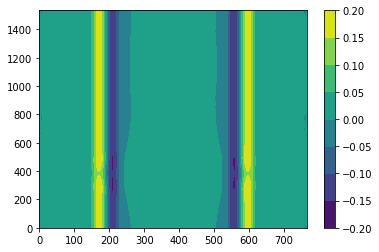
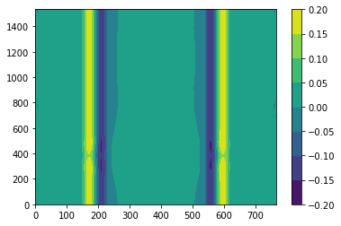

Contents
# Step 1: Install FFTW
!apt-get install libfftw3-dev
!apt-get install libfftw3-mpi-dev
# Step 2: Set paths for Dedalus installation
import os
os.environ['MPI_INCLUDE_PATH'] = "/usr/lib/x86_64-linux-gnu/openmpi/include"
os.environ['MPI_LIBRARY_PATH'] = "/usr/lib/x86_64-linux-gnu"
os.environ['FFTW_INCLUDE_PATH'] = "/usr/include"
os.environ['FFTW_LIBRARY_PATH'] = "/usr/lib/x86_64-linux-gnu"
# Step 3: Install Dedalus using pip
!pip3 install --no-cache http://github.com/dedalusproject/dedalus/zipball/d3/
/bin/bash: apt-get: command not found
/bin/bash: apt-get: command not found
Collecting http://github.com/dedalusproject/dedalus/zipball/d3/
Downloading http://github.com/dedalusproject/dedalus/zipball/d3/ (23.3MB)
?25l
0% | | 10kB 272kB/s eta 0:01:26
0% | | 20kB 527kB/s eta 0:00:45
0% | | 30kB 780kB/s eta 0:00:30
0% | | 40kB 533kB/s eta 0:00:44
0% | | 51kB 660kB/s eta 0:00:36
0% | | 61kB 788kB/s eta 0:00:30
0% | | 71kB 913kB/s eta 0:00:26
0% |▏ | 81kB 1.0MB/s eta 0:00:23
0% |▏ | 92kB 791kB/s eta 0:00:30
0% |▏ | 102kB 873kB/s eta 0:00:27
0% |▏ | 112kB 1.3MB/s eta 0:00:19
0% |▏ | 122kB 1.3MB/s eta 0:00:18
0% |▏ | 133kB 1.3MB/s eta 0:00:18
0% |▏ | 143kB 2.4MB/s eta 0:00:10
0% |▏ | 153kB 2.4MB/s eta 0:00:10
0% |▎ | 163kB 2.4MB/s eta 0:00:10
0% |▎ | 174kB 2.4MB/s eta 0:00:10
0% |▎ | 184kB 2.4MB/s eta 0:00:10
0% |▎ | 194kB 19.3MB/s eta 0:00:02
0% |▎ | 204kB 2.5MB/s eta 0:00:10
0% |▎ | 215kB 2.4MB/s eta 0:00:10
0% |▎ | 225kB 2.4MB/s eta 0:00:10
1% |▎ | 235kB 2.4MB/s eta 0:00:10
1% |▍ | 245kB 2.4MB/s eta 0:00:10
1% |▍ | 256kB 2.4MB/s eta 0:00:10
1% |▍ | 266kB 2.4MB/s eta 0:00:10
1% |▍ | 276kB 2.4MB/s eta 0:00:10
1% |▍ | 286kB 2.4MB/s eta 0:00:10
1% |▍ | 296kB 2.3MB/s eta 0:00:10
1% |▍ | 307kB 12.8MB/s eta 0:00:02
1% |▍ | 317kB 12.9MB/s eta 0:00:02
1% |▌ | 327kB 12.9MB/s eta 0:00:02
1% |▌ | 337kB 12.9MB/s eta 0:00:02
1% |▌ | 348kB 13.1MB/s eta 0:00:02
1% |▌ | 358kB 13.4MB/s eta 0:00:02
1% |▌ | 368kB 13.5MB/s eta 0:00:02
1% |▌ | 378kB 13.8MB/s eta 0:00:02
1% |▌ | 389kB 14.2MB/s eta 0:00:02
1% |▌ | 399kB 15.4MB/s eta 0:00:02
1% |▋ | 409kB 2.9MB/s eta 0:00:08
1% |▋ | 419kB 2.9MB/s eta 0:00:08
1% |▋ | 430kB 3.0MB/s eta 0:00:08
1% |▋ | 440kB 3.0MB/s eta 0:00:08
1% |▋ | 450kB 3.0MB/s eta 0:00:08
1% |▋ | 460kB 3.0MB/s eta 0:00:08
2% |▋ | 471kB 3.0MB/s eta 0:00:08
2% |▋ | 481kB 3.0MB/s eta 0:00:08
2% |▊ | 491kB 3.0MB/s eta 0:00:08
2% |▊ | 501kB 3.0MB/s eta 0:00:08
2% |▊ | 512kB 21.3MB/s eta 0:00:02
2% |▊ | 522kB 22.4MB/s eta 0:00:02
2% |▊ | 532kB 21.8MB/s eta 0:00:02
2% |▊ | 542kB 21.2MB/s eta 0:00:02
2% |▊ | 552kB 20.7MB/s eta 0:00:02
2% |▊ | 563kB 20.1MB/s eta 0:00:02
2% |▉ | 573kB 18.8MB/s eta 0:00:02
2% |▉ | 583kB 18.7MB/s eta 0:00:02
2% |▉ | 593kB 18.9MB/s eta 0:00:02
2% |▉ | 604kB 19.9MB/s eta 0:00:02
2% |▉ | 614kB 20.8MB/s eta 0:00:02
2% |▉ | 624kB 22.1MB/s eta 0:00:02
2% |▉ | 634kB 23.7MB/s eta 0:00:01
2% |▉ | 645kB 25.0MB/s eta 0:00:01
2% |█ | 655kB 26.4MB/s eta 0:00:01
2% |█ | 665kB 29.1MB/s eta 0:00:01
2% |█ | 675kB 33.3MB/s eta 0:00:01
2% |█ | 686kB 35.8MB/s eta 0:00:01
2% |█ | 696kB 34.0MB/s eta 0:00:01
3% |█ | 706kB 33.0MB/s eta 0:00:01
3% |█ | 716kB 33.7MB/s eta 0:00:01
3% |█ | 727kB 33.8MB/s eta 0:00:01
3% |█ | 737kB 33.2MB/s eta 0:00:01
3% |█ | 747kB 34.0MB/s eta 0:00:01
3% |█ | 757kB 34.4MB/s eta 0:00:01
3% |█ | 768kB 34.6MB/s eta 0:00:01
3% |█ | 778kB 34.7MB/s eta 0:00:01
3% |█ | 788kB 34.2MB/s eta 0:00:01
3% |█ | 798kB 39.7MB/s eta 0:00:01
3% |█▏ | 808kB 37.4MB/s eta 0:00:01
3% |█▏ | 819kB 36.1MB/s eta 0:00:01
3% |█▏ | 829kB 37.1MB/s eta 0:00:01
3% |█▏ | 839kB 4.0MB/s eta 0:00:06
3% |█▏ | 849kB 3.9MB/s eta 0:00:06
3% |█▏ | 860kB 3.6MB/s eta 0:00:07
3% |█▏ | 870kB 3.6MB/s eta 0:00:07
3% |█▏ | 880kB 3.6MB/s eta 0:00:07
3% |█▎ | 890kB 3.5MB/s eta 0:00:07
3% |█▎ | 901kB 3.4MB/s eta 0:00:07
3% |█▎ | 911kB 3.4MB/s eta 0:00:07
3% |█▎ | 921kB 3.4MB/s eta 0:00:07
4% |█▎ | 931kB 3.4MB/s eta 0:00:07
4% |█▎ | 942kB 15.0MB/s eta 0:00:02
4% |█▎ | 952kB 15.5MB/s eta 0:00:02
4% |█▎ | 962kB 21.6MB/s eta 0:00:02
4% |█▍ | 972kB 22.7MB/s eta 0:00:01
4% |█▍ | 983kB 23.0MB/s eta 0:00:01
4% |█▍ | 993kB 23.8MB/s eta 0:00:01
4% |█▍ | 1.0MB 31.4MB/s eta 0:00:01
4% |█▍ | 1.0MB 32.7MB/s eta 0:00:01
4% |█▍ | 1.0MB 32.9MB/s eta 0:00:01
4% |█▍ | 1.0MB 32.5MB/s eta 0:00:01
4% |█▍ | 1.0MB 35.1MB/s eta 0:00:01
4% |█▌ | 1.1MB 38.6MB/s eta 0:00:01
4% |█▌ | 1.1MB 40.4MB/s eta 0:00:01
4% |█▌ | 1.1MB 42.7MB/s eta 0:00:01
4% |█▌ | 1.1MB 41.5MB/s eta 0:00:01
4% |█▌ | 1.1MB 41.0MB/s eta 0:00:01
4% |█▌ | 1.1MB 39.5MB/s eta 0:00:01
4% |█▌ | 1.1MB 38.2MB/s eta 0:00:01
4% |█▌ | 1.1MB 38.5MB/s eta 0:00:01
4% |█▋ | 1.1MB 38.7MB/s eta 0:00:01
4% |█▋ | 1.1MB 37.8MB/s eta 0:00:01
4% |█▋ | 1.2MB 38.2MB/s eta 0:00:01
5% |█▋ | 1.2MB 38.4MB/s eta 0:00:01
5% |█▋ | 1.2MB 39.0MB/s eta 0:00:01
5% |█▋ | 1.2MB 41.3MB/s eta 0:00:01
5% |█▋ | 1.2MB 41.9MB/s eta 0:00:01
5% |█▋ | 1.2MB 45.4MB/s eta 0:00:01
5% |█▊ | 1.2MB 46.6MB/s eta 0:00:01
5% |█▊ | 1.2MB 46.8MB/s eta 0:00:01
5% |█▊ | 1.2MB 48.6MB/s eta 0:00:01
5% |█▊ | 1.2MB 50.3MB/s eta 0:00:01
5% |█▊ | 1.3MB 51.3MB/s eta 0:00:01
5% |█▊ | 1.3MB 52.2MB/s eta 0:00:01
5% |█▊ | 1.3MB 51.3MB/s eta 0:00:01
5% |█▊ | 1.3MB 52.1MB/s eta 0:00:01
5% |█▉ | 1.3MB 52.5MB/s eta 0:00:01
5% |█▉ | 1.3MB 51.5MB/s eta 0:00:01
5% |█▉ | 1.3MB 53.4MB/s eta 0:00:01
5% |█▉ | 1.3MB 54.1MB/s eta 0:00:01
5% |█▉ | 1.3MB 54.5MB/s eta 0:00:01
5% |█▉ | 1.4MB 54.8MB/s eta 0:00:01
5% |█▉ | 1.4MB 54.4MB/s eta 0:00:01
5% |█▉ | 1.4MB 55.6MB/s eta 0:00:01
5% |██ | 1.4MB 56.3MB/s eta 0:00:01
5% |██ | 1.4MB 56.1MB/s eta 0:00:01
6% |██ | 1.4MB 58.3MB/s eta 0:00:01
6% |██ | 1.4MB 49.6MB/s eta 0:00:01
6% |██ | 1.4MB 48.4MB/s eta 0:00:01
6% |██ | 1.4MB 48.6MB/s eta 0:00:01
6% |██ | 1.4MB 48.1MB/s eta 0:00:01
6% |██ | 1.5MB 49.3MB/s eta 0:00:01
6% |██ | 1.5MB 50.0MB/s eta 0:00:01
6% |██ | 1.5MB 46.1MB/s eta 0:00:01
6% |██ | 1.5MB 46.2MB/s eta 0:00:01
6% |██ | 1.5MB 46.3MB/s eta 0:00:01
6% |██ | 1.5MB 46.3MB/s eta 0:00:01
6% |██ | 1.5MB 55.0MB/s eta 0:00:01
6% |██ | 1.5MB 56.0MB/s eta 0:00:01
6% |██▏ | 1.5MB 57.3MB/s eta 0:00:01
6% |██▏ | 1.5MB 55.4MB/s eta 0:00:01
6% |██▏ | 1.6MB 53.7MB/s eta 0:00:01
6% |██▏ | 1.6MB 54.3MB/s eta 0:00:01
6% |██▏ | 1.6MB 59.5MB/s eta 0:00:01
6% |██▏ | 1.6MB 50.1MB/s eta 0:00:01
6% |██▏ | 1.6MB 46.9MB/s eta 0:00:01
6% |██▏ | 1.6MB 44.5MB/s eta 0:00:01
6% |██▎ | 1.6MB 44.1MB/s eta 0:00:01
6% |██▎ | 1.6MB 43.7MB/s eta 0:00:01
7% |██▎ | 1.6MB 42.2MB/s eta 0:00:01
7% |██▎ | 1.6MB 43.4MB/s eta 0:00:01
7% |██▎ | 1.7MB 43.3MB/s eta 0:00:01
7% |██▎ | 1.7MB 42.8MB/s eta 0:00:01
7% |██▎ | 1.7MB 42.4MB/s eta 0:00:01
7% |██▎ | 1.7MB 48.3MB/s eta 0:00:01
7% |██▍ | 1.7MB 51.2MB/s eta 0:00:01
7% |██▍ | 1.7MB 5.4MB/s eta 0:00:05
7% |██▍ | 1.7MB 4.5MB/s eta 0:00:05
7% |██▍ | 1.7MB 4.5MB/s eta 0:00:05
7% |██▍ | 1.7MB 4.5MB/s eta 0:00:05
7% |██▍ | 1.8MB 4.5MB/s eta 0:00:05
7% |██▍ | 1.8MB 4.2MB/s eta 0:00:06
7% |██▍ | 1.8MB 4.2MB/s eta 0:00:06
7% |██▌ | 1.8MB 4.2MB/s eta 0:00:06
7% |██▌ | 1.8MB 4.2MB/s eta 0:00:06
7% |██▌ | 1.8MB 4.2MB/s eta 0:00:06
7% |██▌ | 1.8MB 14.3MB/s eta 0:00:02
7% |██▌ | 1.8MB 29.3MB/s eta 0:00:01
7% |██▌ | 1.8MB 29.6MB/s eta 0:00:01
7% |██▌ | 1.8MB 10.5MB/s eta 0:00:03
7% |██▌ | 1.9MB 10.0MB/s eta 0:00:03
8% |██▋ | 1.9MB 11.3MB/s eta 0:00:02
8% |██▋ | 1.9MB 11.1MB/s eta 0:00:02
8% |██▋ | 1.9MB 10.8MB/s eta 0:00:02
8% |██▋ | 1.9MB 10.8MB/s eta 0:00:02
8% |██▋ | 1.9MB 10.7MB/s eta 0:00:02
8% |██▋ | 1.9MB 10.6MB/s eta 0:00:03
8% |██▋ | 1.9MB 10.6MB/s eta 0:00:03
8% |██▋ | 1.9MB 10.5MB/s eta 0:00:03
8% |██▊ | 1.9MB 29.6MB/s eta 0:00:01
8% |██▊ | 2.0MB 32.9MB/s eta 0:00:01
8% |██▊ | 2.0MB 33.6MB/s eta 0:00:01
8% |██▊ | 2.0MB 35.8MB/s eta 0:00:01
8% |██▊ | 2.0MB 37.9MB/s eta 0:00:01
8% |██▊ | 2.0MB 38.2MB/s eta 0:00:01
8% |██▊ | 2.0MB 37.8MB/s eta 0:00:01
8% |██▊ | 2.0MB 36.9MB/s eta 0:00:01
8% |██▉ | 2.0MB 38.2MB/s eta 0:00:01
8% |██▉ | 2.0MB 39.5MB/s eta 0:00:01
8% |██▉ | 2.0MB 39.9MB/s eta 0:00:01
8% |██▉ | 2.1MB 41.9MB/s eta 0:00:01
8% |██▉ | 2.1MB 45.1MB/s eta 0:00:01
8% |██▉ | 2.1MB 47.0MB/s eta 0:00:01
8% |██▉ | 2.1MB 49.2MB/s eta 0:00:01
9% |██▉ | 2.1MB 49.8MB/s eta 0:00:01
9% |███ | 2.1MB 53.0MB/s eta 0:00:01
9% |███ | 2.1MB 55.4MB/s eta 0:00:01
9% |███ | 2.1MB 54.7MB/s eta 0:00:01
9% |███ | 2.1MB 55.5MB/s eta 0:00:01
9% |███ | 2.2MB 55.6MB/s eta 0:00:01
9% |███ | 2.2MB 55.9MB/s eta 0:00:01
9% |███ | 2.2MB 55.8MB/s eta 0:00:01
9% |███ | 2.2MB 54.8MB/s eta 0:00:01
9% |███ | 2.2MB 55.3MB/s eta 0:00:01
9% |███ | 2.2MB 55.4MB/s eta 0:00:01
9% |███ | 2.2MB 54.5MB/s eta 0:00:01
9% |███ | 2.2MB 55.1MB/s eta 0:00:01
9% |███ | 2.2MB 55.2MB/s eta 0:00:01
9% |███ | 2.2MB 55.4MB/s eta 0:00:01
9% |███ | 2.3MB 55.5MB/s eta 0:00:01
9% |███▏ | 2.3MB 54.4MB/s eta 0:00:01
9% |███▏ | 2.3MB 55.3MB/s eta 0:00:01
9% |███▏ | 2.3MB 55.9MB/s eta 0:00:01
9% |███▏ | 2.3MB 55.5MB/s eta 0:00:01
9% |███▏ | 2.3MB 56.3MB/s eta 0:00:01
9% |███▏ | 2.3MB 56.4MB/s eta 0:00:01
9% |███▏ | 2.3MB 56.8MB/s eta 0:00:01
10% |███▏ | 2.3MB 56.8MB/s eta 0:00:01
10% |███▎ | 2.3MB 55.4MB/s eta 0:00:01
10% |███▎ | 2.4MB 56.2MB/s eta 0:00:01
10% |███▎ | 2.4MB 56.0MB/s eta 0:00:01
10% |███▎ | 2.4MB 55.1MB/s eta 0:00:01
10% |███▎ | 2.4MB 55.6MB/s eta 0:00:01
10% |███▎ | 2.4MB 51.6MB/s eta 0:00:01
10% |███▎ | 2.4MB 49.6MB/s eta 0:00:01
10% |███▎ | 2.4MB 48.9MB/s eta 0:00:01
10% |███▍ | 2.4MB 45.7MB/s eta 0:00:01
10% |███▍ | 2.4MB 45.7MB/s eta 0:00:01
10% |███▍ | 2.4MB 45.8MB/s eta 0:00:01
10% |███▍ | 2.5MB 45.1MB/s eta 0:00:01
10% |███▍ | 2.5MB 45.9MB/s eta 0:00:01
10% |███▍ | 2.5MB 46.1MB/s eta 0:00:01
10% |███▍ | 2.5MB 46.6MB/s eta 0:00:01
10% |███▍ | 2.5MB 49.8MB/s eta 0:00:01
10% |███▌ | 2.5MB 51.0MB/s eta 0:00:01
10% |███▌ | 2.5MB 52.7MB/s eta 0:00:01
10% |███▌ | 2.5MB 56.0MB/s eta 0:00:01
10% |███▌ | 2.5MB 56.0MB/s eta 0:00:01
10% |███▌ | 2.5MB 57.2MB/s eta 0:00:01
11% |███▌ | 2.6MB 57.3MB/s eta 0:00:01
11% |███▌ | 2.6MB 57.5MB/s eta 0:00:01
11% |███▌ | 2.6MB 57.6MB/s eta 0:00:01
11% |███▋ | 2.6MB 56.2MB/s eta 0:00:01
11% |███▋ | 2.6MB 57.2MB/s eta 0:00:01
11% |███▋ | 2.6MB 57.6MB/s eta 0:00:01
11% |███▋ | 2.6MB 56.5MB/s eta 0:00:01
11% |███▋ | 2.6MB 57.7MB/s eta 0:00:01
11% |███▋ | 2.6MB 58.7MB/s eta 0:00:01
11% |███▋ | 2.7MB 59.9MB/s eta 0:00:01
11% |███▋ | 2.7MB 61.7MB/s eta 0:00:01
11% |███▊ | 2.7MB 61.7MB/s eta 0:00:01
11% |███▊ | 2.7MB 64.2MB/s eta 0:00:01
11% |███▊ | 2.7MB 66.2MB/s eta 0:00:01
11% |███▊ | 2.7MB 66.3MB/s eta 0:00:01
11% |███▊ | 2.7MB 69.1MB/s eta 0:00:01
11% |███▊ | 2.7MB 70.8MB/s eta 0:00:01
11% |███▊ | 2.7MB 71.0MB/s eta 0:00:01
11% |███▊ | 2.7MB 72.9MB/s eta 0:00:01
11% |███▉ | 2.8MB 71.5MB/s eta 0:00:01
11% |███▉ | 2.8MB 72.9MB/s eta 0:00:01
11% |███▉ | 2.8MB 73.5MB/s eta 0:00:01
11% |███▉ | 2.8MB 72.1MB/s eta 0:00:01
12% |███▉ | 2.8MB 72.9MB/s eta 0:00:01
12% |███▉ | 2.8MB 73.1MB/s eta 0:00:01
12% |███▉ | 2.8MB 71.5MB/s eta 0:00:01
12% |███▉ | 2.8MB 73.2MB/s eta 0:00:01
12% |████ | 2.8MB 73.6MB/s eta 0:00:01
12% |████ | 2.8MB 73.7MB/s eta 0:00:01
12% |████ | 2.9MB 73.9MB/s eta 0:00:01
12% |████ | 2.9MB 72.4MB/s eta 0:00:01
12% |████ | 2.9MB 73.1MB/s eta 0:00:01
12% |████ | 2.9MB 72.8MB/s eta 0:00:01
12% |████ | 2.9MB 71.9MB/s eta 0:00:01
12% |████ | 2.9MB 73.2MB/s eta 0:00:01
12% |████ | 2.9MB 55.5MB/s eta 0:00:01
12% |████ | 2.9MB 54.9MB/s eta 0:00:01
12% |████ | 2.9MB 54.8MB/s eta 0:00:01
12% |████ | 2.9MB 53.8MB/s eta 0:00:01
12% |████ | 3.0MB 54.5MB/s eta 0:00:01
12% |████ | 3.0MB 54.5MB/s eta 0:00:01
12% |████ | 3.0MB 53.8MB/s eta 0:00:01
12% |████▏ | 3.0MB 54.7MB/s eta 0:00:01
12% |████▏ | 3.0MB 54.8MB/s eta 0:00:01
12% |████▏ | 3.0MB 54.6MB/s eta 0:00:01
12% |████▏ | 3.0MB 71.6MB/s eta 0:00:01
13% |████▏ | 3.0MB 71.0MB/s eta 0:00:01
13% |████▏ | 3.0MB 71.7MB/s eta 0:00:01
13% |████▏ | 3.1MB 71.9MB/s eta 0:00:01
13% |████▏ | 3.1MB 70.4MB/s eta 0:00:01
13% |████▎ | 3.1MB 71.7MB/s eta 0:00:01
13% |████▎ | 3.1MB 71.9MB/s eta 0:00:01
13% |████▎ | 3.1MB 72.3MB/s eta 0:00:01
13% |████▎ | 3.1MB 71.8MB/s eta 0:00:01
13% |████▎ | 3.1MB 70.3MB/s eta 0:00:01
13% |████▎ | 3.1MB 71.9MB/s eta 0:00:01
13% |████▎ | 3.1MB 48.4MB/s eta 0:00:01
13% |████▎ | 3.1MB 47.4MB/s eta 0:00:01
13% |████▍ | 3.2MB 47.8MB/s eta 0:00:01
13% |████▍ | 3.2MB 47.9MB/s eta 0:00:01
13% |████▍ | 3.2MB 48.0MB/s eta 0:00:01
13% |████▍ | 3.2MB 48.0MB/s eta 0:00:01
13% |████▍ | 3.2MB 47.3MB/s eta 0:00:01
13% |████▍ | 3.2MB 48.1MB/s eta 0:00:01
13% |████▍ | 3.2MB 48.4MB/s eta 0:00:01
13% |████▍ | 3.2MB 23.7MB/s eta 0:00:01
13% |████▌ | 3.2MB 28.3MB/s eta 0:00:01
13% |████▌ | 3.2MB 28.5MB/s eta 0:00:01
13% |████▌ | 3.3MB 28.6MB/s eta 0:00:01
14% |████▌ | 3.3MB 28.6MB/s eta 0:00:01
14% |████▌ | 3.3MB 28.3MB/s eta 0:00:01
14% |████▌ | 3.3MB 28.5MB/s eta 0:00:01
14% |████▌ | 3.3MB 28.5MB/s eta 0:00:01
14% |████▌ | 3.3MB 27.5MB/s eta 0:00:01
14% |████▋ | 3.3MB 27.6MB/s eta 0:00:01
14% |████▋ | 3.3MB 66.8MB/s eta 0:00:01
14% |████▋ | 3.3MB 67.9MB/s eta 0:00:01
14% |████▋ | 3.3MB 68.0MB/s eta 0:00:01
14% |████▋ | 3.4MB 66.7MB/s eta 0:00:01
14% |████▋ | 3.4MB 67.9MB/s eta 0:00:01
14% |████▋ | 3.4MB 68.5MB/s eta 0:00:01
14% |████▋ | 3.4MB 67.2MB/s eta 0:00:01
14% |████▊ | 3.4MB 68.3MB/s eta 0:00:01
14% |████▊ | 3.4MB 73.5MB/s eta 0:00:01
14% |████▊ | 3.4MB 74.2MB/s eta 0:00:01
14% |████▊ | 3.4MB 66.7MB/s eta 0:00:01
14% |████▊ | 3.4MB 38.0MB/s eta 0:00:01
14% |████▊ | 3.5MB 38.1MB/s eta 0:00:01
14% |████▊ | 3.5MB 38.2MB/s eta 0:00:01
14% |████▊ | 3.5MB 37.7MB/s eta 0:00:01
14% |████▉ | 3.5MB 38.1MB/s eta 0:00:01
15% |████▉ | 3.5MB 38.2MB/s eta 0:00:01
15% |████▉ | 3.5MB 38.2MB/s eta 0:00:01
15% |████▉ | 3.5MB 38.3MB/s eta 0:00:01
15% |████▉ | 3.5MB 37.8MB/s eta 0:00:01
15% |████▉ | 3.5MB 40.5MB/s eta 0:00:01
15% |████▉ | 3.5MB 73.7MB/s eta 0:00:01
15% |████▉ | 3.6MB 59.6MB/s eta 0:00:01
15% |█████ | 3.6MB 60.0MB/s eta 0:00:01
15% |█████ | 3.6MB 60.2MB/s eta 0:00:01
15% |█████ | 3.6MB 60.2MB/s eta 0:00:01
15% |█████ | 3.6MB 37.5MB/s eta 0:00:01
15% |█████ | 3.6MB 36.9MB/s eta 0:00:01
15% |█████ | 3.6MB 37.2MB/s eta 0:00:01
15% |█████ | 3.6MB 37.2MB/s eta 0:00:01
15% |█████ | 3.6MB 32.0MB/s eta 0:00:01
15% |█████ | 3.6MB 30.9MB/s eta 0:00:01
15% |█████ | 3.7MB 5.2MB/s eta 0:00:04
15% |█████ | 3.7MB 5.1MB/s eta 0:00:04
15% |█████ | 3.7MB 5.1MB/s eta 0:00:04
15% |█████ | 3.7MB 5.1MB/s eta 0:00:04
15% |█████ | 3.7MB 5.4MB/s eta 0:00:04
15% |█████ | 3.7MB 5.3MB/s eta 0:00:04
15% |█████▏ | 3.7MB 5.3MB/s eta 0:00:04
16% |█████▏ | 3.7MB 5.3MB/s eta 0:00:04
16% |█████▏ | 3.7MB 5.0MB/s eta 0:00:04
16% |█████▏ | 3.7MB 5.0MB/s eta 0:00:04
16% |█████▏ | 3.8MB 27.0MB/s eta 0:00:01
16% |█████▏ | 3.8MB 28.4MB/s eta 0:00:01
16% |█████▏ | 3.8MB 28.5MB/s eta 0:00:01
16% |█████▏ | 3.8MB 28.5MB/s eta 0:00:01
16% |█████▎ | 3.8MB 28.2MB/s eta 0:00:01
16% |█████▎ | 3.8MB 31.8MB/s eta 0:00:01
16% |█████▎ | 3.8MB 32.4MB/s eta 0:00:01
16% |█████▎ | 3.8MB 31.6MB/s eta 0:00:01
16% |█████▎ | 3.8MB 56.4MB/s eta 0:00:01
16% |█████▎ | 3.9MB 58.2MB/s eta 0:00:01
16% |█████▎ | 3.9MB 59.6MB/s eta 0:00:01
16% |█████▎ | 3.9MB 59.8MB/s eta 0:00:01
16% |█████▍ | 3.9MB 58.9MB/s eta 0:00:01
16% |█████▍ | 3.9MB 56.6MB/s eta 0:00:01
16% |█████▍ | 3.9MB 31.0MB/s eta 0:00:01
16% |█████▍ | 3.9MB 30.7MB/s eta 0:00:01
16% |█████▍ | 3.9MB 30.4MB/s eta 0:00:01
16% |█████▍ | 3.9MB 30.7MB/s eta 0:00:01
16% |█████▍ | 3.9MB 31.2MB/s eta 0:00:01
16% |█████▍ | 4.0MB 31.0MB/s eta 0:00:01
17% |█████▌ | 4.0MB 30.6MB/s eta 0:00:01
17% |█████▌ | 4.0MB 30.6MB/s eta 0:00:01
17% |█████▌ | 4.0MB 30.5MB/s eta 0:00:01
17% |█████▌ | 4.0MB 31.3MB/s eta 0:00:01
17% |█████▌ | 4.0MB 57.0MB/s eta 0:00:01
17% |█████▌ | 4.0MB 56.5MB/s eta 0:00:01
17% |█████▌ | 4.0MB 57.6MB/s eta 0:00:01
17% |█████▌ | 4.0MB 57.8MB/s eta 0:00:01
17% |█████▋ | 4.0MB 56.4MB/s eta 0:00:01
17% |█████▋ | 4.1MB 57.7MB/s eta 0:00:01
17% |█████▋ | 4.1MB 58.0MB/s eta 0:00:01
17% |█████▋ | 4.1MB 58.1MB/s eta 0:00:01
17% |█████▋ | 4.1MB 58.2MB/s eta 0:00:01
17% |█████▋ | 4.1MB 57.1MB/s eta 0:00:01
17% |█████▋ | 4.1MB 58.1MB/s eta 0:00:01
17% |█████▋ | 4.1MB 58.2MB/s eta 0:00:01
17% |█████▊ | 4.1MB 56.8MB/s eta 0:00:01
17% |█████▊ | 4.1MB 57.7MB/s eta 0:00:01
17% |█████▊ | 4.1MB 57.8MB/s eta 0:00:01
17% |█████▊ | 4.2MB 57.5MB/s eta 0:00:01
17% |█████▊ | 4.2MB 57.5MB/s eta 0:00:01
17% |█████▊ | 4.2MB 55.6MB/s eta 0:00:01
18% |█████▊ | 4.2MB 56.0MB/s eta 0:00:01
18% |█████▊ | 4.2MB 55.5MB/s eta 0:00:01
18% |█████▉ | 4.2MB 54.0MB/s eta 0:00:01
18% |█████▉ | 4.2MB 54.4MB/s eta 0:00:01
18% |█████▉ | 4.2MB 54.3MB/s eta 0:00:01
18% |█████▉ | 4.2MB 54.2MB/s eta 0:00:01
18% |█████▉ | 4.2MB 55.2MB/s eta 0:00:01
18% |█████▉ | 4.3MB 55.2MB/s eta 0:00:01
18% |█████▉ | 4.3MB 56.7MB/s eta 0:00:01
18% |█████▉ | 4.3MB 58.2MB/s eta 0:00:01
18% |██████ | 4.3MB 58.4MB/s eta 0:00:01
18% |██████ | 4.3MB 60.7MB/s eta 0:00:01
18% |██████ | 4.3MB 62.5MB/s eta 0:00:01
18% |██████ | 4.3MB 64.0MB/s eta 0:00:01
18% |██████ | 4.3MB 65.8MB/s eta 0:00:01
18% |██████ | 4.3MB 65.8MB/s eta 0:00:01
18% |██████ | 4.4MB 66.8MB/s eta 0:00:01
18% |██████ | 4.4MB 66.8MB/s eta 0:00:01
18% |██████ | 4.4MB 65.6MB/s eta 0:00:01
18% |██████ | 4.4MB 67.2MB/s eta 0:00:01
18% |██████ | 4.4MB 67.3MB/s eta 0:00:01
18% |██████ | 4.4MB 67.2MB/s eta 0:00:01
18% |██████ | 4.4MB 67.3MB/s eta 0:00:01
19% |██████ | 4.4MB 66.1MB/s eta 0:00:01
19% |██████ | 4.4MB 67.2MB/s eta 0:00:01
19% |██████▏ | 4.4MB 67.3MB/s eta 0:00:01
19% |██████▏ | 4.5MB 66.0MB/s eta 0:00:01
19% |██████▏ | 4.5MB 67.1MB/s eta 0:00:01
19% |██████▏ | 4.5MB 67.3MB/s eta 0:00:01
19% |██████▏ | 4.5MB 67.1MB/s eta 0:00:01
19% |██████▏ | 4.5MB 67.1MB/s eta 0:00:01
19% |██████▏ | 4.5MB 66.0MB/s eta 0:00:01
19% |██████▏ | 4.5MB 67.1MB/s eta 0:00:01
19% |██████▎ | 4.5MB 67.0MB/s eta 0:00:01
19% |██████▎ | 4.5MB 65.6MB/s eta 0:00:01
19% |██████▎ | 4.5MB 66.5MB/s eta 0:00:01
19% |██████▎ | 4.6MB 66.8MB/s eta 0:00:01
19% |██████▎ | 4.6MB 66.8MB/s eta 0:00:01
19% |██████▎ | 4.6MB 66.8MB/s eta 0:00:01
19% |██████▎ | 4.6MB 65.6MB/s eta 0:00:01
19% |██████▎ | 4.6MB 66.6MB/s eta 0:00:01
19% |██████▍ | 4.6MB 66.8MB/s eta 0:00:01
19% |██████▍ | 4.6MB 65.6MB/s eta 0:00:01
19% |██████▍ | 4.6MB 66.6MB/s eta 0:00:01
19% |██████▍ | 4.6MB 66.9MB/s eta 0:00:01
19% |██████▍ | 4.6MB 67.2MB/s eta 0:00:01
20% |██████▍ | 4.7MB 67.1MB/s eta 0:00:01
20% |██████▍ | 4.7MB 65.9MB/s eta 0:00:01
20% |██████▍ | 4.7MB 67.0MB/s eta 0:00:01
20% |██████▌ | 4.7MB 67.1MB/s eta 0:00:01
20% |██████▌ | 4.7MB 66.1MB/s eta 0:00:01
20% |██████▌ | 4.7MB 67.0MB/s eta 0:00:01
20% |██████▌ | 4.7MB 58.4MB/s eta 0:00:01
20% |██████▌ | 4.7MB 56.3MB/s eta 0:00:01
20% |██████▌ | 4.7MB 54.9MB/s eta 0:00:01
20% |██████▌ | 4.8MB 2.0MB/s eta 0:00:10
20% |██████▌ | 4.8MB 2.0MB/s eta 0:00:10
20% |██████▋ | 4.8MB 1.8MB/s eta 0:00:11
20% |██████▋ | 4.8MB 1.8MB/s eta 0:00:11
20% |██████▋ | 4.8MB 1.8MB/s eta 0:00:11
20% |██████▋ | 4.8MB 1.8MB/s eta 0:00:11
20% |██████▋ | 4.8MB 1.8MB/s eta 0:00:11
20% |██████▋ | 4.8MB 1.8MB/s eta 0:00:11
20% |██████▋ | 4.8MB 1.8MB/s eta 0:00:11
20% |██████▋ | 4.8MB 1.8MB/s eta 0:00:11
20% |██████▊ | 4.9MB 14.3MB/s eta 0:00:02
20% |██████▊ | 4.9MB 12.7MB/s eta 0:00:02
20% |██████▊ | 4.9MB 25.7MB/s eta 0:00:01
20% |██████▊ | 4.9MB 26.3MB/s eta 0:00:01
21% |██████▊ | 4.9MB 26.6MB/s eta 0:00:01
21% |██████▊ | 4.9MB 27.0MB/s eta 0:00:01
21% |██████▊ | 4.9MB 26.9MB/s eta 0:00:01
21% |██████▊ | 4.9MB 27.1MB/s eta 0:00:01
21% |██████▉ | 4.9MB 27.2MB/s eta 0:00:01
21% |██████▉ | 4.9MB 27.0MB/s eta 0:00:01
21% |██████▉ | 5.0MB 26.9MB/s eta 0:00:01
21% |██████▉ | 5.0MB 41.9MB/s eta 0:00:01
21% |██████▉ | 5.0MB 42.6MB/s eta 0:00:01
21% |██████▉ | 5.0MB 30.0MB/s eta 0:00:01
21% |██████▉ | 5.0MB 30.4MB/s eta 0:00:01
21% |██████▉ | 5.0MB 30.7MB/s eta 0:00:01
21% |███████ | 5.0MB 30.4MB/s eta 0:00:01
21% |███████ | 5.0MB 29.5MB/s eta 0:00:01
21% |███████ | 5.0MB 29.7MB/s eta 0:00:01
21% |███████ | 5.0MB 29.8MB/s eta 0:00:01
21% |███████ | 5.1MB 30.1MB/s eta 0:00:01
21% |███████ | 5.1MB 30.5MB/s eta 0:00:01
21% |███████ | 5.1MB 32.4MB/s eta 0:00:01
21% |███████ | 5.1MB 50.7MB/s eta 0:00:01
21% |███████ | 5.1MB 53.2MB/s eta 0:00:01
21% |███████ | 5.1MB 53.2MB/s eta 0:00:01
22% |███████ | 5.1MB 55.6MB/s eta 0:00:01
22% |███████ | 5.1MB 58.8MB/s eta 0:00:01
22% |███████ | 5.1MB 59.1MB/s eta 0:00:01
22% |███████ | 5.2MB 61.2MB/s eta 0:00:01
22% |███████ | 5.2MB 61.1MB/s eta 0:00:01
22% |███████▏ | 5.2MB 62.2MB/s eta 0:00:01
22% |███████▏ | 5.2MB 62.9MB/s eta 0:00:01
22% |███████▏ | 5.2MB 62.5MB/s eta 0:00:01
22% |███████▏ | 5.2MB 63.7MB/s eta 0:00:01
22% |███████▏ | 5.2MB 64.5MB/s eta 0:00:01
22% |███████▏ | 5.2MB 63.6MB/s eta 0:00:01
22% |███████▏ | 5.2MB 64.5MB/s eta 0:00:01
22% |███████▏ | 5.2MB 62.5MB/s eta 0:00:01
22% |███████▎ | 5.3MB 62.5MB/s eta 0:00:01
22% |███████▎ | 5.3MB 64.4MB/s eta 0:00:01
22% |███████▎ | 5.3MB 64.5MB/s eta 0:00:01
22% |███████▎ | 5.3MB 65.4MB/s eta 0:00:01
22% |███████▎ | 5.3MB 65.6MB/s eta 0:00:01
22% |███████▎ | 5.3MB 57.3MB/s eta 0:00:01
22% |███████▎ | 5.3MB 53.7MB/s eta 0:00:01
22% |███████▎ | 5.3MB 52.6MB/s eta 0:00:01
22% |███████▍ | 5.3MB 52.0MB/s eta 0:00:01
22% |███████▍ | 5.3MB 52.6MB/s eta 0:00:01
23% |███████▍ | 5.4MB 50.9MB/s eta 0:00:01
23% |███████▍ | 5.4MB 50.8MB/s eta 0:00:01
23% |███████▍ | 5.4MB 49.9MB/s eta 0:00:01
23% |███████▍ | 5.4MB 48.4MB/s eta 0:00:01
23% |███████▍ | 5.4MB 48.3MB/s eta 0:00:01
23% |███████▍ | 5.4MB 52.8MB/s eta 0:00:01
23% |███████▌ | 5.4MB 56.2MB/s eta 0:00:01
23% |███████▌ | 5.4MB 56.8MB/s eta 0:00:01
23% |███████▌ | 5.4MB 55.9MB/s eta 0:00:01
23% |███████▌ | 5.4MB 57.1MB/s eta 0:00:01
23% |███████▌ | 5.5MB 57.6MB/s eta 0:00:01
23% |███████▌ | 5.5MB 56.5MB/s eta 0:00:01
23% |███████▌ | 5.5MB 57.9MB/s eta 0:00:01
23% |███████▌ | 5.5MB 58.4MB/s eta 0:00:01
23% |███████▋ | 5.5MB 58.5MB/s eta 0:00:01
23% |███████▋ | 5.5MB 58.8MB/s eta 0:00:01
23% |███████▋ | 5.5MB 59.0MB/s eta 0:00:01
23% |███████▋ | 5.5MB 60.9MB/s eta 0:00:01
23% |███████▋ | 5.5MB 62.6MB/s eta 0:00:01
23% |███████▋ | 5.6MB 62.7MB/s eta 0:00:01
23% |███████▋ | 5.6MB 65.1MB/s eta 0:00:01
23% |███████▋ | 5.6MB 67.3MB/s eta 0:00:01
23% |███████▊ | 5.6MB 68.9MB/s eta 0:00:01
24% |███████▊ | 5.6MB 70.5MB/s eta 0:00:01
24% |███████▊ | 5.6MB 70.7MB/s eta 0:00:01
24% |███████▊ | 5.6MB 73.2MB/s eta 0:00:01
24% |███████▊ | 5.6MB 73.6MB/s eta 0:00:01
24% |███████▊ | 5.6MB 72.5MB/s eta 0:00:01
24% |███████▊ | 5.6MB 73.8MB/s eta 0:00:01
24% |███████▊ | 5.7MB 74.4MB/s eta 0:00:01
24% |███████▉ | 5.7MB 74.5MB/s eta 0:00:01
24% |███████▉ | 5.7MB 74.5MB/s eta 0:00:01
24% |███████▉ | 5.7MB 72.8MB/s eta 0:00:01
24% |███████▉ | 5.7MB 74.1MB/s eta 0:00:01
24% |███████▉ | 5.7MB 74.5MB/s eta 0:00:01
24% |███████▉ | 5.7MB 72.9MB/s eta 0:00:01
24% |███████▉ | 5.7MB 74.2MB/s eta 0:00:01
24% |███████▉ | 5.7MB 74.6MB/s eta 0:00:01
24% |████████ | 5.7MB 74.7MB/s eta 0:00:01
24% |████████ | 5.8MB 74.7MB/s eta 0:00:01
24% |████████ | 5.8MB 73.1MB/s eta 0:00:01
24% |████████ | 5.8MB 74.4MB/s eta 0:00:01
24% |████████ | 5.8MB 74.8MB/s eta 0:00:01
24% |████████ | 5.8MB 73.2MB/s eta 0:00:01
24% |████████ | 5.8MB 74.5MB/s eta 0:00:01
24% |████████ | 5.8MB 75.3MB/s eta 0:00:01
25% |████████ | 5.8MB 75.4MB/s eta 0:00:01
25% |████████ | 5.8MB 75.2MB/s eta 0:00:01
25% |████████ | 5.8MB 73.7MB/s eta 0:00:01
25% |████████ | 5.9MB 74.9MB/s eta 0:00:01
25% |████████ | 5.9MB 75.1MB/s eta 0:00:01
25% |████████ | 5.9MB 73.4MB/s eta 0:00:01
25% |████████ | 5.9MB 74.6MB/s eta 0:00:01
25% |████████▏ | 5.9MB 75.1MB/s eta 0:00:01
25% |████████▏ | 5.9MB 75.0MB/s eta 0:00:01
25% |████████▏ | 5.9MB 74.6MB/s eta 0:00:01
25% |████████▏ | 5.9MB 73.0MB/s eta 0:00:01
25% |████████▏ | 5.9MB 74.2MB/s eta 0:00:01
25% |████████▏ | 5.9MB 74.4MB/s eta 0:00:01
25% |████████▏ | 6.0MB 72.8MB/s eta 0:00:01
25% |████████▏ | 6.0MB 73.9MB/s eta 0:00:01
25% |████████▎ | 6.0MB 74.4MB/s eta 0:00:01
25% |████████▎ | 6.0MB 74.4MB/s eta 0:00:01
25% |████████▎ | 6.0MB 74.3MB/s eta 0:00:01
25% |████████▎ | 6.0MB 72.7MB/s eta 0:00:01
25% |████████▎ | 6.0MB 74.0MB/s eta 0:00:01
25% |████████▎ | 6.0MB 74.2MB/s eta 0:00:01
25% |████████▎ | 6.0MB 72.7MB/s eta 0:00:01
26% |████████▎ | 6.1MB 74.0MB/s eta 0:00:01
26% |████████▍ | 6.1MB 74.6MB/s eta 0:00:01
26% |████████▍ | 6.1MB 74.8MB/s eta 0:00:01
26% |████████▍ | 6.1MB 74.3MB/s eta 0:00:01
26% |████████▍ | 6.1MB 73.2MB/s eta 0:00:01
26% |████████▍ | 6.1MB 75.6MB/s eta 0:00:01
26% |████████▍ | 6.1MB 77.6MB/s eta 0:00:01
26% |████████▍ | 6.1MB 77.5MB/s eta 0:00:01
26% |████████▍ | 6.1MB 80.3MB/s eta 0:00:01
26% |████████▌ | 6.1MB 82.5MB/s eta 0:00:01
26% |████████▌ | 6.2MB 83.9MB/s eta 0:00:01
26% |████████▌ | 6.2MB 85.4MB/s eta 0:00:01
26% |████████▌ | 6.2MB 84.3MB/s eta 0:00:01
26% |████████▌ | 6.2MB 87.1MB/s eta 0:00:01
26% |████████▌ | 6.2MB 88.4MB/s eta 0:00:01
26% |████████▌ | 6.2MB 86.5MB/s eta 0:00:01
26% |████████▌ | 6.2MB 87.1MB/s eta 0:00:01
26% |████████▋ | 6.2MB 87.8MB/s eta 0:00:01
26% |████████▋ | 6.2MB 87.1MB/s eta 0:00:01
26% |████████▋ | 6.2MB 86.6MB/s eta 0:00:01
26% |████████▋ | 6.3MB 67.2MB/s eta 0:00:01
26% |████████▋ | 6.3MB 67.3MB/s eta 0:00:01
26% |████████▋ | 6.3MB 68.0MB/s eta 0:00:01
27% |████████▋ | 6.3MB 67.2MB/s eta 0:00:01
27% |████████▋ | 6.3MB 68.2MB/s eta 0:00:01
27% |████████▊ | 6.3MB 57.9MB/s eta 0:00:01
27% |████████▊ | 6.3MB 57.9MB/s eta 0:00:01
27% |████████▊ | 6.3MB 24.3MB/s eta 0:00:01
27% |████████▊ | 6.3MB 24.1MB/s eta 0:00:01
27% |████████▊ | 6.3MB 24.2MB/s eta 0:00:01
27% |████████▊ | 6.4MB 26.2MB/s eta 0:00:01
27% |████████▊ | 6.4MB 26.1MB/s eta 0:00:01
27% |████████▊ | 6.4MB 26.3MB/s eta 0:00:01
27% |████████▉ | 6.4MB 26.3MB/s eta 0:00:01
27% |████████▉ | 6.4MB 26.4MB/s eta 0:00:01
27% |████████▉ | 6.4MB 28.3MB/s eta 0:00:01
27% |████████▉ | 6.4MB 28.1MB/s eta 0:00:01
27% |████████▉ | 6.4MB 87.4MB/s eta 0:00:01
27% |████████▉ | 6.4MB 88.5MB/s eta 0:00:01
27% |████████▉ | 6.5MB 86.8MB/s eta 0:00:01
27% |████████▉ | 6.5MB 88.8MB/s eta 0:00:01
27% |█████████ | 6.5MB 89.7MB/s eta 0:00:01
27% |█████████ | 6.5MB 89.7MB/s eta 0:00:01
27% |█████████ | 6.5MB 31.6MB/s eta 0:00:01
27% |█████████ | 6.5MB 30.8MB/s eta 0:00:01
27% |█████████ | 6.5MB 30.9MB/s eta 0:00:01
28% |█████████ | 6.5MB 30.8MB/s eta 0:00:01
28% |█████████ | 6.5MB 30.5MB/s eta 0:00:01
28% |█████████ | 6.5MB 30.6MB/s eta 0:00:01
28% |█████████ | 6.6MB 30.6MB/s eta 0:00:01
28% |█████████ | 6.6MB 30.5MB/s eta 0:00:01
28% |█████████ | 6.6MB 29.0MB/s eta 0:00:01
28% |█████████ | 6.6MB 27.8MB/s eta 0:00:01
28% |█████████ | 6.6MB 64.4MB/s eta 0:00:01
28% |█████████ | 6.6MB 66.0MB/s eta 0:00:01
28% |█████████ | 6.6MB 38.2MB/s eta 0:00:01
28% |█████████▏ | 6.6MB 38.1MB/s eta 0:00:01
28% |█████████▏ | 6.6MB 13.3MB/s eta 0:00:02
28% |█████████▏ | 6.6MB 13.3MB/s eta 0:00:02
28% |█████████▏ | 6.7MB 10.4MB/s eta 0:00:02
28% |█████████▏ | 6.7MB 10.3MB/s eta 0:00:02
28% |█████████▏ | 6.7MB 10.5MB/s eta 0:00:02
28% |█████████▏ | 6.7MB 9.2MB/s eta 0:00:02
28% |█████████▏ | 6.7MB 9.2MB/s eta 0:00:02
28% |█████████▎ | 6.7MB 9.2MB/s eta 0:00:02
28% |█████████▎ | 6.7MB 10.2MB/s eta 0:00:02
28% |█████████▎ | 6.7MB 10.2MB/s eta 0:00:02
28% |█████████▎ | 6.7MB 20.2MB/s eta 0:00:01
29% |█████████▎ | 6.7MB 20.2MB/s eta 0:00:01
29% |█████████▎ | 6.8MB 34.9MB/s eta 0:00:01
29% |█████████▎ | 6.8MB 35.1MB/s eta 0:00:01
29% |█████████▎ | 6.8MB 35.0MB/s eta 0:00:01
29% |█████████▍ | 6.8MB 70.8MB/s eta 0:00:01
29% |█████████▍ | 6.8MB 66.8MB/s eta 0:00:01
29% |█████████▍ | 6.8MB 66.1MB/s eta 0:00:01
29% |█████████▍ | 6.8MB 65.7MB/s eta 0:00:01
29% |█████████▍ | 6.8MB 62.6MB/s eta 0:00:01
29% |█████████▍ | 6.8MB 63.3MB/s eta 0:00:01
29% |█████████▍ | 6.9MB 1.1MB/s eta 0:00:15
29% |█████████▍ | 6.9MB 1.1MB/s eta 0:00:16
29% |█████████▌ | 6.9MB 1.1MB/s eta 0:00:16
29% |█████████▌ | 6.9MB 1.1MB/s eta 0:00:16
29% |█████████▌ | 6.9MB 1.1MB/s eta 0:00:16
29% |█████████▌ | 6.9MB 1.1MB/s eta 0:00:16
29% |█████████▌ | 6.9MB 1.1MB/s eta 0:00:16
29% |█████████▌ | 6.9MB 1.1MB/s eta 0:00:16
29% |█████████▌ | 6.9MB 1.1MB/s eta 0:00:16
29% |█████████▌ | 6.9MB 1.1MB/s eta 0:00:16
29% |█████████▋ | 7.0MB 21.3MB/s eta 0:00:01
29% |█████████▋ | 7.0MB 22.1MB/s eta 0:00:01
29% |█████████▋ | 7.0MB 21.3MB/s eta 0:00:01
30% |█████████▋ | 7.0MB 22.9MB/s eta 0:00:01
30% |█████████▋ | 7.0MB 22.2MB/s eta 0:00:01
30% |█████████▋ | 7.0MB 22.2MB/s eta 0:00:01
30% |█████████▋ | 7.0MB 22.2MB/s eta 0:00:01
30% |█████████▋ | 7.0MB 21.9MB/s eta 0:00:01
30% |█████████▊ | 7.0MB 21.5MB/s eta 0:00:01
30% |█████████▊ | 7.0MB 22.5MB/s eta 0:00:01
30% |█████████▊ | 7.1MB 23.2MB/s eta 0:00:01
30% |█████████▊ | 7.1MB 24.5MB/s eta 0:00:01
30% |█████████▊ | 7.1MB 25.9MB/s eta 0:00:01
30% |█████████▊ | 7.1MB 26.6MB/s eta 0:00:01
30% |█████████▊ | 7.1MB 27.7MB/s eta 0:00:01
30% |█████████▊ | 7.1MB 27.1MB/s eta 0:00:01
30% |█████████▉ | 7.1MB 28.0MB/s eta 0:00:01
30% |█████████▉ | 7.1MB 29.0MB/s eta 0:00:01
30% |█████████▉ | 7.1MB 31.7MB/s eta 0:00:01
30% |█████████▉ | 7.1MB 33.2MB/s eta 0:00:01
30% |█████████▉ | 7.2MB 36.3MB/s eta 0:00:01
30% |█████████▉ | 7.2MB 36.3MB/s eta 0:00:01
30% |█████████▉ | 7.2MB 36.2MB/s eta 0:00:01
30% |█████████▉ | 7.2MB 35.7MB/s eta 0:00:01
30% |██████████ | 7.2MB 32.4MB/s eta 0:00:01
30% |██████████ | 7.2MB 29.5MB/s eta 0:00:01
31% |██████████ | 7.2MB 28.4MB/s eta 0:00:01
31% |██████████ | 7.2MB 28.5MB/s eta 0:00:01
31% |██████████ | 7.2MB 28.7MB/s eta 0:00:01
31% |██████████ | 7.2MB 28.7MB/s eta 0:00:01
31% |██████████ | 7.3MB 28.3MB/s eta 0:00:01
31% |██████████ | 7.3MB 27.8MB/s eta 0:00:01
31% |██████████ | 7.3MB 28.0MB/s eta 0:00:01
31% |██████████ | 7.3MB 28.3MB/s eta 0:00:01
31% |██████████ | 7.3MB 31.6MB/s eta 0:00:01
31% |██████████ | 7.3MB 38.2MB/s eta 0:00:01
31% |██████████ | 7.3MB 41.1MB/s eta 0:00:01
31% |██████████ | 7.3MB 42.3MB/s eta 0:00:01
31% |██████████ | 7.3MB 43.5MB/s eta 0:00:01
31% |██████████▏ | 7.4MB 44.6MB/s eta 0:00:01
31% |██████████▏ | 7.4MB 47.2MB/s eta 0:00:01
31% |██████████▏ | 7.4MB 50.0MB/s eta 0:00:01
31% |██████████▏ | 7.4MB 50.2MB/s eta 0:00:01
31% |██████████▏ | 7.4MB 52.1MB/s eta 0:00:01
31% |██████████▏ | 7.4MB 54.6MB/s eta 0:00:01
31% |██████████▏ | 7.4MB 54.7MB/s eta 0:00:01
31% |██████████▏ | 7.4MB 54.9MB/s eta 0:00:01
31% |██████████▎ | 7.4MB 53.7MB/s eta 0:00:01
31% |██████████▎ | 7.4MB 54.4MB/s eta 0:00:01
32% |██████████▎ | 7.5MB 54.7MB/s eta 0:00:01
32% |██████████▎ | 7.5MB 53.4MB/s eta 0:00:01
32% |██████████▎ | 7.5MB 54.0MB/s eta 0:00:01
32% |██████████▎ | 7.5MB 54.8MB/s eta 0:00:01
32% |██████████▎ | 7.5MB 55.2MB/s eta 0:00:01
32% |██████████▎ | 7.5MB 55.2MB/s eta 0:00:01
32% |██████████▍ | 7.5MB 54.7MB/s eta 0:00:01
32% |██████████▍ | 7.5MB 56.2MB/s eta 0:00:01
32% |██████████▍ | 7.5MB 58.0MB/s eta 0:00:01
32% |██████████▍ | 7.5MB 57.9MB/s eta 0:00:01
32% |██████████▍ | 7.6MB 59.5MB/s eta 0:00:01
32% |██████████▍ | 7.6MB 61.7MB/s eta 0:00:01
32% |██████████▍ | 7.6MB 62.5MB/s eta 0:00:01
32% |██████████▍ | 7.6MB 63.8MB/s eta 0:00:01
32% |██████████▌ | 7.6MB 63.6MB/s eta 0:00:01
32% |██████████▌ | 7.6MB 65.6MB/s eta 0:00:01
32% |██████████▌ | 7.6MB 66.6MB/s eta 0:00:01
32% |██████████▌ | 7.6MB 65.2MB/s eta 0:00:01
32% |██████████▌ | 7.6MB 65.9MB/s eta 0:00:01
32% |██████████▌ | 7.6MB 66.5MB/s eta 0:00:01
32% |██████████▌ | 7.7MB 66.3MB/s eta 0:00:01
32% |██████████▌ | 7.7MB 65.7MB/s eta 0:00:01
33% |██████████▋ | 7.7MB 64.9MB/s eta 0:00:01
33% |██████████▋ | 7.7MB 65.9MB/s eta 0:00:01
33% |██████████▋ | 7.7MB 66.6MB/s eta 0:00:01
33% |██████████▋ | 7.7MB 64.5MB/s eta 0:00:01
33% |██████████▋ | 7.7MB 65.6MB/s eta 0:00:01
33% |██████████▋ | 7.7MB 64.9MB/s eta 0:00:01
33% |██████████▋ | 7.7MB 63.3MB/s eta 0:00:01
33% |██████████▋ | 7.8MB 62.4MB/s eta 0:00:01
33% |██████████▊ | 7.8MB 61.1MB/s eta 0:00:01
33% |██████████▊ | 7.8MB 57.3MB/s eta 0:00:01
33% |██████████▊ | 7.8MB 56.2MB/s eta 0:00:01
33% |██████████▊ | 7.8MB 54.2MB/s eta 0:00:01
33% |██████████▊ | 7.8MB 53.8MB/s eta 0:00:01
33% |██████████▊ | 7.8MB 53.8MB/s eta 0:00:01
33% |██████████▊ | 7.8MB 53.1MB/s eta 0:00:01
33% |██████████▊ | 7.8MB 53.1MB/s eta 0:00:01
33% |██████████▉ | 7.8MB 52.7MB/s eta 0:00:01
33% |██████████▉ | 7.9MB 53.3MB/s eta 0:00:01
33% |██████████▉ | 7.9MB 52.8MB/s eta 0:00:01
33% |██████████▉ | 7.9MB 55.5MB/s eta 0:00:01
33% |██████████▉ | 7.9MB 56.8MB/s eta 0:00:01
33% |██████████▉ | 7.9MB 56.8MB/s eta 0:00:01
33% |██████████▉ | 7.9MB 56.8MB/s eta 0:00:01
34% |██████████▉ | 7.9MB 56.8MB/s eta 0:00:01
34% |███████████ | 7.9MB 55.7MB/s eta 0:00:01
34% |███████████ | 7.9MB 56.6MB/s eta 0:00:01
34% |███████████ | 7.9MB 56.6MB/s eta 0:00:01
34% |███████████ | 8.0MB 55.4MB/s eta 0:00:01
34% |███████████ | 8.0MB 56.3MB/s eta 0:00:01
34% |███████████ | 8.0MB 56.7MB/s eta 0:00:01
34% |███████████ | 8.0MB 57.8MB/s eta 0:00:01
34% |███████████ | 8.0MB 59.4MB/s eta 0:00:01
34% |███████████ | 8.0MB 59.7MB/s eta 0:00:01
34% |███████████ | 8.0MB 61.9MB/s eta 0:00:01
34% |███████████ | 8.0MB 63.9MB/s eta 0:00:01
34% |███████████ | 8.0MB 64.0MB/s eta 0:00:01
34% |███████████ | 8.0MB 67.0MB/s eta 0:00:01
34% |███████████ | 8.1MB 69.5MB/s eta 0:00:01
34% |███████████ | 8.1MB 71.3MB/s eta 0:00:01
34% |███████████▏ | 8.1MB 73.2MB/s eta 0:00:01
34% |███████████▏ | 8.1MB 71.6MB/s eta 0:00:01
34% |███████████▏ | 8.1MB 72.9MB/s eta 0:00:01
34% |███████████▏ | 8.1MB 73.5MB/s eta 0:00:01
34% |███████████▏ | 8.1MB 72.0MB/s eta 0:00:01
34% |███████████▏ | 8.1MB 73.0MB/s eta 0:00:01
34% |███████████▏ | 8.1MB 73.5MB/s eta 0:00:01
35% |███████████▏ | 8.2MB 73.4MB/s eta 0:00:01
35% |███████████▎ | 8.2MB 72.7MB/s eta 0:00:01
35% |███████████▎ | 8.2MB 70.9MB/s eta 0:00:01
35% |███████████▎ | 8.2MB 72.1MB/s eta 0:00:01
35% |███████████▎ | 8.2MB 72.6MB/s eta 0:00:01
35% |███████████▎ | 8.2MB 70.4MB/s eta 0:00:01
35% |███████████▎ | 8.2MB 71.6MB/s eta 0:00:01
35% |███████████▎ | 8.2MB 72.2MB/s eta 0:00:01
35% |███████████▎ | 8.2MB 72.4MB/s eta 0:00:01
35% |███████████▍ | 8.2MB 69.9MB/s eta 0:00:01
35% |███████████▍ | 8.3MB 68.5MB/s eta 0:00:01
35% |███████████▍ | 8.3MB 70.2MB/s eta 0:00:01
35% |███████████▍ | 8.3MB 71.0MB/s eta 0:00:01
35% |███████████▍ | 8.3MB 69.7MB/s eta 0:00:01
35% |███████████▍ | 8.3MB 70.7MB/s eta 0:00:01
35% |███████████▍ | 8.3MB 72.0MB/s eta 0:00:01
35% |███████████▍ | 8.3MB 72.0MB/s eta 0:00:01
35% |███████████▌ | 8.3MB 72.0MB/s eta 0:00:01
35% |███████████▌ | 8.3MB 70.3MB/s eta 0:00:01
35% |███████████▌ | 8.3MB 74.0MB/s eta 0:00:01
35% |███████████▌ | 8.4MB 74.6MB/s eta 0:00:01
35% |███████████▌ | 8.4MB 72.8MB/s eta 0:00:01
36% |███████████▌ | 8.4MB 73.5MB/s eta 0:00:01
36% |███████████▌ | 8.4MB 73.9MB/s eta 0:00:01
36% |███████████▌ | 8.4MB 51.0MB/s eta 0:00:01
36% |███████████▋ | 8.4MB 50.1MB/s eta 0:00:01
36% |███████████▋ | 8.4MB 13.0MB/s eta 0:00:02
36% |███████████▋ | 8.4MB 13.0MB/s eta 0:00:02
36% |███████████▋ | 8.4MB 13.0MB/s eta 0:00:02
36% |███████████▋ | 8.4MB 13.0MB/s eta 0:00:02
36% |███████████▋ | 8.5MB 13.0MB/s eta 0:00:02
36% |███████████▋ | 8.5MB 13.0MB/s eta 0:00:02
36% |███████████▋ | 8.5MB 13.0MB/s eta 0:00:02
36% |███████████▊ | 8.5MB 13.0MB/s eta 0:00:02
36% |███████████▊ | 8.5MB 13.1MB/s eta 0:00:02
36% |███████████▊ | 8.5MB 13.1MB/s eta 0:00:02
36% |███████████▊ | 8.5MB 51.4MB/s eta 0:00:01
36% |███████████▊ | 8.5MB 50.9MB/s eta 0:00:01
36% |███████████▊ | 8.5MB 51.7MB/s eta 0:00:01
36% |███████████▊ | 8.6MB 51.9MB/s eta 0:00:01
36% |███████████▊ | 8.6MB 51.9MB/s eta 0:00:01
36% |███████████▉ | 8.6MB 51.8MB/s eta 0:00:01
36% |███████████▉ | 8.6MB 51.0MB/s eta 0:00:01
36% |███████████▉ | 8.6MB 51.5MB/s eta 0:00:01
36% |███████████▉ | 8.6MB 72.9MB/s eta 0:00:01
37% |███████████▉ | 8.6MB 72.3MB/s eta 0:00:01
37% |███████████▉ | 8.6MB 73.5MB/s eta 0:00:01
37% |███████████▉ | 8.6MB 74.1MB/s eta 0:00:01
37% |███████████▉ | 8.6MB 74.1MB/s eta 0:00:01
37% |████████████ | 8.7MB 74.2MB/s eta 0:00:01
37% |████████████ | 8.7MB 72.8MB/s eta 0:00:01
37% |████████████ | 8.7MB 74.2MB/s eta 0:00:01
37% |████████████ | 8.7MB 74.7MB/s eta 0:00:01
37% |████████████ | 8.7MB 73.4MB/s eta 0:00:01
37% |████████████ | 8.7MB 74.5MB/s eta 0:00:01
37% |████████████ | 8.7MB 75.0MB/s eta 0:00:01
37% |████████████ | 8.7MB 75.0MB/s eta 0:00:01
37% |████████████ | 8.7MB 75.0MB/s eta 0:00:01
37% |████████████ | 8.7MB 73.5MB/s eta 0:00:01
37% |████████████ | 8.8MB 74.7MB/s eta 0:00:01
37% |████████████ | 8.8MB 31.6MB/s eta 0:00:01
37% |████████████ | 8.8MB 31.2MB/s eta 0:00:01
37% |████████████ | 8.8MB 31.4MB/s eta 0:00:01
37% |████████████ | 8.8MB 31.3MB/s eta 0:00:01
37% |████████████▏ | 8.8MB 31.2MB/s eta 0:00:01
37% |████████████▏ | 8.8MB 31.2MB/s eta 0:00:01
37% |████████████▏ | 8.8MB 30.9MB/s eta 0:00:01
37% |████████████▏ | 8.8MB 31.1MB/s eta 0:00:01
38% |████████████▏ | 8.8MB 31.2MB/s eta 0:00:01
38% |████████████▏ | 8.9MB 30.8MB/s eta 0:00:01
38% |████████████▏ | 8.9MB 71.5MB/s eta 0:00:01
38% |████████████▏ | 8.9MB 72.1MB/s eta 0:00:01
38% |████████████▎ | 8.9MB 72.1MB/s eta 0:00:01
38% |████████████▎ | 8.9MB 72.8MB/s eta 0:00:01
38% |████████████▎ | 8.9MB 70.3MB/s eta 0:00:01
38% |████████████▎ | 8.9MB 71.4MB/s eta 0:00:01
38% |████████████▎ | 8.9MB 69.8MB/s eta 0:00:01
38% |████████████▎ | 8.9MB 1.1MB/s eta 0:00:14
38% |████████████▎ | 8.9MB 1.1MB/s eta 0:00:14
38% |████████████▎ | 9.0MB 1.1MB/s eta 0:00:14
38% |████████████▍ | 9.0MB 1.1MB/s eta 0:00:14
38% |████████████▍ | 9.0MB 1.1MB/s eta 0:00:14
38% |████████████▍ | 9.0MB 1.0MB/s eta 0:00:14
38% |████████████▍ | 9.0MB 1.0MB/s eta 0:00:14
38% |████████████▍ | 9.0MB 1.0MB/s eta 0:00:14
38% |████████████▍ | 9.0MB 1.0MB/s eta 0:00:14
38% |████████████▍ | 9.0MB 1.0MB/s eta 0:00:14
38% |████████████▍ | 9.0MB 22.6MB/s eta 0:00:01
38% |████████████▌ | 9.1MB 23.8MB/s eta 0:00:01
38% |████████████▌ | 9.1MB 24.3MB/s eta 0:00:01
38% |████████████▌ | 9.1MB 24.2MB/s eta 0:00:01
39% |████████████▌ | 9.1MB 25.3MB/s eta 0:00:01
39% |████████████▌ | 9.1MB 27.2MB/s eta 0:00:01
39% |████████████▌ | 9.1MB 28.2MB/s eta 0:00:01
39% |████████████▌ | 9.1MB 29.7MB/s eta 0:00:01
39% |████████████▌ | 9.1MB 30.3MB/s eta 0:00:01
39% |████████████▋ | 9.1MB 29.3MB/s eta 0:00:01
39% |████████████▋ | 9.1MB 28.5MB/s eta 0:00:01
39% |████████████▋ | 9.2MB 28.4MB/s eta 0:00:01
39% |████████████▋ | 9.2MB 28.5MB/s eta 0:00:01
39% |████████████▋ | 9.2MB 28.5MB/s eta 0:00:01
39% |████████████▋ | 9.2MB 28.0MB/s eta 0:00:01
39% |████████████▋ | 9.2MB 28.1MB/s eta 0:00:01
39% |████████████▋ | 9.2MB 28.3MB/s eta 0:00:01
39% |████████████▊ | 9.2MB 28.2MB/s eta 0:00:01
39% |████████████▊ | 9.2MB 28.4MB/s eta 0:00:01
39% |████████████▊ | 9.2MB 29.8MB/s eta 0:00:01
39% |████████████▊ | 9.2MB 31.8MB/s eta 0:00:01
39% |████████████▊ | 9.3MB 33.3MB/s eta 0:00:01
39% |████████████▊ | 9.3MB 33.6MB/s eta 0:00:01
39% |████████████▊ | 9.3MB 34.8MB/s eta 0:00:01
39% |████████████▊ | 9.3MB 36.1MB/s eta 0:00:01
39% |████████████▉ | 9.3MB 36.3MB/s eta 0:00:01
40% |████████████▉ | 9.3MB 38.1MB/s eta 0:00:01
40% |████████████▉ | 9.3MB 38.8MB/s eta 0:00:01
40% |████████████▉ | 9.3MB 40.0MB/s eta 0:00:01
40% |████████████▉ | 9.3MB 40.2MB/s eta 0:00:01
40% |████████████▉ | 9.3MB 39.5MB/s eta 0:00:01
40% |████████████▉ | 9.4MB 40.0MB/s eta 0:00:01
40% |████████████▉ | 9.4MB 34.6MB/s eta 0:00:01
40% |█████████████ | 9.4MB 32.2MB/s eta 0:00:01
40% |█████████████ | 9.4MB 28.3MB/s eta 0:00:01
40% |█████████████ | 9.4MB 28.3MB/s eta 0:00:01
40% |█████████████ | 9.4MB 28.1MB/s eta 0:00:01
40% |█████████████ | 9.4MB 28.1MB/s eta 0:00:01
40% |█████████████ | 9.4MB 27.2MB/s eta 0:00:01
40% |█████████████ | 9.4MB 26.4MB/s eta 0:00:01
40% |█████████████ | 9.5MB 24.7MB/s eta 0:00:01
40% |█████████████ | 9.5MB 23.1MB/s eta 0:00:01
40% |█████████████ | 9.5MB 24.1MB/s eta 0:00:01
40% |█████████████ | 9.5MB 25.1MB/s eta 0:00:01
40% |█████████████ | 9.5MB 28.7MB/s eta 0:00:01
40% |█████████████ | 9.5MB 29.4MB/s eta 0:00:01
40% |█████████████ | 9.5MB 29.7MB/s eta 0:00:01
40% |█████████████ | 9.5MB 30.9MB/s eta 0:00:01
40% |█████████████▏ | 9.5MB 32.4MB/s eta 0:00:01
41% |█████████████▏ | 9.5MB 33.5MB/s eta 0:00:01
41% |█████████████▏ | 9.6MB 37.4MB/s eta 0:00:01
41% |█████████████▏ | 9.6MB 42.0MB/s eta 0:00:01
41% |█████████████▏ | 9.6MB 48.0MB/s eta 0:00:01
41% |█████████████▏ | 9.6MB 50.4MB/s eta 0:00:01
41% |█████████████▏ | 9.6MB 50.1MB/s eta 0:00:01
41% |█████████████▏ | 9.6MB 50.9MB/s eta 0:00:01
41% |█████████████▎ | 9.6MB 51.3MB/s eta 0:00:01
41% |█████████████▎ | 9.6MB 50.1MB/s eta 0:00:01
41% |█████████████▎ | 9.6MB 50.6MB/s eta 0:00:01
41% |█████████████▎ | 9.6MB 52.5MB/s eta 0:00:01
41% |█████████████▎ | 9.7MB 54.0MB/s eta 0:00:01
41% |█████████████▎ | 9.7MB 54.7MB/s eta 0:00:01
41% |█████████████▎ | 9.7MB 54.8MB/s eta 0:00:01
41% |█████████████▎ | 9.7MB 56.2MB/s eta 0:00:01
41% |█████████████▍ | 9.7MB 57.7MB/s eta 0:00:01
41% |█████████████▍ | 9.7MB 57.7MB/s eta 0:00:01
41% |█████████████▍ | 9.7MB 59.7MB/s eta 0:00:01
41% |█████████████▍ | 9.7MB 61.6MB/s eta 0:00:01
41% |█████████████▍ | 9.7MB 63.2MB/s eta 0:00:01
41% |█████████████▍ | 9.7MB 63.7MB/s eta 0:00:01
41% |█████████████▍ | 9.8MB 62.2MB/s eta 0:00:01
41% |█████████████▍ | 9.8MB 63.3MB/s eta 0:00:01
42% |█████████████▌ | 9.8MB 63.9MB/s eta 0:00:01
42% |█████████████▌ | 9.8MB 62.6MB/s eta 0:00:01
42% |█████████████▌ | 9.8MB 63.5MB/s eta 0:00:01
42% |█████████████▌ | 9.8MB 63.8MB/s eta 0:00:01
42% |█████████████▌ | 9.8MB 63.5MB/s eta 0:00:01
42% |█████████████▌ | 9.8MB 64.0MB/s eta 0:00:01
42% |█████████████▌ | 9.8MB 61.5MB/s eta 0:00:01
42% |█████████████▌ | 9.9MB 62.4MB/s eta 0:00:01
42% |█████████████▋ | 9.9MB 64.1MB/s eta 0:00:01
42% |█████████████▋ | 9.9MB 62.8MB/s eta 0:00:01
42% |█████████████▋ | 9.9MB 63.6MB/s eta 0:00:01
42% |█████████████▋ | 9.9MB 64.2MB/s eta 0:00:01
42% |█████████████▋ | 9.9MB 64.0MB/s eta 0:00:01
42% |█████████████▋ | 9.9MB 58.6MB/s eta 0:00:01
42% |█████████████▋ | 9.9MB 54.3MB/s eta 0:00:01
42% |█████████████▋ | 9.9MB 53.3MB/s eta 0:00:01
42% |█████████████▊ | 9.9MB 53.4MB/s eta 0:00:01
42% |█████████████▊ | 10.0MB 51.7MB/s eta 0:00:01
42% |█████████████▊ | 10.0MB 51.1MB/s eta 0:00:01
42% |█████████████▊ | 10.0MB 51.0MB/s eta 0:00:01
42% |█████████████▊ | 10.0MB 50.4MB/s eta 0:00:01
42% |█████████████▊ | 10.0MB 49.4MB/s eta 0:00:01
43% |█████████████▊ | 10.0MB 48.0MB/s eta 0:00:01
43% |█████████████▊ | 10.0MB 51.8MB/s eta 0:00:01
43% |█████████████▉ | 10.0MB 54.5MB/s eta 0:00:01
43% |█████████████▉ | 10.0MB 54.3MB/s eta 0:00:01
43% |█████████████▉ | 10.0MB 55.4MB/s eta 0:00:01
43% |█████████████▉ | 10.1MB 56.0MB/s eta 0:00:01
43% |█████████████▉ | 10.1MB 56.6MB/s eta 0:00:01
43% |█████████████▉ | 10.1MB 56.9MB/s eta 0:00:01
43% |█████████████▉ | 10.1MB 55.9MB/s eta 0:00:01
43% |█████████████▉ | 10.1MB 57.2MB/s eta 0:00:01
43% |██████████████ | 10.1MB 57.9MB/s eta 0:00:01
43% |██████████████ | 10.1MB 56.6MB/s eta 0:00:01
43% |██████████████ | 10.1MB 58.2MB/s eta 0:00:01
43% |██████████████ | 10.1MB 60.0MB/s eta 0:00:01
43% |██████████████ | 10.1MB 61.3MB/s eta 0:00:01
43% |██████████████ | 10.2MB 63.1MB/s eta 0:00:01
43% |██████████████ | 10.2MB 63.1MB/s eta 0:00:01
43% |██████████████ | 10.2MB 65.4MB/s eta 0:00:01
43% |██████████████ | 10.2MB 67.6MB/s eta 0:00:01
43% |██████████████ | 10.2MB 67.7MB/s eta 0:00:01
43% |██████████████ | 10.2MB 70.6MB/s eta 0:00:01
43% |██████████████ | 10.2MB 73.2MB/s eta 0:00:01
43% |██████████████ | 10.2MB 73.9MB/s eta 0:00:01
44% |██████████████ | 10.2MB 74.0MB/s eta 0:00:01
44% |██████████████ | 10.3MB 72.4MB/s eta 0:00:01
44% |██████████████▏ | 10.3MB 73.4MB/s eta 0:00:01
44% |██████████████▏ | 10.3MB 74.0MB/s eta 0:00:01
44% |██████████████▏ | 10.3MB 72.4MB/s eta 0:00:01
44% |██████████████▏ | 10.3MB 73.5MB/s eta 0:00:01
44% |██████████████▏ | 10.3MB 74.1MB/s eta 0:00:01
44% |██████████████▏ | 10.3MB 74.1MB/s eta 0:00:01
44% |██████████████▏ | 10.3MB 71.9MB/s eta 0:00:01
44% |██████████████▏ | 10.3MB 70.2MB/s eta 0:00:01
44% |██████████████▎ | 10.3MB 71.3MB/s eta 0:00:01
44% |██████████████▎ | 10.4MB 71.6MB/s eta 0:00:01
44% |██████████████▎ | 10.4MB 69.2MB/s eta 0:00:01
44% |██████████████▎ | 10.4MB 70.0MB/s eta 0:00:01
44% |██████████████▎ | 10.4MB 69.7MB/s eta 0:00:01
44% |██████████████▎ | 10.4MB 69.7MB/s eta 0:00:01
44% |██████████████▎ | 10.4MB 69.8MB/s eta 0:00:01
44% |██████████████▎ | 10.4MB 67.9MB/s eta 0:00:01
44% |██████████████▍ | 10.4MB 71.0MB/s eta 0:00:01
44% |██████████████▍ | 10.4MB 70.7MB/s eta 0:00:01
44% |██████████████▍ | 10.4MB 67.8MB/s eta 0:00:01
44% |██████████████▍ | 10.5MB 68.7MB/s eta 0:00:01
44% |██████████████▍ | 10.5MB 68.7MB/s eta 0:00:01
45% |██████████████▍ | 10.5MB 68.9MB/s eta 0:00:01
45% |██████████████▍ | 10.5MB 68.9MB/s eta 0:00:01
45% |██████████████▍ | 10.5MB 66.8MB/s eta 0:00:01
45% |██████████████▌ | 10.5MB 62.9MB/s eta 0:00:01
45% |██████████████▌ | 10.5MB 18.4MB/s eta 0:00:01
45% |██████████████▌ | 10.5MB 18.1MB/s eta 0:00:01
45% |██████████████▌ | 10.5MB 17.9MB/s eta 0:00:01
45% |██████████████▌ | 10.5MB 16.3MB/s eta 0:00:01
45% |██████████████▌ | 10.6MB 16.0MB/s eta 0:00:01
45% |██████████████▌ | 10.6MB 15.9MB/s eta 0:00:01
45% |██████████████▌ | 10.6MB 15.6MB/s eta 0:00:01
45% |██████████████▋ | 10.6MB 15.5MB/s eta 0:00:01
45% |██████████████▋ | 10.6MB 15.4MB/s eta 0:00:01
45% |██████████████▋ | 10.6MB 15.4MB/s eta 0:00:01
45% |██████████████▋ | 10.6MB 37.0MB/s eta 0:00:01
45% |██████████████▋ | 10.6MB 37.0MB/s eta 0:00:01
45% |██████████████▋ | 10.6MB 37.0MB/s eta 0:00:01
45% |██████████████▋ | 10.6MB 45.5MB/s eta 0:00:01
45% |██████████████▋ | 10.7MB 46.0MB/s eta 0:00:01
45% |██████████████▊ | 10.7MB 48.4MB/s eta 0:00:01
45% |██████████████▊ | 10.7MB 50.0MB/s eta 0:00:01
45% |██████████████▊ | 10.7MB 51.5MB/s eta 0:00:01
45% |██████████████▊ | 10.7MB 54.2MB/s eta 0:00:01
46% |██████████████▊ | 10.7MB 56.6MB/s eta 0:00:01
46% |██████████████▊ | 10.7MB 59.8MB/s eta 0:00:01
46% |██████████████▊ | 10.7MB 63.0MB/s eta 0:00:01
46% |██████████████▊ | 10.7MB 65.3MB/s eta 0:00:01
46% |██████████████▉ | 10.8MB 69.7MB/s eta 0:00:01
46% |██████████████▉ | 10.8MB 72.7MB/s eta 0:00:01
46% |██████████████▉ | 10.8MB 71.3MB/s eta 0:00:01
46% |██████████████▉ | 10.8MB 72.9MB/s eta 0:00:01
46% |██████████████▉ | 10.8MB 73.8MB/s eta 0:00:01
46% |██████████████▉ | 10.8MB 73.9MB/s eta 0:00:01
46% |██████████████▉ | 10.8MB 74.0MB/s eta 0:00:01
46% |██████████████▉ | 10.8MB 72.5MB/s eta 0:00:01
46% |███████████████ | 10.8MB 73.6MB/s eta 0:00:01
46% |███████████████ | 10.8MB 74.3MB/s eta 0:00:01
46% |███████████████ | 10.9MB 73.2MB/s eta 0:00:01
46% |███████████████ | 10.9MB 74.4MB/s eta 0:00:01
46% |███████████████ | 10.9MB 75.0MB/s eta 0:00:01
46% |███████████████ | 10.9MB 75.0MB/s eta 0:00:01
46% |███████████████ | 10.9MB 75.1MB/s eta 0:00:01
46% |███████████████ | 10.9MB 73.5MB/s eta 0:00:01
46% |███████████████ | 10.9MB 74.4MB/s eta 0:00:01
46% |███████████████ | 10.9MB 75.0MB/s eta 0:00:01
47% |███████████████ | 10.9MB 72.6MB/s eta 0:00:01
47% |███████████████ | 10.9MB 73.7MB/s eta 0:00:01
47% |███████████████ | 11.0MB 74.2MB/s eta 0:00:01
47% |███████████████ | 11.0MB 74.3MB/s eta 0:00:01
47% |███████████████ | 11.0MB 56.3MB/s eta 0:00:01
47% |███████████████▏ | 11.0MB 46.1MB/s eta 0:00:01
47% |███████████████▏ | 11.0MB 46.2MB/s eta 0:00:01
47% |███████████████▏ | 11.0MB 46.4MB/s eta 0:00:01
47% |███████████████▏ | 11.0MB 45.0MB/s eta 0:00:01
47% |███████████████▏ | 11.0MB 45.4MB/s eta 0:00:01
47% |███████████████▏ | 11.0MB 1.1MB/s eta 0:00:12
47% |███████████████▏ | 11.0MB 1.1MB/s eta 0:00:12
47% |███████████████▏ | 11.1MB 1.1MB/s eta 0:00:12
47% |███████████████▎ | 11.1MB 1.1MB/s eta 0:00:12
47% |███████████████▎ | 11.1MB 1.1MB/s eta 0:00:12
47% |███████████████▎ | 11.1MB 1.1MB/s eta 0:00:12
47% |███████████████▎ | 11.1MB 1.1MB/s eta 0:00:12
47% |███████████████▎ | 11.1MB 1.1MB/s eta 0:00:12
47% |███████████████▎ | 11.1MB 1.1MB/s eta 0:00:12
47% |███████████████▎ | 11.1MB 1.1MB/s eta 0:00:12
47% |███████████████▎ | 11.1MB 25.1MB/s eta 0:00:01
47% |███████████████▍ | 11.2MB 26.5MB/s eta 0:00:01
47% |███████████████▍ | 11.2MB 26.8MB/s eta 0:00:01
48% |███████████████▍ | 11.2MB 26.1MB/s eta 0:00:01
48% |███████████████▍ | 11.2MB 22.7MB/s eta 0:00:01
48% |███████████████▍ | 11.2MB 22.7MB/s eta 0:00:01
48% |███████████████▍ | 11.2MB 22.4MB/s eta 0:00:01
48% |███████████████▍ | 11.2MB 21.9MB/s eta 0:00:01
48% |███████████████▍ | 11.2MB 22.6MB/s eta 0:00:01
48% |███████████████▌ | 11.2MB 21.7MB/s eta 0:00:01
48% |███████████████▌ | 11.2MB 22.4MB/s eta 0:00:01
48% |███████████████▌ | 11.3MB 22.8MB/s eta 0:00:01
48% |███████████████▌ | 11.3MB 22.9MB/s eta 0:00:01
48% |███████████████▌ | 11.3MB 24.1MB/s eta 0:00:01
48% |███████████████▌ | 11.3MB 28.2MB/s eta 0:00:01
48% |███████████████▌ | 11.3MB 28.6MB/s eta 0:00:01
48% |███████████████▌ | 11.3MB 28.7MB/s eta 0:00:01
48% |███████████████▋ | 11.3MB 30.0MB/s eta 0:00:01
48% |███████████████▋ | 11.3MB 30.1MB/s eta 0:00:01
48% |███████████████▋ | 11.3MB 31.3MB/s eta 0:00:01
48% |███████████████▋ | 11.3MB 30.2MB/s eta 0:00:01
48% |███████████████▋ | 11.4MB 30.5MB/s eta 0:00:01
48% |███████████████▋ | 11.4MB 30.7MB/s eta 0:00:01
48% |███████████████▋ | 11.4MB 30.4MB/s eta 0:00:01
48% |███████████████▋ | 11.4MB 30.9MB/s eta 0:00:01
48% |███████████████▊ | 11.4MB 31.0MB/s eta 0:00:01
49% |███████████████▊ | 11.4MB 32.8MB/s eta 0:00:01
49% |███████████████▊ | 11.4MB 34.5MB/s eta 0:00:01
49% |███████████████▊ | 11.4MB 34.3MB/s eta 0:00:01
49% |███████████████▊ | 11.4MB 37.1MB/s eta 0:00:01
49% |███████████████▊ | 11.4MB 40.0MB/s eta 0:00:01
49% |███████████████▊ | 11.5MB 40.1MB/s eta 0:00:01
49% |███████████████▊ | 11.5MB 38.2MB/s eta 0:00:01
49% |███████████████▉ | 11.5MB 36.7MB/s eta 0:00:01
49% |███████████████▉ | 11.5MB 35.8MB/s eta 0:00:01
49% |███████████████▉ | 11.5MB 36.5MB/s eta 0:00:01
49% |███████████████▉ | 11.5MB 36.4MB/s eta 0:00:01
49% |███████████████▉ | 11.5MB 37.5MB/s eta 0:00:01
49% |███████████████▉ | 11.5MB 38.5MB/s eta 0:00:01
49% |███████████████▉ | 11.5MB 38.7MB/s eta 0:00:01
49% |███████████████▉ | 11.6MB 40.1MB/s eta 0:00:01
49% |████████████████ | 11.6MB 41.4MB/s eta 0:00:01
49% |████████████████ | 11.6MB 45.5MB/s eta 0:00:01
49% |████████████████ | 11.6MB 50.2MB/s eta 0:00:01
49% |████████████████ | 11.6MB 52.0MB/s eta 0:00:01
49% |████████████████ | 11.6MB 53.4MB/s eta 0:00:01
49% |████████████████ | 11.6MB 54.2MB/s eta 0:00:01
49% |████████████████ | 11.6MB 53.3MB/s eta 0:00:01
49% |████████████████ | 11.6MB 54.2MB/s eta 0:00:01
50% |████████████████ | 11.6MB 54.8MB/s eta 0:00:01
50% |████████████████ | 11.7MB 55.4MB/s eta 0:00:01
50% |████████████████ | 11.7MB 56.5MB/s eta 0:00:01
50% |████████████████ | 11.7MB 56.6MB/s eta 0:00:01
50% |████████████████ | 11.7MB 58.3MB/s eta 0:00:01
50% |████████████████ | 11.7MB 60.5MB/s eta 0:00:01
50% |████████████████ | 11.7MB 61.3MB/s eta 0:00:01
50% |████████████████▏ | 11.7MB 63.7MB/s eta 0:00:01
50% |████████████████▏ | 11.7MB 65.0MB/s eta 0:00:01
50% |████████████████▏ | 11.7MB 66.2MB/s eta 0:00:01
50% |████████████████▏ | 11.7MB 67.6MB/s eta 0:00:01
50% |████████████████▏ | 11.8MB 65.9MB/s eta 0:00:01
50% |████████████████▏ | 11.8MB 66.6MB/s eta 0:00:01
50% |████████████████▏ | 11.8MB 67.3MB/s eta 0:00:01
50% |████████████████▏ | 11.8MB 66.1MB/s eta 0:00:01
50% |████████████████▎ | 11.8MB 67.0MB/s eta 0:00:01
50% |████████████████▎ | 11.8MB 67.5MB/s eta 0:00:01
50% |████████████████▎ | 11.8MB 67.1MB/s eta 0:00:01
50% |████████████████▎ | 11.8MB 68.0MB/s eta 0:00:01
50% |████████████████▎ | 11.8MB 66.9MB/s eta 0:00:01
50% |████████████████▎ | 11.8MB 67.6MB/s eta 0:00:01
50% |████████████████▎ | 11.9MB 68.3MB/s eta 0:00:01
51% |████████████████▎ | 11.9MB 56.6MB/s eta 0:00:01
51% |████████████████▍ | 11.9MB 53.3MB/s eta 0:00:01
51% |████████████████▍ | 11.9MB 51.6MB/s eta 0:00:01
51% |████████████████▍ | 11.9MB 50.6MB/s eta 0:00:01
51% |████████████████▍ | 11.9MB 49.8MB/s eta 0:00:01
51% |████████████████▍ | 11.9MB 48.4MB/s eta 0:00:01
51% |████████████████▍ | 11.9MB 48.2MB/s eta 0:00:01
51% |████████████████▍ | 11.9MB 47.8MB/s eta 0:00:01
51% |████████████████▍ | 12.0MB 46.5MB/s eta 0:00:01
51% |████████████████▌ | 12.0MB 46.7MB/s eta 0:00:01
51% |████████████████▌ | 12.0MB 52.9MB/s eta 0:00:01
51% |████████████████▌ | 12.0MB 56.2MB/s eta 0:00:01
51% |████████████████▌ | 12.0MB 57.6MB/s eta 0:00:01
51% |████████████████▌ | 12.0MB 56.7MB/s eta 0:00:01
51% |████████████████▌ | 12.0MB 57.8MB/s eta 0:00:01
51% |████████████████▌ | 12.0MB 58.2MB/s eta 0:00:01
51% |████████████████▌ | 12.0MB 57.0MB/s eta 0:00:01
51% |████████████████▋ | 12.0MB 57.9MB/s eta 0:00:01
51% |████████████████▋ | 12.1MB 58.2MB/s eta 0:00:01
51% |████████████████▋ | 12.1MB 58.0MB/s eta 0:00:01
51% |████████████████▋ | 12.1MB 58.1MB/s eta 0:00:01
51% |████████████████▋ | 12.1MB 56.8MB/s eta 0:00:01
51% |████████████████▋ | 12.1MB 57.7MB/s eta 0:00:01
52% |████████████████▋ | 12.1MB 59.5MB/s eta 0:00:01
52% |████████████████▋ | 12.1MB 59.6MB/s eta 0:00:01
52% |████████████████▊ | 12.1MB 62.1MB/s eta 0:00:01
52% |████████████████▊ | 12.1MB 64.1MB/s eta 0:00:01
52% |████████████████▊ | 12.1MB 65.6MB/s eta 0:00:01
52% |████████████████▊ | 12.2MB 67.5MB/s eta 0:00:01
52% |████████████████▊ | 12.2MB 67.4MB/s eta 0:00:01
52% |████████████████▊ | 12.2MB 69.8MB/s eta 0:00:01
52% |████████████████▊ | 12.2MB 72.3MB/s eta 0:00:01
52% |████████████████▊ | 12.2MB 72.5MB/s eta 0:00:01
52% |████████████████▉ | 12.2MB 73.8MB/s eta 0:00:01
52% |████████████████▉ | 12.2MB 74.3MB/s eta 0:00:01
52% |████████████████▉ | 12.2MB 74.1MB/s eta 0:00:01
52% |████████████████▉ | 12.2MB 73.9MB/s eta 0:00:01
52% |████████████████▉ | 12.2MB 72.1MB/s eta 0:00:01
52% |████████████████▉ | 12.3MB 73.0MB/s eta 0:00:01
52% |████████████████▉ | 12.3MB 73.7MB/s eta 0:00:01
52% |████████████████▉ | 12.3MB 72.5MB/s eta 0:00:01
52% |█████████████████ | 12.3MB 73.8MB/s eta 0:00:01
52% |█████████████████ | 12.3MB 74.2MB/s eta 0:00:01
52% |█████████████████ | 12.3MB 74.0MB/s eta 0:00:01
52% |█████████████████ | 12.3MB 74.1MB/s eta 0:00:01
52% |█████████████████ | 12.3MB 72.6MB/s eta 0:00:01
53% |█████████████████ | 12.3MB 73.9MB/s eta 0:00:01
53% |█████████████████ | 12.3MB 74.6MB/s eta 0:00:01
53% |█████████████████ | 12.4MB 73.1MB/s eta 0:00:01
53% |█████████████████ | 12.4MB 74.6MB/s eta 0:00:01
53% |█████████████████ | 12.4MB 75.0MB/s eta 0:00:01
53% |█████████████████ | 12.4MB 74.8MB/s eta 0:00:01
53% |█████████████████ | 12.4MB 75.0MB/s eta 0:00:01
53% |█████████████████ | 12.4MB 73.4MB/s eta 0:00:01
53% |█████████████████ | 12.4MB 74.5MB/s eta 0:00:01
53% |█████████████████ | 12.4MB 75.0MB/s eta 0:00:01
53% |█████████████████▏ | 12.4MB 73.3MB/s eta 0:00:01
53% |█████████████████▏ | 12.5MB 74.6MB/s eta 0:00:01
53% |█████████████████▏ | 12.5MB 75.1MB/s eta 0:00:01
53% |█████████████████▏ | 12.5MB 74.9MB/s eta 0:00:01
53% |█████████████████▏ | 12.5MB 75.0MB/s eta 0:00:01
53% |█████████████████▏ | 12.5MB 73.2MB/s eta 0:00:01
53% |█████████████████▏ | 12.5MB 74.3MB/s eta 0:00:01
53% |█████████████████▏ | 12.5MB 74.1MB/s eta 0:00:01
53% |█████████████████▎ | 12.5MB 72.4MB/s eta 0:00:01
53% |█████████████████▎ | 12.5MB 73.7MB/s eta 0:00:01
53% |█████████████████▎ | 12.5MB 74.1MB/s eta 0:00:01
53% |█████████████████▎ | 12.6MB 73.9MB/s eta 0:00:01
54% |█████████████████▎ | 12.6MB 71.5MB/s eta 0:00:01
54% |█████████████████▎ | 12.6MB 18.5MB/s eta 0:00:01
54% |█████████████████▎ | 12.6MB 18.6MB/s eta 0:00:01
54% |█████████████████▎ | 12.6MB 18.6MB/s eta 0:00:01
54% |█████████████████▍ | 12.6MB 18.5MB/s eta 0:00:01
54% |█████████████████▍ | 12.6MB 18.6MB/s eta 0:00:01
54% |█████████████████▍ | 12.6MB 18.6MB/s eta 0:00:01
54% |█████████████████▍ | 12.6MB 18.6MB/s eta 0:00:01
54% |█████████████████▍ | 12.6MB 18.6MB/s eta 0:00:01
54% |█████████████████▍ | 12.7MB 18.5MB/s eta 0:00:01
54% |█████████████████▍ | 12.7MB 18.7MB/s eta 0:00:01
54% |█████████████████▍ | 12.7MB 73.1MB/s eta 0:00:01
54% |█████████████████▌ | 12.7MB 72.3MB/s eta 0:00:01
54% |█████████████████▌ | 12.7MB 73.7MB/s eta 0:00:01
54% |█████████████████▌ | 12.7MB 74.4MB/s eta 0:00:01
54% |█████████████████▌ | 12.7MB 74.3MB/s eta 0:00:01
54% |█████████████████▌ | 12.7MB 74.4MB/s eta 0:00:01
54% |█████████████████▌ | 12.7MB 72.9MB/s eta 0:00:01
54% |█████████████████▌ | 12.7MB 73.9MB/s eta 0:00:01
54% |█████████████████▌ | 12.8MB 66.9MB/s eta 0:00:01
54% |█████████████████▋ | 12.8MB 65.2MB/s eta 0:00:01
54% |█████████████████▋ | 12.8MB 66.1MB/s eta 0:00:01
54% |█████████████████▋ | 12.8MB 66.4MB/s eta 0:00:01
55% |█████████████████▋ | 12.8MB 65.1MB/s eta 0:00:01
55% |█████████████████▋ | 12.8MB 65.2MB/s eta 0:00:01
55% |█████████████████▋ | 12.8MB 36.7MB/s eta 0:00:01
55% |█████████████████▋ | 12.8MB 36.8MB/s eta 0:00:01
55% |█████████████████▋ | 12.8MB 36.9MB/s eta 0:00:01
55% |█████████████████▊ | 12.9MB 36.5MB/s eta 0:00:01
55% |█████████████████▊ | 12.9MB 38.9MB/s eta 0:00:01
55% |█████████████████▊ | 12.9MB 39.1MB/s eta 0:00:01
55% |█████████████████▊ | 12.9MB 39.2MB/s eta 0:00:01
55% |█████████████████▊ | 12.9MB 39.2MB/s eta 0:00:01
55% |█████████████████▊ | 12.9MB 39.1MB/s eta 0:00:01
55% |█████████████████▊ | 12.9MB 39.4MB/s eta 0:00:01
55% |█████████████████▊ | 12.9MB 72.7MB/s eta 0:00:01
55% |█████████████████▉ | 12.9MB 71.5MB/s eta 0:00:01
55% |█████████████████▉ | 12.9MB 73.1MB/s eta 0:00:01
55% |█████████████████▉ | 13.0MB 72.5MB/s eta 0:00:01
55% |█████████████████▉ | 13.0MB 72.9MB/s eta 0:00:01
55% |█████████████████▉ | 13.0MB 73.0MB/s eta 0:00:01
55% |█████████████████▉ | 13.0MB 71.3MB/s eta 0:00:01
55% |█████████████████▉ | 13.0MB 72.3MB/s eta 0:00:01
55% |█████████████████▉ | 13.0MB 72.5MB/s eta 0:00:01
55% |██████████████████ | 13.0MB 52.8MB/s eta 0:00:01
55% |██████████████████ | 13.0MB 53.3MB/s eta 0:00:01
56% |██████████████████ | 13.0MB 53.6MB/s eta 0:00:01
56% |██████████████████ | 13.0MB 53.4MB/s eta 0:00:01
56% |██████████████████ | 13.1MB 53.6MB/s eta 0:00:01
56% |██████████████████ | 13.1MB 52.3MB/s eta 0:00:01
56% |██████████████████ | 13.1MB 52.4MB/s eta 0:00:01
56% |██████████████████ | 13.1MB 52.6MB/s eta 0:00:01
56% |██████████████████ | 13.1MB 51.8MB/s eta 0:00:01
56% |██████████████████ | 13.1MB 53.0MB/s eta 0:00:01
56% |██████████████████ | 13.1MB 66.5MB/s eta 0:00:01
56% |██████████████████ | 13.1MB 66.2MB/s eta 0:00:01
56% |██████████████████ | 13.1MB 1.2MB/s eta 0:00:09
56% |██████████████████ | 13.1MB 1.1MB/s eta 0:00:09
56% |██████████████████ | 13.2MB 1.1MB/s eta 0:00:09
56% |██████████████████▏ | 13.2MB 1.1MB/s eta 0:00:09
56% |██████████████████▏ | 13.2MB 1.1MB/s eta 0:00:10
56% |██████████████████▏ | 13.2MB 1.1MB/s eta 0:00:10
56% |██████████████████▏ | 13.2MB 1.1MB/s eta 0:00:10
56% |██████████████████▏ | 13.2MB 1.1MB/s eta 0:00:10
56% |██████████████████▏ | 13.2MB 1.1MB/s eta 0:00:10
56% |██████████████████▏ | 13.2MB 1.1MB/s eta 0:00:10
56% |██████████████████▏ | 13.2MB 13.9MB/s eta 0:00:01
56% |██████████████████▎ | 13.3MB 17.1MB/s eta 0:00:01
56% |██████████████████▎ | 13.3MB 17.2MB/s eta 0:00:01
57% |██████████████████▎ | 13.3MB 17.0MB/s eta 0:00:01
57% |██████████████████▎ | 13.3MB 15.6MB/s eta 0:00:01
57% |██████████████████▎ | 13.3MB 13.8MB/s eta 0:00:01
57% |██████████████████▎ | 13.3MB 13.9MB/s eta 0:00:01
57% |██████████████████▎ | 13.3MB 14.3MB/s eta 0:00:01
57% |██████████████████▎ | 13.3MB 15.0MB/s eta 0:00:01
57% |██████████████████▍ | 13.3MB 15.7MB/s eta 0:00:01
57% |██████████████████▍ | 13.3MB 15.7MB/s eta 0:00:01
57% |██████████████████▍ | 13.4MB 17.1MB/s eta 0:00:01
57% |██████████████████▍ | 13.4MB 18.2MB/s eta 0:00:01
57% |██████████████████▍ | 13.4MB 19.3MB/s eta 0:00:01
57% |██████████████████▍ | 13.4MB 23.2MB/s eta 0:00:01
57% |██████████████████▍ | 13.4MB 32.6MB/s eta 0:00:01
57% |██████████████████▍ | 13.4MB 36.0MB/s eta 0:00:01
57% |██████████████████▌ | 13.4MB 25.7MB/s eta 0:00:01
57% |██████████████████▌ | 13.4MB 25.2MB/s eta 0:00:01
57% |██████████████████▌ | 13.4MB 25.5MB/s eta 0:00:01
57% |██████████████████▌ | 13.4MB 27.8MB/s eta 0:00:01
57% |██████████████████▌ | 13.5MB 27.4MB/s eta 0:00:01
57% |██████████████████▌ | 13.5MB 27.8MB/s eta 0:00:01
57% |██████████████████▌ | 13.5MB 27.9MB/s eta 0:00:01
57% |██████████████████▌ | 13.5MB 28.5MB/s eta 0:00:01
58% |██████████████████▋ | 13.5MB 28.2MB/s eta 0:00:01
58% |██████████████████▋ | 13.5MB 25.6MB/s eta 0:00:01
58% |██████████████████▋ | 13.5MB 37.8MB/s eta 0:00:01
58% |██████████████████▋ | 13.5MB 37.7MB/s eta 0:00:01
58% |██████████████████▋ | 13.5MB 37.2MB/s eta 0:00:01
58% |██████████████████▋ | 13.5MB 37.9MB/s eta 0:00:01
58% |██████████████████▋ | 13.6MB 38.8MB/s eta 0:00:01
58% |██████████████████▋ | 13.6MB 39.3MB/s eta 0:00:01
58% |██████████████████▊ | 13.6MB 39.1MB/s eta 0:00:01
58% |██████████████████▊ | 13.6MB 39.1MB/s eta 0:00:01
58% |██████████████████▊ | 13.6MB 40.9MB/s eta 0:00:01
58% |██████████████████▊ | 13.6MB 47.4MB/s eta 0:00:01
58% |██████████████████▊ | 13.6MB 48.1MB/s eta 0:00:01
58% |██████████████████▊ | 13.6MB 52.8MB/s eta 0:00:01
58% |██████████████████▊ | 13.6MB 54.0MB/s eta 0:00:01
58% |██████████████████▊ | 13.6MB 54.7MB/s eta 0:00:01
58% |██████████████████▉ | 13.7MB 54.6MB/s eta 0:00:01
58% |██████████████████▉ | 13.7MB 40.1MB/s eta 0:00:01
58% |██████████████████▉ | 13.7MB 39.3MB/s eta 0:00:01
58% |██████████████████▉ | 13.7MB 38.0MB/s eta 0:00:01
58% |██████████████████▉ | 13.7MB 37.6MB/s eta 0:00:01
58% |██████████████████▉ | 13.7MB 38.8MB/s eta 0:00:01
58% |██████████████████▉ | 13.7MB 38.0MB/s eta 0:00:01
59% |██████████████████▉ | 13.7MB 38.4MB/s eta 0:00:01
59% |███████████████████ | 13.7MB 38.9MB/s eta 0:00:01
59% |███████████████████ | 13.8MB 38.8MB/s eta 0:00:01
59% |███████████████████ | 13.8MB 39.9MB/s eta 0:00:01
59% |███████████████████ | 13.8MB 54.5MB/s eta 0:00:01
59% |███████████████████ | 13.8MB 58.7MB/s eta 0:00:01
59% |███████████████████ | 13.8MB 65.1MB/s eta 0:00:01
59% |███████████████████ | 13.8MB 66.7MB/s eta 0:00:01
59% |███████████████████ | 13.8MB 56.0MB/s eta 0:00:01
59% |███████████████████ | 13.8MB 57.4MB/s eta 0:00:01
59% |███████████████████ | 13.8MB 56.4MB/s eta 0:00:01
59% |███████████████████ | 13.8MB 57.3MB/s eta 0:00:01
59% |███████████████████ | 13.9MB 57.9MB/s eta 0:00:01
59% |███████████████████ | 13.9MB 56.9MB/s eta 0:00:01
59% |███████████████████ | 13.9MB 57.9MB/s eta 0:00:01
59% |███████████████████ | 13.9MB 58.3MB/s eta 0:00:01
59% |███████████████████▏ | 13.9MB 58.4MB/s eta 0:00:01
59% |███████████████████▏ | 13.9MB 57.3MB/s eta 0:00:01
59% |███████████████████▏ | 13.9MB 67.2MB/s eta 0:00:01
59% |███████████████████▏ | 13.9MB 65.9MB/s eta 0:00:01
59% |███████████████████▏ | 13.9MB 61.8MB/s eta 0:00:01
59% |███████████████████▏ | 13.9MB 58.4MB/s eta 0:00:01
59% |███████████████████▏ | 14.0MB 58.2MB/s eta 0:00:01
60% |███████████████████▏ | 14.0MB 57.2MB/s eta 0:00:01
60% |███████████████████▎ | 14.0MB 56.3MB/s eta 0:00:01
60% |███████████████████▎ | 14.0MB 55.3MB/s eta 0:00:01
60% |███████████████████▎ | 14.0MB 53.4MB/s eta 0:00:01
60% |███████████████████▎ | 14.0MB 54.6MB/s eta 0:00:01
60% |███████████████████▎ | 14.0MB 54.0MB/s eta 0:00:01
60% |███████████████████▎ | 14.0MB 54.8MB/s eta 0:00:01
60% |███████████████████▎ | 14.0MB 58.8MB/s eta 0:00:01
60% |███████████████████▎ | 14.0MB 60.2MB/s eta 0:00:01
60% |███████████████████▍ | 14.1MB 60.4MB/s eta 0:00:01
60% |███████████████████▍ | 14.1MB 60.9MB/s eta 0:00:01
60% |███████████████████▍ | 14.1MB 59.6MB/s eta 0:00:01
60% |███████████████████▍ | 14.1MB 61.0MB/s eta 0:00:01
60% |███████████████████▍ | 14.1MB 61.6MB/s eta 0:00:01
60% |███████████████████▍ | 14.1MB 59.9MB/s eta 0:00:01
60% |███████████████████▍ | 14.1MB 61.3MB/s eta 0:00:01
60% |███████████████████▍ | 14.1MB 62.4MB/s eta 0:00:01
60% |███████████████████▌ | 14.1MB 62.4MB/s eta 0:00:01
60% |███████████████████▌ | 14.2MB 62.6MB/s eta 0:00:01
60% |███████████████████▌ | 14.2MB 62.1MB/s eta 0:00:01
60% |███████████████████▌ | 14.2MB 64.3MB/s eta 0:00:01
60% |███████████████████▌ | 14.2MB 66.3MB/s eta 0:00:01
61% |███████████████████▌ | 14.2MB 66.0MB/s eta 0:00:01
61% |███████████████████▌ | 14.2MB 68.7MB/s eta 0:00:01
61% |███████████████████▌ | 14.2MB 71.0MB/s eta 0:00:01
61% |███████████████████▋ | 14.2MB 72.5MB/s eta 0:00:01
61% |███████████████████▋ | 14.2MB 74.6MB/s eta 0:00:01
61% |███████████████████▋ | 14.2MB 74.5MB/s eta 0:00:01
61% |███████████████████▋ | 14.3MB 78.0MB/s eta 0:00:01
61% |███████████████████▋ | 14.3MB 79.4MB/s eta 0:00:01
61% |███████████████████▋ | 14.3MB 77.7MB/s eta 0:00:01
61% |███████████████████▋ | 14.3MB 79.4MB/s eta 0:00:01
61% |███████████████████▋ | 14.3MB 80.1MB/s eta 0:00:01
61% |███████████████████▊ | 14.3MB 80.0MB/s eta 0:00:01
61% |███████████████████▊ | 14.3MB 79.6MB/s eta 0:00:01
61% |███████████████████▊ | 14.3MB 76.1MB/s eta 0:00:01
61% |███████████████████▊ | 14.3MB 77.5MB/s eta 0:00:01
61% |███████████████████▊ | 14.3MB 78.1MB/s eta 0:00:01
61% |███████████████████▊ | 14.4MB 76.0MB/s eta 0:00:01
61% |███████████████████▊ | 14.4MB 77.6MB/s eta 0:00:01
61% |███████████████████▊ | 14.4MB 77.8MB/s eta 0:00:01
61% |███████████████████▉ | 14.4MB 77.7MB/s eta 0:00:01
61% |███████████████████▉ | 14.4MB 77.6MB/s eta 0:00:01
61% |███████████████████▉ | 14.4MB 75.8MB/s eta 0:00:01
61% |███████████████████▉ | 14.4MB 77.9MB/s eta 0:00:01
62% |███████████████████▉ | 14.4MB 80.0MB/s eta 0:00:01
62% |███████████████████▉ | 14.4MB 77.9MB/s eta 0:00:01
62% |███████████████████▉ | 14.4MB 79.4MB/s eta 0:00:01
62% |███████████████████▉ | 14.5MB 79.8MB/s eta 0:00:01
62% |████████████████████ | 14.5MB 79.8MB/s eta 0:00:01
62% |████████████████████ | 14.5MB 80.4MB/s eta 0:00:01
62% |████████████████████ | 14.5MB 77.5MB/s eta 0:00:01
62% |████████████████████ | 14.5MB 79.3MB/s eta 0:00:01
62% |████████████████████ | 14.5MB 79.5MB/s eta 0:00:01
62% |████████████████████ | 14.5MB 77.5MB/s eta 0:00:01
62% |████████████████████ | 14.5MB 79.3MB/s eta 0:00:01
62% |████████████████████ | 14.5MB 78.9MB/s eta 0:00:01
62% |████████████████████ | 14.6MB 78.6MB/s eta 0:00:01
62% |████████████████████ | 14.6MB 78.2MB/s eta 0:00:01
62% |████████████████████ | 14.6MB 76.5MB/s eta 0:00:01
62% |████████████████████ | 14.6MB 77.9MB/s eta 0:00:01
62% |████████████████████ | 14.6MB 79.4MB/s eta 0:00:01
62% |████████████████████ | 14.6MB 73.6MB/s eta 0:00:01
62% |████████████████████ | 14.6MB 75.4MB/s eta 0:00:01
62% |████████████████████▏ | 14.6MB 17.4MB/s eta 0:00:01
62% |████████████████████▏ | 14.6MB 17.3MB/s eta 0:00:01
62% |████████████████████▏ | 14.6MB 17.4MB/s eta 0:00:01
62% |████████████████████▏ | 14.7MB 12.2MB/s eta 0:00:01
63% |████████████████████▏ | 14.7MB 12.1MB/s eta 0:00:01
63% |████████████████████▏ | 14.7MB 12.1MB/s eta 0:00:01
63% |████████████████████▏ | 14.7MB 12.1MB/s eta 0:00:01
63% |████████████████████▏ | 14.7MB 12.1MB/s eta 0:00:01
63% |████████████████████▎ | 14.7MB 12.2MB/s eta 0:00:01
63% |████████████████████▎ | 14.7MB 12.2MB/s eta 0:00:01
63% |████████████████████▎ | 14.7MB 26.4MB/s eta 0:00:01
63% |████████████████████▎ | 14.7MB 25.3MB/s eta 0:00:01
63% |████████████████████▎ | 14.7MB 25.4MB/s eta 0:00:01
63% |████████████████████▎ | 14.8MB 67.1MB/s eta 0:00:01
63% |████████████████████▎ | 14.8MB 67.5MB/s eta 0:00:01
63% |████████████████████▎ | 14.8MB 69.3MB/s eta 0:00:01
63% |████████████████████▍ | 14.8MB 69.9MB/s eta 0:00:01
63% |████████████████████▍ | 14.8MB 69.9MB/s eta 0:00:01
63% |████████████████████▍ | 14.8MB 70.4MB/s eta 0:00:01
63% |████████████████████▍ | 14.8MB 56.6MB/s eta 0:00:01
63% |████████████████████▍ | 14.8MB 57.1MB/s eta 0:00:01
63% |████████████████████▍ | 14.8MB 62.7MB/s eta 0:00:01
63% |████████████████████▍ | 14.8MB 61.9MB/s eta 0:00:01
63% |████████████████████▍ | 14.9MB 63.0MB/s eta 0:00:01
63% |████████████████████▌ | 14.9MB 63.4MB/s eta 0:00:01
63% |████████████████████▌ | 14.9MB 63.4MB/s eta 0:00:01
63% |████████████████████▌ | 14.9MB 63.6MB/s eta 0:00:01
64% |████████████████████▌ | 14.9MB 62.4MB/s eta 0:00:01
64% |████████████████████▌ | 14.9MB 63.4MB/s eta 0:00:01
64% |████████████████████▌ | 14.9MB 79.8MB/s eta 0:00:01
64% |████████████████████▌ | 14.9MB 78.2MB/s eta 0:00:01
64% |████████████████████▌ | 14.9MB 79.8MB/s eta 0:00:01
64% |████████████████████▋ | 15.0MB 80.2MB/s eta 0:00:01
64% |████████████████████▋ | 15.0MB 80.2MB/s eta 0:00:01
64% |████████████████████▋ | 15.0MB 80.4MB/s eta 0:00:01
64% |████████████████████▋ | 15.0MB 78.6MB/s eta 0:00:01
64% |████████████████████▋ | 15.0MB 80.2MB/s eta 0:00:01
64% |████████████████████▋ | 15.0MB 71.4MB/s eta 0:00:01
64% |████████████████████▋ | 15.0MB 69.1MB/s eta 0:00:01
64% |████████████████████▋ | 15.0MB 70.3MB/s eta 0:00:01
64% |████████████████████▊ | 15.0MB 70.8MB/s eta 0:00:01
64% |████████████████████▊ | 15.0MB 70.7MB/s eta 0:00:01
64% |████████████████████▊ | 15.1MB 71.1MB/s eta 0:00:01
64% |████████████████████▊ | 15.1MB 69.5MB/s eta 0:00:01
64% |████████████████████▊ | 15.1MB 70.6MB/s eta 0:00:01
64% |████████████████████▊ | 15.1MB 71.0MB/s eta 0:00:01
64% |████████████████████▊ | 15.1MB 69.3MB/s eta 0:00:01
64% |████████████████████▊ | 15.1MB 79.6MB/s eta 0:00:01
64% |████████████████████▉ | 15.1MB 78.1MB/s eta 0:00:01
65% |████████████████████▉ | 15.1MB 78.0MB/s eta 0:00:01
65% |████████████████████▉ | 15.1MB 78.2MB/s eta 0:00:01
65% |████████████████████▉ | 15.1MB 76.4MB/s eta 0:00:01
65% |████████████████████▉ | 15.2MB 77.8MB/s eta 0:00:01
65% |████████████████████▉ | 15.2MB 78.3MB/s eta 0:00:01
65% |████████████████████▉ | 15.2MB 38.7MB/s eta 0:00:01
65% |████████████████████▉ | 15.2MB 38.9MB/s eta 0:00:01
65% |█████████████████████ | 15.2MB 39.0MB/s eta 0:00:01
65% |█████████████████████ | 15.2MB 39.0MB/s eta 0:00:01
65% |█████████████████████ | 15.2MB 39.3MB/s eta 0:00:01
65% |█████████████████████ | 15.2MB 1.2MB/s eta 0:00:07
65% |█████████████████████ | 15.2MB 1.2MB/s eta 0:00:07
65% |█████████████████████ | 15.2MB 1.1MB/s eta 0:00:08
65% |█████████████████████ | 15.3MB 1.1MB/s eta 0:00:08
65% |█████████████████████ | 15.3MB 1.1MB/s eta 0:00:08
65% |█████████████████████ | 15.3MB 1.1MB/s eta 0:00:08
65% |█████████████████████ | 15.3MB 1.1MB/s eta 0:00:08
65% |█████████████████████ | 15.3MB 1.1MB/s eta 0:00:08
65% |█████████████████████ | 15.3MB 1.1MB/s eta 0:00:08
65% |█████████████████████ | 15.3MB 1.1MB/s eta 0:00:08
65% |█████████████████████ | 15.3MB 14.5MB/s eta 0:00:01
65% |█████████████████████ | 15.3MB 15.2MB/s eta 0:00:01
65% |█████████████████████▏ | 15.3MB 40.2MB/s eta 0:00:01
66% |█████████████████████▏ | 15.4MB 42.4MB/s eta 0:00:01
66% |█████████████████████▏ | 15.4MB 41.8MB/s eta 0:00:01
66% |█████████████████████▏ | 15.4MB 42.1MB/s eta 0:00:01
66% |█████████████████████▏ | 15.4MB 42.3MB/s eta 0:00:01
66% |█████████████████████▏ | 15.4MB 42.4MB/s eta 0:00:01
66% |█████████████████████▏ | 15.4MB 43.5MB/s eta 0:00:01
66% |█████████████████████▏ | 15.4MB 45.2MB/s eta 0:00:01
66% |█████████████████████▎ | 15.4MB 47.7MB/s eta 0:00:01
66% |█████████████████████▎ | 15.4MB 50.2MB/s eta 0:00:01
66% |█████████████████████▎ | 15.5MB 52.5MB/s eta 0:00:01
66% |█████████████████████▎ | 15.5MB 55.7MB/s eta 0:00:01
66% |█████████████████████▎ | 15.5MB 59.6MB/s eta 0:00:01
66% |█████████████████████▎ | 15.5MB 63.6MB/s eta 0:00:01
66% |█████████████████████▎ | 15.5MB 66.8MB/s eta 0:00:01
66% |█████████████████████▎ | 15.5MB 70.5MB/s eta 0:00:01
66% |█████████████████████▍ | 15.5MB 72.6MB/s eta 0:00:01
66% |█████████████████████▍ | 15.5MB 72.8MB/s eta 0:00:01
66% |█████████████████████▍ | 15.5MB 69.7MB/s eta 0:00:01
66% |█████████████████████▍ | 15.5MB 70.0MB/s eta 0:00:01
66% |█████████████████████▍ | 15.6MB 68.7MB/s eta 0:00:01
66% |█████████████████████▍ | 15.6MB 67.6MB/s eta 0:00:01
66% |█████████████████████▍ | 15.6MB 66.3MB/s eta 0:00:01
66% |█████████████████████▍ | 15.6MB 63.4MB/s eta 0:00:01
67% |█████████████████████▌ | 15.6MB 63.3MB/s eta 0:00:01
67% |█████████████████████▌ | 15.6MB 62.4MB/s eta 0:00:01
67% |█████████████████████▌ | 15.6MB 60.4MB/s eta 0:00:01
67% |█████████████████████▌ | 15.6MB 60.5MB/s eta 0:00:01
67% |█████████████████████▌ | 15.6MB 60.8MB/s eta 0:00:01
67% |█████████████████████▌ | 15.6MB 60.7MB/s eta 0:00:01
67% |█████████████████████▌ | 15.7MB 59.2MB/s eta 0:00:01
67% |█████████████████████▌ | 15.7MB 56.2MB/s eta 0:00:01
67% |█████████████████████▋ | 15.7MB 55.6MB/s eta 0:00:01
67% |█████████████████████▋ | 15.7MB 54.7MB/s eta 0:00:01
67% |█████████████████████▋ | 15.7MB 36.0MB/s eta 0:00:01
67% |█████████████████████▋ | 15.7MB 34.5MB/s eta 0:00:01
67% |█████████████████████▋ | 15.7MB 33.9MB/s eta 0:00:01
67% |█████████████████████▋ | 15.7MB 30.2MB/s eta 0:00:01
67% |█████████████████████▋ | 15.7MB 28.4MB/s eta 0:00:01
67% |█████████████████████▋ | 15.7MB 27.8MB/s eta 0:00:01
67% |█████████████████████▊ | 15.8MB 28.4MB/s eta 0:00:01
67% |█████████████████████▊ | 15.8MB 28.6MB/s eta 0:00:01
67% |█████████████████████▊ | 15.8MB 28.5MB/s eta 0:00:01
67% |█████████████████████▊ | 15.8MB 29.1MB/s eta 0:00:01
67% |█████████████████████▊ | 15.8MB 39.5MB/s eta 0:00:01
67% |█████████████████████▊ | 15.8MB 42.0MB/s eta 0:00:01
67% |█████████████████████▊ | 15.8MB 41.2MB/s eta 0:00:01
68% |█████████████████████▊ | 15.8MB 43.5MB/s eta 0:00:01
68% |█████████████████████▉ | 15.8MB 47.5MB/s eta 0:00:01
68% |█████████████████████▉ | 15.9MB 48.0MB/s eta 0:00:01
68% |█████████████████████▉ | 15.9MB 47.1MB/s eta 0:00:01
68% |█████████████████████▉ | 15.9MB 48.3MB/s eta 0:00:01
68% |█████████████████████▉ | 15.9MB 48.6MB/s eta 0:00:01
68% |█████████████████████▉ | 15.9MB 48.9MB/s eta 0:00:01
68% |█████████████████████▉ | 15.9MB 49.0MB/s eta 0:00:01
68% |█████████████████████▉ | 15.9MB 47.0MB/s eta 0:00:01
68% |██████████████████████ | 15.9MB 47.7MB/s eta 0:00:01
68% |██████████████████████ | 15.9MB 51.2MB/s eta 0:00:01
68% |██████████████████████ | 15.9MB 50.5MB/s eta 0:00:01
68% |██████████████████████ | 16.0MB 51.8MB/s eta 0:00:01
68% |██████████████████████ | 16.0MB 52.4MB/s eta 0:00:01
68% |██████████████████████ | 16.0MB 52.6MB/s eta 0:00:01
68% |██████████████████████ | 16.0MB 52.8MB/s eta 0:00:01
68% |██████████████████████ | 16.0MB 51.7MB/s eta 0:00:01
68% |██████████████████████ | 16.0MB 52.7MB/s eta 0:00:01
68% |██████████████████████ | 16.0MB 54.3MB/s eta 0:00:01
68% |██████████████████████ | 16.0MB 54.0MB/s eta 0:00:01
68% |██████████████████████ | 16.0MB 56.6MB/s eta 0:00:01
68% |██████████████████████ | 16.0MB 55.3MB/s eta 0:00:01
69% |██████████████████████ | 16.1MB 54.8MB/s eta 0:00:01
69% |██████████████████████ | 16.1MB 54.2MB/s eta 0:00:01
69% |██████████████████████▏ | 16.1MB 52.3MB/s eta 0:00:01
69% |██████████████████████▏ | 16.1MB 53.0MB/s eta 0:00:01
69% |██████████████████████▏ | 16.1MB 53.0MB/s eta 0:00:01
69% |██████████████████████▏ | 16.1MB 51.9MB/s eta 0:00:01
69% |██████████████████████▏ | 16.1MB 52.9MB/s eta 0:00:01
69% |██████████████████████▏ | 16.1MB 55.2MB/s eta 0:00:01
69% |██████████████████████▏ | 16.1MB 55.4MB/s eta 0:00:01
69% |██████████████████████▏ | 16.1MB 57.8MB/s eta 0:00:01
69% |██████████████████████▎ | 16.2MB 57.1MB/s eta 0:00:01
69% |██████████████████████▎ | 16.2MB 58.8MB/s eta 0:00:01
69% |██████████████████████▎ | 16.2MB 59.9MB/s eta 0:00:01
69% |██████████████████████▎ | 16.2MB 58.8MB/s eta 0:00:01
69% |██████████████████████▎ | 16.2MB 60.1MB/s eta 0:00:01
69% |██████████████████████▎ | 16.2MB 60.4MB/s eta 0:00:01
69% |██████████████████████▎ | 16.2MB 60.1MB/s eta 0:00:01
69% |██████████████████████▎ | 16.2MB 59.7MB/s eta 0:00:01
69% |██████████████████████▍ | 16.2MB 58.2MB/s eta 0:00:01
69% |██████████████████████▍ | 16.3MB 59.6MB/s eta 0:00:01
69% |██████████████████████▍ | 16.3MB 60.0MB/s eta 0:00:01
69% |██████████████████████▍ | 16.3MB 58.2MB/s eta 0:00:01
69% |██████████████████████▍ | 16.3MB 59.3MB/s eta 0:00:01
70% |██████████████████████▍ | 16.3MB 59.5MB/s eta 0:00:01
70% |██████████████████████▍ | 16.3MB 59.7MB/s eta 0:00:01
70% |██████████████████████▍ | 16.3MB 59.6MB/s eta 0:00:01
70% |██████████████████████▌ | 16.3MB 58.6MB/s eta 0:00:01
70% |██████████████████████▌ | 16.3MB 60.1MB/s eta 0:00:01
70% |██████████████████████▌ | 16.3MB 59.0MB/s eta 0:00:01
70% |██████████████████████▌ | 16.4MB 57.7MB/s eta 0:00:01
70% |██████████████████████▌ | 16.4MB 58.7MB/s eta 0:00:01
70% |██████████████████████▌ | 16.4MB 59.0MB/s eta 0:00:01
70% |██████████████████████▌ | 16.4MB 59.0MB/s eta 0:00:01
70% |██████████████████████▌ | 16.4MB 59.1MB/s eta 0:00:01
70% |██████████████████████▋ | 16.4MB 57.7MB/s eta 0:00:01
70% |██████████████████████▋ | 16.4MB 59.0MB/s eta 0:00:01
70% |██████████████████████▋ | 16.4MB 47.9MB/s eta 0:00:01
70% |██████████████████████▋ | 16.4MB 45.4MB/s eta 0:00:01
70% |██████████████████████▋ | 16.4MB 46.7MB/s eta 0:00:01
70% |██████████████████████▋ | 16.5MB 46.7MB/s eta 0:00:01
70% |██████████████████████▋ | 16.5MB 46.6MB/s eta 0:00:01
70% |██████████████████████▋ | 16.5MB 47.0MB/s eta 0:00:01
70% |██████████████████████▊ | 16.5MB 46.1MB/s eta 0:00:01
70% |██████████████████████▊ | 16.5MB 46.9MB/s eta 0:00:01
70% |██████████████████████▊ | 16.5MB 47.2MB/s eta 0:00:01
70% |██████████████████████▊ | 16.5MB 46.3MB/s eta 0:00:01
71% |██████████████████████▊ | 16.5MB 58.1MB/s eta 0:00:01
71% |██████████████████████▊ | 16.5MB 61.1MB/s eta 0:00:01
71% |██████████████████████▊ | 16.5MB 61.9MB/s eta 0:00:01
71% |██████████████████████▊ | 16.6MB 62.5MB/s eta 0:00:01
71% |██████████████████████▉ | 16.6MB 61.1MB/s eta 0:00:01
71% |██████████████████████▉ | 16.6MB 62.5MB/s eta 0:00:01
71% |██████████████████████▉ | 16.6MB 63.1MB/s eta 0:00:01
71% |██████████████████████▉ | 16.6MB 61.4MB/s eta 0:00:01
71% |██████████████████████▉ | 16.6MB 62.7MB/s eta 0:00:01
71% |██████████████████████▉ | 16.6MB 63.2MB/s eta 0:00:01
71% |██████████████████████▉ | 16.6MB 63.4MB/s eta 0:00:01
71% |██████████████████████▉ | 16.6MB 64.0MB/s eta 0:00:01
71% |███████████████████████ | 16.7MB 60.4MB/s eta 0:00:01
71% |███████████████████████ | 16.7MB 62.7MB/s eta 0:00:01
71% |███████████████████████ | 16.7MB 7.4MB/s eta 0:00:01
71% |███████████████████████ | 16.7MB 7.3MB/s eta 0:00:01
71% |███████████████████████ | 16.7MB 7.3MB/s eta 0:00:01
71% |███████████████████████ | 16.7MB 7.1MB/s eta 0:00:01
71% |███████████████████████ | 16.7MB 7.1MB/s eta 0:00:01
71% |███████████████████████ | 16.7MB 7.1MB/s eta 0:00:01
71% |███████████████████████ | 16.7MB 7.0MB/s eta 0:00:01
71% |███████████████████████ | 16.7MB 7.0MB/s eta 0:00:01
72% |███████████████████████ | 16.8MB 7.1MB/s eta 0:00:01
72% |███████████████████████ | 16.8MB 6.6MB/s eta 0:00:01
72% |███████████████████████ | 16.8MB 30.4MB/s eta 0:00:01
72% |███████████████████████ | 16.8MB 24.7MB/s eta 0:00:01
72% |███████████████████████ | 16.8MB 24.5MB/s eta 0:00:01
72% |███████████████████████▏ | 16.8MB 27.9MB/s eta 0:00:01
72% |███████████████████████▏ | 16.8MB 27.7MB/s eta 0:00:01
72% |███████████████████████▏ | 16.8MB 27.8MB/s eta 0:00:01
72% |███████████████████████▏ | 16.8MB 28.1MB/s eta 0:00:01
72% |███████████████████████▏ | 16.8MB 27.8MB/s eta 0:00:01
72% |███████████████████████▏ | 16.9MB 28.3MB/s eta 0:00:01
72% |███████████████████████▏ | 16.9MB 39.5MB/s eta 0:00:01
72% |███████████████████████▏ | 16.9MB 39.7MB/s eta 0:00:01
72% |███████████████████████▎ | 16.9MB 59.1MB/s eta 0:00:01
72% |███████████████████████▎ | 16.9MB 58.7MB/s eta 0:00:01
72% |███████████████████████▎ | 16.9MB 60.0MB/s eta 0:00:01
72% |███████████████████████▎ | 16.9MB 60.6MB/s eta 0:00:01
72% |███████████████████████▎ | 16.9MB 59.4MB/s eta 0:00:01
72% |███████████████████████▎ | 16.9MB 60.8MB/s eta 0:00:01
72% |███████████████████████▎ | 16.9MB 62.7MB/s eta 0:00:01
72% |███████████████████████▎ | 17.0MB 64.1MB/s eta 0:00:01
72% |███████████████████████▍ | 17.0MB 65.9MB/s eta 0:00:01
72% |███████████████████████▍ | 17.0MB 65.8MB/s eta 0:00:01
73% |███████████████████████▍ | 17.0MB 68.5MB/s eta 0:00:01
73% |███████████████████████▍ | 17.0MB 71.1MB/s eta 0:00:01
73% |███████████████████████▍ | 17.0MB 71.0MB/s eta 0:00:01
73% |███████████████████████▍ | 17.0MB 74.4MB/s eta 0:00:01
73% |███████████████████████▍ | 17.0MB 77.1MB/s eta 0:00:01
73% |███████████████████████▍ | 17.0MB 78.5MB/s eta 0:00:01
73% |███████████████████████▌ | 17.0MB 78.7MB/s eta 0:00:01
73% |███████████████████████▌ | 17.1MB 76.6MB/s eta 0:00:01
73% |███████████████████████▌ | 17.1MB 78.0MB/s eta 0:00:01
73% |███████████████████████▌ | 17.1MB 78.6MB/s eta 0:00:01
73% |███████████████████████▌ | 17.1MB 76.0MB/s eta 0:00:01
73% |███████████████████████▌ | 17.1MB 77.4MB/s eta 0:00:01
73% |███████████████████████▌ | 17.1MB 77.9MB/s eta 0:00:01
73% |███████████████████████▌ | 17.1MB 78.0MB/s eta 0:00:01
73% |███████████████████████▋ | 17.1MB 78.2MB/s eta 0:00:01
73% |███████████████████████▋ | 17.1MB 76.2MB/s eta 0:00:01
73% |███████████████████████▋ | 17.2MB 77.5MB/s eta 0:00:01
73% |███████████████████████▋ | 17.2MB 77.9MB/s eta 0:00:01
73% |███████████████████████▋ | 17.2MB 75.7MB/s eta 0:00:01
73% |███████████████████████▋ | 17.2MB 76.2MB/s eta 0:00:01
73% |███████████████████████▋ | 17.2MB 77.2MB/s eta 0:00:01
73% |███████████████████████▋ | 17.2MB 77.3MB/s eta 0:00:01
73% |███████████████████████▊ | 17.2MB 76.8MB/s eta 0:00:01
74% |███████████████████████▊ | 17.2MB 74.7MB/s eta 0:00:01
74% |███████████████████████▊ | 17.2MB 76.0MB/s eta 0:00:01
74% |███████████████████████▊ | 17.2MB 76.6MB/s eta 0:00:01
74% |███████████████████████▊ | 17.3MB 74.6MB/s eta 0:00:01
74% |███████████████████████▊ | 17.3MB 76.0MB/s eta 0:00:01
74% |███████████████████████▊ | 17.3MB 75.7MB/s eta 0:00:01
74% |███████████████████████▊ | 17.3MB 76.8MB/s eta 0:00:01
74% |███████████████████████▉ | 17.3MB 77.0MB/s eta 0:00:01
74% |███████████████████████▉ | 17.3MB 33.0MB/s eta 0:00:01
74% |███████████████████████▉ | 17.3MB 33.2MB/s eta 0:00:01
74% |███████████████████████▉ | 17.3MB 1.2MB/s eta 0:00:05
74% |███████████████████████▉ | 17.3MB 1.1MB/s eta 0:00:06
74% |███████████████████████▉ | 17.3MB 1.1MB/s eta 0:00:06
74% |███████████████████████▉ | 17.4MB 1.1MB/s eta 0:00:06
74% |███████████████████████▉ | 17.4MB 1.1MB/s eta 0:00:06
74% |████████████████████████ | 17.4MB 1.1MB/s eta 0:00:06
74% |████████████████████████ | 17.4MB 1.1MB/s eta 0:00:06
74% |████████████████████████ | 17.4MB 1.1MB/s eta 0:00:06
74% |████████████████████████ | 17.4MB 1.1MB/s eta 0:00:06
74% |████████████████████████ | 17.4MB 1.1MB/s eta 0:00:06
74% |████████████████████████ | 17.4MB 8.0MB/s eta 0:00:01
74% |████████████████████████ | 17.4MB 13.7MB/s eta 0:00:01
74% |████████████████████████ | 17.4MB 14.1MB/s eta 0:00:01
75% |████████████████████████ | 17.5MB 14.4MB/s eta 0:00:01
75% |████████████████████████ | 17.5MB 16.7MB/s eta 0:00:01
75% |████████████████████████ | 17.5MB 22.3MB/s eta 0:00:01
75% |████████████████████████ | 17.5MB 23.4MB/s eta 0:00:01
75% |████████████████████████ | 17.5MB 24.0MB/s eta 0:00:01
75% |████████████████████████ | 17.5MB 25.7MB/s eta 0:00:01
75% |████████████████████████ | 17.5MB 27.0MB/s eta 0:00:01
75% |████████████████████████▏ | 17.5MB 31.3MB/s eta 0:00:01
75% |████████████████████████▏ | 17.5MB 32.5MB/s eta 0:00:01
75% |████████████████████████▏ | 17.6MB 33.3MB/s eta 0:00:01
75% |████████████████████████▏ | 17.6MB 35.3MB/s eta 0:00:01
75% |████████████████████████▏ | 17.6MB 40.8MB/s eta 0:00:01
75% |████████████████████████▏ | 17.6MB 45.6MB/s eta 0:00:01
75% |████████████████████████▏ | 17.6MB 50.0MB/s eta 0:00:01
75% |████████████████████████▏ | 17.6MB 48.6MB/s eta 0:00:01
75% |████████████████████████▎ | 17.6MB 49.1MB/s eta 0:00:01
75% |████████████████████████▎ | 17.6MB 55.0MB/s eta 0:00:01
75% |████████████████████████▎ | 17.6MB 59.5MB/s eta 0:00:01
75% |████████████████████████▎ | 17.6MB 61.3MB/s eta 0:00:01
75% |████████████████████████▎ | 17.7MB 61.4MB/s eta 0:00:01
75% |████████████████████████▎ | 17.7MB 61.0MB/s eta 0:00:01
75% |████████████████████████▎ | 17.7MB 61.6MB/s eta 0:00:01
76% |████████████████████████▎ | 17.7MB 61.8MB/s eta 0:00:01
76% |████████████████████████▍ | 17.7MB 60.7MB/s eta 0:00:01
76% |████████████████████████▍ | 17.7MB 67.4MB/s eta 0:00:01
76% |████████████████████████▍ | 17.7MB 69.2MB/s eta 0:00:01
76% |████████████████████████▍ | 17.7MB 69.3MB/s eta 0:00:01
76% |████████████████████████▍ | 17.7MB 69.4MB/s eta 0:00:01
76% |████████████████████████▍ | 17.7MB 68.5MB/s eta 0:00:01
76% |████████████████████████▍ | 17.8MB 70.2MB/s eta 0:00:01
76% |████████████████████████▍ | 17.8MB 70.4MB/s eta 0:00:01
76% |████████████████████████▌ | 17.8MB 69.4MB/s eta 0:00:01
76% |████████████████████████▌ | 17.8MB 70.3MB/s eta 0:00:01
76% |████████████████████████▌ | 17.8MB 70.3MB/s eta 0:00:01
76% |████████████████████████▌ | 17.8MB 70.7MB/s eta 0:00:01
76% |████████████████████████▌ | 17.8MB 72.0MB/s eta 0:00:01
76% |████████████████████████▌ | 17.8MB 71.0MB/s eta 0:00:01
76% |████████████████████████▌ | 17.8MB 71.9MB/s eta 0:00:01
76% |████████████████████████▌ | 17.8MB 72.1MB/s eta 0:00:01
76% |████████████████████████▋ | 17.9MB 70.8MB/s eta 0:00:01
76% |████████████████████████▋ | 17.9MB 72.4MB/s eta 0:00:01
76% |████████████████████████▋ | 17.9MB 72.7MB/s eta 0:00:01
76% |████████████████████████▋ | 17.9MB 73.1MB/s eta 0:00:01
76% |████████████████████████▋ | 17.9MB 73.6MB/s eta 0:00:01
76% |████████████████████████▋ | 17.9MB 72.2MB/s eta 0:00:01
77% |████████████████████████▋ | 17.9MB 73.3MB/s eta 0:00:01
77% |████████████████████████▋ | 17.9MB 73.4MB/s eta 0:00:01
77% |████████████████████████▊ | 17.9MB 72.6MB/s eta 0:00:01
77% |████████████████████████▊ | 18.0MB 73.6MB/s eta 0:00:01
77% |████████████████████████▊ | 18.0MB 73.7MB/s eta 0:00:01
77% |████████████████████████▊ | 18.0MB 74.0MB/s eta 0:00:01
77% |████████████████████████▊ | 18.0MB 73.2MB/s eta 0:00:01
77% |████████████████████████▊ | 18.0MB 71.2MB/s eta 0:00:01
77% |████████████████████████▊ | 18.0MB 72.3MB/s eta 0:00:01
77% |████████████████████████▊ | 18.0MB 65.4MB/s eta 0:00:01
77% |████████████████████████▉ | 18.0MB 62.5MB/s eta 0:00:01
77% |████████████████████████▉ | 18.0MB 62.7MB/s eta 0:00:01
77% |████████████████████████▉ | 18.0MB 61.1MB/s eta 0:00:01
77% |████████████████████████▉ | 18.1MB 60.4MB/s eta 0:00:01
77% |████████████████████████▉ | 18.1MB 59.2MB/s eta 0:00:01
77% |████████████████████████▉ | 18.1MB 56.7MB/s eta 0:00:01
77% |████████████████████████▉ | 18.1MB 57.0MB/s eta 0:00:01
77% |████████████████████████▉ | 18.1MB 56.5MB/s eta 0:00:01
77% |█████████████████████████ | 18.1MB 54.8MB/s eta 0:00:01
77% |█████████████████████████ | 18.1MB 59.5MB/s eta 0:00:01
77% |█████████████████████████ | 18.1MB 60.1MB/s eta 0:00:01
77% |█████████████████████████ | 18.1MB 60.1MB/s eta 0:00:01
77% |█████████████████████████ | 18.1MB 60.4MB/s eta 0:00:01
78% |█████████████████████████ | 18.2MB 59.1MB/s eta 0:00:01
78% |█████████████████████████ | 18.2MB 60.2MB/s eta 0:00:01
78% |█████████████████████████ | 18.2MB 60.9MB/s eta 0:00:01
78% |█████████████████████████ | 18.2MB 59.8MB/s eta 0:00:01
78% |█████████████████████████ | 18.2MB 55.8MB/s eta 0:00:01
78% |█████████████████████████ | 18.2MB 55.7MB/s eta 0:00:01
78% |█████████████████████████ | 18.2MB 56.5MB/s eta 0:00:01
78% |█████████████████████████ | 18.2MB 52.8MB/s eta 0:00:01
78% |█████████████████████████ | 18.2MB 45.9MB/s eta 0:00:01
78% |█████████████████████████ | 18.2MB 43.1MB/s eta 0:00:01
78% |█████████████████████████▏ | 18.3MB 42.5MB/s eta 0:00:01
78% |█████████████████████████▏ | 18.3MB 41.1MB/s eta 0:00:01
78% |█████████████████████████▏ | 18.3MB 39.5MB/s eta 0:00:01
78% |█████████████████████████▏ | 18.3MB 38.6MB/s eta 0:00:01
78% |█████████████████████████▏ | 18.3MB 40.6MB/s eta 0:00:01
78% |█████████████████████████▏ | 18.3MB 40.5MB/s eta 0:00:01
78% |█████████████████████████▏ | 18.3MB 39.4MB/s eta 0:00:01
78% |█████████████████████████▏ | 18.3MB 41.9MB/s eta 0:00:01
78% |█████████████████████████▎ | 18.3MB 46.9MB/s eta 0:00:01
78% |█████████████████████████▎ | 18.4MB 49.9MB/s eta 0:00:01
78% |█████████████████████████▎ | 18.4MB 52.0MB/s eta 0:00:01
78% |█████████████████████████▎ | 18.4MB 53.3MB/s eta 0:00:01
79% |█████████████████████████▎ | 18.4MB 57.4MB/s eta 0:00:01
79% |█████████████████████████▎ | 18.4MB 59.2MB/s eta 0:00:01
79% |█████████████████████████▎ | 18.4MB 58.6MB/s eta 0:00:01
79% |█████████████████████████▎ | 18.4MB 60.2MB/s eta 0:00:01
79% |█████████████████████████▍ | 18.4MB 60.9MB/s eta 0:00:01
79% |█████████████████████████▍ | 18.4MB 59.7MB/s eta 0:00:01
79% |█████████████████████████▍ | 18.4MB 60.8MB/s eta 0:00:01
79% |█████████████████████████▍ | 18.5MB 62.1MB/s eta 0:00:01
79% |█████████████████████████▍ | 18.5MB 63.3MB/s eta 0:00:01
79% |█████████████████████████▍ | 18.5MB 65.1MB/s eta 0:00:01
79% |█████████████████████████▍ | 18.5MB 64.8MB/s eta 0:00:01
79% |█████████████████████████▍ | 18.5MB 67.6MB/s eta 0:00:01
79% |█████████████████████████▌ | 18.5MB 69.7MB/s eta 0:00:01
79% |█████████████████████████▌ | 18.5MB 69.6MB/s eta 0:00:01
79% |█████████████████████████▌ | 18.5MB 71.3MB/s eta 0:00:01
79% |█████████████████████████▌ | 18.5MB 73.6MB/s eta 0:00:01
79% |█████████████████████████▌ | 18.5MB 75.7MB/s eta 0:00:01
79% |█████████████████████████▌ | 18.6MB 76.4MB/s eta 0:00:01
79% |█████████████████████████▌ | 18.6MB 74.0MB/s eta 0:00:01
79% |█████████████████████████▌ | 18.6MB 75.5MB/s eta 0:00:01
79% |█████████████████████████▋ | 18.6MB 75.9MB/s eta 0:00:01
79% |█████████████████████████▋ | 18.6MB 74.9MB/s eta 0:00:01
79% |█████████████████████████▋ | 18.6MB 76.1MB/s eta 0:00:01
80% |█████████████████████████▋ | 18.6MB 75.1MB/s eta 0:00:01
80% |█████████████████████████▋ | 18.6MB 77.0MB/s eta 0:00:01
80% |█████████████████████████▋ | 18.6MB 77.2MB/s eta 0:00:01
80% |█████████████████████████▋ | 18.6MB 74.3MB/s eta 0:00:01
80% |█████████████████████████▋ | 18.7MB 76.1MB/s eta 0:00:01
80% |█████████████████████████▊ | 18.7MB 77.0MB/s eta 0:00:01
80% |█████████████████████████▊ | 18.7MB 75.1MB/s eta 0:00:01
80% |█████████████████████████▊ | 18.7MB 76.8MB/s eta 0:00:01
80% |█████████████████████████▊ | 18.7MB 71.0MB/s eta 0:00:01
80% |█████████████████████████▊ | 18.7MB 71.5MB/s eta 0:00:01
80% |█████████████████████████▊ | 18.7MB 8.8MB/s eta 0:00:01
80% |█████████████████████████▊ | 18.7MB 8.7MB/s eta 0:00:01
80% |█████████████████████████▊ | 18.7MB 8.7MB/s eta 0:00:01
80% |█████████████████████████▉ | 18.7MB 8.7MB/s eta 0:00:01
80% |█████████████████████████▉ | 18.8MB 8.6MB/s eta 0:00:01
80% |█████████████████████████▉ | 18.8MB 8.7MB/s eta 0:00:01
80% |█████████████████████████▉ | 18.8MB 8.7MB/s eta 0:00:01
80% |█████████████████████████▉ | 18.8MB 8.7MB/s eta 0:00:01
80% |█████████████████████████▉ | 18.8MB 7.2MB/s eta 0:00:01
80% |█████████████████████████▉ | 18.8MB 7.2MB/s eta 0:00:01
80% |█████████████████████████▉ | 18.8MB 26.0MB/s eta 0:00:01
80% |██████████████████████████ | 18.8MB 26.3MB/s eta 0:00:01
80% |██████████████████████████ | 18.8MB 26.2MB/s eta 0:00:01
81% |██████████████████████████ | 18.9MB 27.3MB/s eta 0:00:01
81% |██████████████████████████ | 18.9MB 27.4MB/s eta 0:00:01
81% |██████████████████████████ | 18.9MB 27.4MB/s eta 0:00:01
81% |██████████████████████████ | 18.9MB 24.3MB/s eta 0:00:01
81% |██████████████████████████ | 18.9MB 24.0MB/s eta 0:00:01
81% |██████████████████████████ | 18.9MB 56.9MB/s eta 0:00:01
81% |██████████████████████████ | 18.9MB 57.7MB/s eta 0:00:01
81% |██████████████████████████ | 18.9MB 56.7MB/s eta 0:00:01
81% |██████████████████████████ | 18.9MB 57.2MB/s eta 0:00:01
81% |██████████████████████████ | 18.9MB 56.2MB/s eta 0:00:01
81% |██████████████████████████ | 19.0MB 55.3MB/s eta 0:00:01
81% |██████████████████████████ | 19.0MB 54.3MB/s eta 0:00:01
81% |██████████████████████████ | 19.0MB 51.2MB/s eta 0:00:01
81% |██████████████████████████▏ | 19.0MB 67.4MB/s eta 0:00:01
81% |██████████████████████████▏ | 19.0MB 66.6MB/s eta 0:00:01
81% |██████████████████████████▏ | 19.0MB 63.7MB/s eta 0:00:01
81% |██████████████████████████▏ | 19.0MB 63.1MB/s eta 0:00:01
81% |██████████████████████████▏ | 19.0MB 61.5MB/s eta 0:00:01
81% |██████████████████████████▏ | 19.0MB 60.8MB/s eta 0:00:01
81% |██████████████████████████▏ | 19.0MB 60.6MB/s eta 0:00:01
81% |██████████████████████████▏ | 19.1MB 59.0MB/s eta 0:00:01
81% |██████████████████████████▎ | 19.1MB 59.8MB/s eta 0:00:01
81% |██████████████████████████▎ | 19.1MB 61.7MB/s eta 0:00:01
82% |██████████████████████████▎ | 19.1MB 60.0MB/s eta 0:00:01
82% |██████████████████████████▎ | 19.1MB 61.3MB/s eta 0:00:01
82% |██████████████████████████▎ | 19.1MB 61.3MB/s eta 0:00:01
82% |██████████████████████████▎ | 19.1MB 61.8MB/s eta 0:00:01
82% |██████████████████████████▎ | 19.1MB 50.7MB/s eta 0:00:01
82% |██████████████████████████▎ | 19.1MB 49.0MB/s eta 0:00:01
82% |██████████████████████████▍ | 19.1MB 49.2MB/s eta 0:00:01
82% |██████████████████████████▍ | 19.2MB 49.4MB/s eta 0:00:01
82% |██████████████████████████▍ | 19.2MB 48.7MB/s eta 0:00:01
82% |██████████████████████████▍ | 19.2MB 49.4MB/s eta 0:00:01
82% |██████████████████████████▍ | 19.2MB 49.8MB/s eta 0:00:01
82% |██████████████████████████▍ | 19.2MB 49.8MB/s eta 0:00:01
82% |██████████████████████████▍ | 19.2MB 50.1MB/s eta 0:00:01
82% |██████████████████████████▍ | 19.2MB 37.1MB/s eta 0:00:01
82% |██████████████████████████▌ | 19.2MB 43.3MB/s eta 0:00:01
82% |██████████████████████████▌ | 19.2MB 43.9MB/s eta 0:00:01
82% |██████████████████████████▌ | 19.3MB 43.8MB/s eta 0:00:01
82% |██████████████████████████▌ | 19.3MB 44.5MB/s eta 0:00:01
82% |██████████████████████████▌ | 19.3MB 44.6MB/s eta 0:00:01
82% |██████████████████████████▌ | 19.3MB 44.6MB/s eta 0:00:01
82% |██████████████████████████▌ | 19.3MB 44.6MB/s eta 0:00:01
82% |██████████████████████████▌ | 19.3MB 43.8MB/s eta 0:00:01
83% |██████████████████████████▋ | 19.3MB 44.4MB/s eta 0:00:01
83% |██████████████████████████▋ | 19.3MB 63.1MB/s eta 0:00:01
83% |██████████████████████████▋ | 19.3MB 62.2MB/s eta 0:00:01
83% |██████████████████████████▋ | 19.3MB 63.5MB/s eta 0:00:01
83% |██████████████████████████▋ | 19.4MB 63.7MB/s eta 0:00:01
83% |██████████████████████████▋ | 19.4MB 63.8MB/s eta 0:00:01
83% |██████████████████████████▋ | 19.4MB 63.9MB/s eta 0:00:01
83% |██████████████████████████▋ | 19.4MB 62.2MB/s eta 0:00:01
83% |██████████████████████████▊ | 19.4MB 63.5MB/s eta 0:00:01
83% |██████████████████████████▊ | 19.4MB 63.8MB/s eta 0:00:01
83% |██████████████████████████▊ | 19.4MB 49.7MB/s eta 0:00:01
83% |██████████████████████████▊ | 19.4MB 50.0MB/s eta 0:00:01
83% |██████████████████████████▊ | 19.4MB 1.2MB/s eta 0:00:04
83% |██████████████████████████▊ | 19.4MB 1.1MB/s eta 0:00:04
83% |██████████████████████████▊ | 19.5MB 1.1MB/s eta 0:00:04
83% |██████████████████████████▊ | 19.5MB 1.1MB/s eta 0:00:04
83% |██████████████████████████▉ | 19.5MB 1.1MB/s eta 0:00:04
83% |██████████████████████████▉ | 19.5MB 1.1MB/s eta 0:00:04
83% |██████████████████████████▉ | 19.5MB 1.1MB/s eta 0:00:04
83% |██████████████████████████▉ | 19.5MB 1.1MB/s eta 0:00:04
83% |██████████████████████████▉ | 19.5MB 1.1MB/s eta 0:00:04
83% |██████████████████████████▉ | 19.5MB 1.1MB/s eta 0:00:04
83% |██████████████████████████▉ | 19.5MB 36.5MB/s eta 0:00:01
84% |██████████████████████████▉ | 19.5MB 38.3MB/s eta 0:00:01
84% |███████████████████████████ | 19.6MB 38.0MB/s eta 0:00:01
84% |███████████████████████████ | 19.6MB 36.3MB/s eta 0:00:01
84% |███████████████████████████ | 19.6MB 34.7MB/s eta 0:00:01
84% |███████████████████████████ | 19.6MB 33.8MB/s eta 0:00:01
84% |███████████████████████████ | 19.6MB 33.1MB/s eta 0:00:01
84% |███████████████████████████ | 19.6MB 32.3MB/s eta 0:00:01
84% |███████████████████████████ | 19.6MB 32.9MB/s eta 0:00:01
84% |███████████████████████████ | 19.6MB 33.0MB/s eta 0:00:01
84% |███████████████████████████ | 19.6MB 33.0MB/s eta 0:00:01
84% |███████████████████████████ | 19.7MB 33.1MB/s eta 0:00:01
84% |███████████████████████████ | 19.7MB 32.6MB/s eta 0:00:01
84% |███████████████████████████ | 19.7MB 33.7MB/s eta 0:00:01
84% |███████████████████████████ | 19.7MB 33.9MB/s eta 0:00:01
84% |███████████████████████████ | 19.7MB 33.5MB/s eta 0:00:01
84% |███████████████████████████ | 19.7MB 34.1MB/s eta 0:00:01
84% |███████████████████████████▏ | 19.7MB 34.1MB/s eta 0:00:01
84% |███████████████████████████▏ | 19.7MB 34.0MB/s eta 0:00:01
84% |███████████████████████████▏ | 19.7MB 32.2MB/s eta 0:00:01
84% |███████████████████████████▏ | 19.7MB 28.7MB/s eta 0:00:01
84% |███████████████████████████▏ | 19.8MB 28.4MB/s eta 0:00:01
84% |███████████████████████████▏ | 19.8MB 27.3MB/s eta 0:00:01
84% |███████████████████████████▏ | 19.8MB 27.0MB/s eta 0:00:01
85% |███████████████████████████▏ | 19.8MB 27.6MB/s eta 0:00:01
85% |███████████████████████████▎ | 19.8MB 27.6MB/s eta 0:00:01
85% |███████████████████████████▎ | 19.8MB 27.6MB/s eta 0:00:01
85% |███████████████████████████▎ | 19.8MB 28.0MB/s eta 0:00:01
85% |███████████████████████████▎ | 19.8MB 28.2MB/s eta 0:00:01
85% |███████████████████████████▎ | 19.8MB 29.5MB/s eta 0:00:01
85% |███████████████████████████▎ | 19.8MB 33.5MB/s eta 0:00:01
85% |███████████████████████████▎ | 19.9MB 34.5MB/s eta 0:00:01
85% |███████████████████████████▎ | 19.9MB 38.1MB/s eta 0:00:01
85% |███████████████████████████▍ | 19.9MB 39.4MB/s eta 0:00:01
85% |███████████████████████████▍ | 19.9MB 39.9MB/s eta 0:00:01
85% |███████████████████████████▍ | 19.9MB 41.7MB/s eta 0:00:01
85% |███████████████████████████▍ | 19.9MB 42.0MB/s eta 0:00:01
85% |███████████████████████████▍ | 19.9MB 41.1MB/s eta 0:00:01
85% |███████████████████████████▍ | 19.9MB 41.0MB/s eta 0:00:01
85% |███████████████████████████▍ | 19.9MB 42.0MB/s eta 0:00:01
85% |███████████████████████████▍ | 19.9MB 42.8MB/s eta 0:00:01
85% |███████████████████████████▌ | 20.0MB 37.9MB/s eta 0:00:01
85% |███████████████████████████▌ | 20.0MB 37.5MB/s eta 0:00:01
85% |███████████████████████████▌ | 20.0MB 37.5MB/s eta 0:00:01
85% |███████████████████████████▌ | 20.0MB 36.5MB/s eta 0:00:01
85% |███████████████████████████▌ | 20.0MB 37.0MB/s eta 0:00:01
86% |███████████████████████████▌ | 20.0MB 37.3MB/s eta 0:00:01
86% |███████████████████████████▌ | 20.0MB 38.4MB/s eta 0:00:01
86% |███████████████████████████▌ | 20.0MB 39.2MB/s eta 0:00:01
86% |███████████████████████████▋ | 20.0MB 39.3MB/s eta 0:00:01
86% |███████████████████████████▋ | 20.0MB 39.4MB/s eta 0:00:01
86% |███████████████████████████▋ | 20.1MB 42.0MB/s eta 0:00:01
86% |███████████████████████████▋ | 20.1MB 41.1MB/s eta 0:00:01
86% |███████████████████████████▋ | 20.1MB 41.9MB/s eta 0:00:01
86% |███████████████████████████▋ | 20.1MB 43.1MB/s eta 0:00:01
86% |███████████████████████████▋ | 20.1MB 43.4MB/s eta 0:00:01
86% |███████████████████████████▋ | 20.1MB 44.8MB/s eta 0:00:01
86% |███████████████████████████▊ | 20.1MB 46.0MB/s eta 0:00:01
86% |███████████████████████████▊ | 20.1MB 47.2MB/s eta 0:00:01
86% |███████████████████████████▊ | 20.1MB 48.6MB/s eta 0:00:01
86% |███████████████████████████▊ | 20.2MB 49.1MB/s eta 0:00:01
86% |███████████████████████████▊ | 20.2MB 55.4MB/s eta 0:00:01
86% |███████████████████████████▊ | 20.2MB 58.2MB/s eta 0:00:01
86% |███████████████████████████▊ | 20.2MB 58.1MB/s eta 0:00:01
86% |███████████████████████████▊ | 20.2MB 59.5MB/s eta 0:00:01
86% |███████████████████████████▉ | 20.2MB 59.5MB/s eta 0:00:01
86% |███████████████████████████▉ | 20.2MB 59.8MB/s eta 0:00:01
86% |███████████████████████████▉ | 20.2MB 59.9MB/s eta 0:00:01
86% |███████████████████████████▉ | 20.2MB 58.9MB/s eta 0:00:01
87% |███████████████████████████▉ | 20.2MB 60.3MB/s eta 0:00:01
87% |███████████████████████████▉ | 20.3MB 60.4MB/s eta 0:00:01
87% |███████████████████████████▉ | 20.3MB 59.3MB/s eta 0:00:01
87% |███████████████████████████▉ | 20.3MB 60.4MB/s eta 0:00:01
87% |████████████████████████████ | 20.3MB 60.6MB/s eta 0:00:01
87% |████████████████████████████ | 20.3MB 61.8MB/s eta 0:00:01
87% |████████████████████████████ | 20.3MB 63.3MB/s eta 0:00:01
87% |████████████████████████████ | 20.3MB 63.2MB/s eta 0:00:01
87% |████████████████████████████ | 20.3MB 64.8MB/s eta 0:00:01
87% |████████████████████████████ | 20.3MB 66.4MB/s eta 0:00:01
87% |████████████████████████████ | 20.3MB 66.4MB/s eta 0:00:01
87% |████████████████████████████ | 20.4MB 68.9MB/s eta 0:00:01
87% |████████████████████████████ | 20.4MB 70.4MB/s eta 0:00:01
87% |████████████████████████████ | 20.4MB 71.7MB/s eta 0:00:01
87% |████████████████████████████ | 20.4MB 73.4MB/s eta 0:00:01
87% |████████████████████████████ | 20.4MB 72.0MB/s eta 0:00:01
87% |████████████████████████████ | 20.4MB 73.3MB/s eta 0:00:01
87% |████████████████████████████ | 20.4MB 73.2MB/s eta 0:00:01
87% |████████████████████████████ | 20.4MB 72.4MB/s eta 0:00:01
87% |████████████████████████████▏ | 20.4MB 73.5MB/s eta 0:00:01
87% |████████████████████████████▏ | 20.4MB 73.6MB/s eta 0:00:01
87% |████████████████████████████▏ | 20.5MB 53.6MB/s eta 0:00:01
87% |████████████████████████████▏ | 20.5MB 53.3MB/s eta 0:00:01
88% |████████████████████████████▏ | 20.5MB 52.3MB/s eta 0:00:01
88% |████████████████████████████▏ | 20.5MB 52.6MB/s eta 0:00:01
88% |████████████████████████████▏ | 20.5MB 52.3MB/s eta 0:00:01
88% |████████████████████████████▏ | 20.5MB 51.3MB/s eta 0:00:01
88% |████████████████████████████▎ | 20.5MB 51.9MB/s eta 0:00:01
88% |████████████████████████████▎ | 20.5MB 47.9MB/s eta 0:00:01
88% |████████████████████████████▎ | 20.5MB 46.7MB/s eta 0:00:01
88% |████████████████████████████▎ | 20.6MB 46.0MB/s eta 0:00:01
88% |████████████████████████████▎ | 20.6MB 57.9MB/s eta 0:00:01
88% |████████████████████████████▎ | 20.6MB 58.4MB/s eta 0:00:01
88% |████████████████████████████▎ | 20.6MB 57.9MB/s eta 0:00:01
88% |████████████████████████████▎ | 20.6MB 56.5MB/s eta 0:00:01
88% |████████████████████████████▍ | 20.6MB 57.0MB/s eta 0:00:01
88% |████████████████████████████▍ | 20.6MB 55.7MB/s eta 0:00:01
88% |████████████████████████████▍ | 20.6MB 55.3MB/s eta 0:00:01
88% |████████████████████████████▍ | 20.6MB 59.9MB/s eta 0:00:01
88% |████████████████████████████▍ | 20.6MB 59.9MB/s eta 0:00:01
88% |████████████████████████████▍ | 20.7MB 61.4MB/s eta 0:00:01
88% |████████████████████████████▍ | 20.7MB 61.9MB/s eta 0:00:01
88% |████████████████████████████▍ | 20.7MB 60.6MB/s eta 0:00:01
88% |████████████████████████████▌ | 20.7MB 61.9MB/s eta 0:00:01
88% |████████████████████████████▌ | 20.7MB 62.4MB/s eta 0:00:01
88% |████████████████████████████▌ | 20.7MB 62.6MB/s eta 0:00:01
89% |████████████████████████████▌ | 20.7MB 63.7MB/s eta 0:00:01
89% |████████████████████████████▌ | 20.7MB 62.4MB/s eta 0:00:01
89% |████████████████████████████▌ | 20.7MB 63.4MB/s eta 0:00:01
89% |████████████████████████████▌ | 20.7MB 63.4MB/s eta 0:00:01
89% |████████████████████████████▌ | 20.8MB 61.2MB/s eta 0:00:01
89% |████████████████████████████▋ | 20.8MB 63.5MB/s eta 0:00:01
89% |████████████████████████████▋ | 20.8MB 8.5MB/s eta 0:00:01
89% |████████████████████████████▋ | 20.8MB 8.5MB/s eta 0:00:01
89% |████████████████████████████▋ | 20.8MB 8.5MB/s eta 0:00:01
89% |████████████████████████████▋ | 20.8MB 8.5MB/s eta 0:00:01
89% |████████████████████████████▋ | 20.8MB 8.5MB/s eta 0:00:01
89% |████████████████████████████▋ | 20.8MB 8.5MB/s eta 0:00:01
89% |████████████████████████████▋ | 20.8MB 8.5MB/s eta 0:00:01
89% |████████████████████████████▊ | 20.8MB 8.5MB/s eta 0:00:01
89% |████████████████████████████▊ | 20.9MB 8.5MB/s eta 0:00:01
89% |████████████████████████████▊ | 20.9MB 8.5MB/s eta 0:00:01
89% |████████████████████████████▊ | 20.9MB 61.1MB/s eta 0:00:01
89% |████████████████████████████▊ | 20.9MB 53.3MB/s eta 0:00:01
89% |████████████████████████████▊ | 20.9MB 54.2MB/s eta 0:00:01
89% |████████████████████████████▊ | 20.9MB 54.3MB/s eta 0:00:01
89% |████████████████████████████▊ | 20.9MB 53.1MB/s eta 0:00:01
89% |████████████████████████████▉ | 20.9MB 54.1MB/s eta 0:00:01
90% |████████████████████████████▉ | 20.9MB 54.8MB/s eta 0:00:01
90% |████████████████████████████▉ | 21.0MB 54.9MB/s eta 0:00:01
90% |████████████████████████████▉ | 21.0MB 54.9MB/s eta 0:00:01
90% |████████████████████████████▉ | 21.0MB 53.8MB/s eta 0:00:01
90% |████████████████████████████▉ | 21.0MB 55.0MB/s eta 0:00:01
90% |████████████████████████████▉ | 21.0MB 51.3MB/s eta 0:00:01
90% |████████████████████████████▉ | 21.0MB 50.3MB/s eta 0:00:01
90% |█████████████████████████████ | 21.0MB 51.1MB/s eta 0:00:01
90% |█████████████████████████████ | 21.0MB 51.2MB/s eta 0:00:01
90% |█████████████████████████████ | 21.0MB 51.3MB/s eta 0:00:01
90% |█████████████████████████████ | 21.0MB 51.1MB/s eta 0:00:01
90% |█████████████████████████████ | 21.1MB 50.2MB/s eta 0:00:01
90% |█████████████████████████████ | 21.1MB 50.9MB/s eta 0:00:01
90% |█████████████████████████████ | 21.1MB 51.6MB/s eta 0:00:01
90% |█████████████████████████████ | 21.1MB 51.7MB/s eta 0:00:01
90% |█████████████████████████████ | 21.1MB 65.8MB/s eta 0:00:01
90% |█████████████████████████████ | 21.1MB 68.4MB/s eta 0:00:01
90% |█████████████████████████████ | 21.1MB 70.2MB/s eta 0:00:01
90% |█████████████████████████████ | 21.1MB 72.3MB/s eta 0:00:01
90% |█████████████████████████████ | 21.1MB 31.5MB/s eta 0:00:01
90% |█████████████████████████████ | 21.1MB 32.1MB/s eta 0:00:01
90% |█████████████████████████████ | 21.2MB 32.4MB/s eta 0:00:01
90% |█████████████████████████████▏ | 21.2MB 32.4MB/s eta 0:00:01
91% |█████████████████████████████▏ | 21.2MB 32.8MB/s eta 0:00:01
91% |█████████████████████████████▏ | 21.2MB 32.8MB/s eta 0:00:01
91% |█████████████████████████████▏ | 21.2MB 32.9MB/s eta 0:00:01
91% |█████████████████████████████▏ | 21.2MB 32.8MB/s eta 0:00:01
91% |█████████████████████████████▏ | 21.2MB 32.4MB/s eta 0:00:01
91% |█████████████████████████████▏ | 21.2MB 32.7MB/s eta 0:00:01
91% |█████████████████████████████▏ | 21.2MB 78.9MB/s eta 0:00:01
91% |█████████████████████████████▎ | 21.2MB 77.4MB/s eta 0:00:01
91% |█████████████████████████████▎ | 21.3MB 78.6MB/s eta 0:00:01
91% |█████████████████████████████▎ | 21.3MB 78.6MB/s eta 0:00:01
91% |█████████████████████████████▎ | 21.3MB 78.3MB/s eta 0:00:01
91% |█████████████████████████████▎ | 21.3MB 78.6MB/s eta 0:00:01
91% |█████████████████████████████▎ | 21.3MB 76.9MB/s eta 0:00:01
91% |█████████████████████████████▎ | 21.3MB 79.0MB/s eta 0:00:01
91% |█████████████████████████████▎ | 21.3MB 79.2MB/s eta 0:00:01
91% |█████████████████████████████▍ | 21.3MB 60.8MB/s eta 0:00:01
91% |█████████████████████████████▍ | 21.3MB 61.3MB/s eta 0:00:01
91% |█████████████████████████████▍ | 21.4MB 61.8MB/s eta 0:00:01
91% |█████████████████████████████▍ | 21.4MB 62.2MB/s eta 0:00:01
91% |█████████████████████████████▍ | 21.4MB 62.4MB/s eta 0:00:01
91% |█████████████████████████████▍ | 21.4MB 61.7MB/s eta 0:00:01
91% |█████████████████████████████▍ | 21.4MB 62.6MB/s eta 0:00:01
91% |█████████████████████████████▍ | 21.4MB 62.7MB/s eta 0:00:01
92% |█████████████████████████████▌ | 21.4MB 61.5MB/s eta 0:00:01
92% |█████████████████████████████▌ | 21.4MB 62.3MB/s eta 0:00:01
92% |█████████████████████████████▌ | 21.4MB 80.2MB/s eta 0:00:01
92% |█████████████████████████████▌ | 21.4MB 81.1MB/s eta 0:00:01
92% |█████████████████████████████▌ | 21.5MB 81.1MB/s eta 0:00:01
92% |█████████████████████████████▌ | 21.5MB 79.3MB/s eta 0:00:01
92% |█████████████████████████████▌ | 21.5MB 80.8MB/s eta 0:00:01
92% |█████████████████████████████▌ | 21.5MB 58.0MB/s eta 0:00:01
92% |█████████████████████████████▋ | 21.5MB 56.5MB/s eta 0:00:01
92% |█████████████████████████████▋ | 21.5MB 57.2MB/s eta 0:00:01
92% |█████████████████████████████▋ | 21.5MB 56.3MB/s eta 0:00:01
92% |█████████████████████████████▋ | 21.5MB 56.5MB/s eta 0:00:01
92% |█████████████████████████████▋ | 21.5MB 1.2MB/s eta 0:00:02
92% |█████████████████████████████▋ | 21.5MB 1.1MB/s eta 0:00:02
92% |█████████████████████████████▋ | 21.6MB 1.1MB/s eta 0:00:02
92% |█████████████████████████████▋ | 21.6MB 1.1MB/s eta 0:00:02
92% |█████████████████████████████▊ | 21.6MB 1.1MB/s eta 0:00:02
92% |█████████████████████████████▊ | 21.6MB 1.1MB/s eta 0:00:02
92% |█████████████████████████████▊ | 21.6MB 1.1MB/s eta 0:00:02
92% |█████████████████████████████▊ | 21.6MB 1.1MB/s eta 0:00:02
92% |█████████████████████████████▊ | 21.6MB 1.1MB/s eta 0:00:02
92% |█████████████████████████████▊ | 21.6MB 1.1MB/s eta 0:00:02
92% |█████████████████████████████▊ | 21.6MB 26.2MB/s eta 0:00:01
93% |█████████████████████████████▊ | 21.6MB 30.8MB/s eta 0:00:01
93% |█████████████████████████████▉ | 21.7MB 32.1MB/s eta 0:00:01
93% |█████████████████████████████▉ | 21.7MB 33.9MB/s eta 0:00:01
93% |█████████████████████████████▉ | 21.7MB 36.1MB/s eta 0:00:01
93% |█████████████████████████████▉ | 21.7MB 37.8MB/s eta 0:00:01
93% |█████████████████████████████▉ | 21.7MB 41.0MB/s eta 0:00:01
93% |█████████████████████████████▉ | 21.7MB 44.6MB/s eta 0:00:01
93% |█████████████████████████████▉ | 21.7MB 47.7MB/s eta 0:00:01
93% |█████████████████████████████▉ | 21.7MB 51.8MB/s eta 0:00:01
93% |██████████████████████████████ | 21.7MB 60.8MB/s eta 0:00:01
93% |██████████████████████████████ | 21.7MB 67.7MB/s eta 0:00:01
93% |██████████████████████████████ | 21.8MB 69.4MB/s eta 0:00:01
93% |██████████████████████████████ | 21.8MB 70.4MB/s eta 0:00:01
93% |██████████████████████████████ | 21.8MB 70.0MB/s eta 0:00:01
93% |██████████████████████████████ | 21.8MB 70.3MB/s eta 0:00:01
93% |██████████████████████████████ | 21.8MB 69.9MB/s eta 0:00:01
93% |██████████████████████████████ | 21.8MB 69.3MB/s eta 0:00:01
93% |██████████████████████████████ | 21.8MB 67.6MB/s eta 0:00:01
93% |██████████████████████████████ | 21.8MB 68.6MB/s eta 0:00:01
93% |██████████████████████████████ | 21.8MB 68.5MB/s eta 0:00:01
93% |██████████████████████████████ | 21.9MB 67.6MB/s eta 0:00:01
93% |██████████████████████████████ | 21.9MB 68.6MB/s eta 0:00:01
94% |██████████████████████████████ | 21.9MB 69.3MB/s eta 0:00:01
94% |██████████████████████████████ | 21.9MB 71.3MB/s eta 0:00:01
94% |██████████████████████████████▏ | 21.9MB 71.1MB/s eta 0:00:01
94% |██████████████████████████████▏ | 21.9MB 70.4MB/s eta 0:00:01
94% |██████████████████████████████▏ | 21.9MB 71.9MB/s eta 0:00:01
94% |██████████████████████████████▏ | 21.9MB 72.7MB/s eta 0:00:01
94% |██████████████████████████████▏ | 21.9MB 71.8MB/s eta 0:00:01
94% |██████████████████████████████▏ | 21.9MB 72.7MB/s eta 0:00:01
94% |██████████████████████████████▏ | 22.0MB 73.3MB/s eta 0:00:01
94% |██████████████████████████████▏ | 22.0MB 70.9MB/s eta 0:00:01
94% |██████████████████████████████▎ | 22.0MB 66.5MB/s eta 0:00:01
94% |██████████████████████████████▎ | 22.0MB 62.0MB/s eta 0:00:01
94% |██████████████████████████████▎ | 22.0MB 60.5MB/s eta 0:00:01
94% |██████████████████████████████▎ | 22.0MB 57.5MB/s eta 0:00:01
94% |██████████████████████████████▎ | 22.0MB 53.9MB/s eta 0:00:01
94% |██████████████████████████████▎ | 22.0MB 52.2MB/s eta 0:00:01
94% |██████████████████████████████▎ | 22.0MB 50.2MB/s eta 0:00:01
94% |██████████████████████████████▎ | 22.0MB 48.8MB/s eta 0:00:01
94% |██████████████████████████████▍ | 22.1MB 46.9MB/s eta 0:00:01
94% |██████████████████████████████▍ | 22.1MB 44.5MB/s eta 0:00:01
94% |██████████████████████████████▍ | 22.1MB 45.1MB/s eta 0:00:01
94% |██████████████████████████████▍ | 22.1MB 45.1MB/s eta 0:00:01
94% |██████████████████████████████▍ | 22.1MB 44.0MB/s eta 0:00:01
95% |██████████████████████████████▍ | 22.1MB 44.8MB/s eta 0:00:01
95% |██████████████████████████████▍ | 22.1MB 45.3MB/s eta 0:00:01
95% |██████████████████████████████▍ | 22.1MB 45.5MB/s eta 0:00:01
95% |██████████████████████████████▌ | 22.1MB 45.8MB/s eta 0:00:01
95% |██████████████████████████████▌ | 22.1MB 46.0MB/s eta 0:00:01
95% |██████████████████████████████▌ | 22.2MB 47.5MB/s eta 0:00:01
95% |██████████████████████████████▌ | 22.2MB 50.2MB/s eta 0:00:01
95% |██████████████████████████████▌ | 22.2MB 50.7MB/s eta 0:00:01
95% |██████████████████████████████▌ | 22.2MB 53.0MB/s eta 0:00:01
95% |██████████████████████████████▌ | 22.2MB 55.3MB/s eta 0:00:01
95% |██████████████████████████████▌ | 22.2MB 56.8MB/s eta 0:00:01
95% |██████████████████████████████▋ | 22.2MB 58.3MB/s eta 0:00:01
95% |██████████████████████████████▋ | 22.2MB 58.9MB/s eta 0:00:01
95% |██████████████████████████████▋ | 22.2MB 61.0MB/s eta 0:00:01
95% |██████████████████████████████▋ | 22.3MB 61.2MB/s eta 0:00:01
95% |██████████████████████████████▋ | 22.3MB 59.9MB/s eta 0:00:01
95% |██████████████████████████████▋ | 22.3MB 60.8MB/s eta 0:00:01
95% |██████████████████████████████▋ | 22.3MB 61.3MB/s eta 0:00:01
95% |██████████████████████████████▋ | 22.3MB 61.2MB/s eta 0:00:01
95% |██████████████████████████████▊ | 22.3MB 60.6MB/s eta 0:00:01
95% |██████████████████████████████▊ | 22.3MB 59.6MB/s eta 0:00:01
95% |██████████████████████████████▊ | 22.3MB 60.3MB/s eta 0:00:01
95% |██████████████████████████████▊ | 22.3MB 59.9MB/s eta 0:00:01
96% |██████████████████████████████▊ | 22.3MB 58.6MB/s eta 0:00:01
96% |██████████████████████████████▊ | 22.4MB 59.5MB/s eta 0:00:01
96% |██████████████████████████████▊ | 22.4MB 60.3MB/s eta 0:00:01
96% |██████████████████████████████▊ | 22.4MB 60.5MB/s eta 0:00:01
96% |██████████████████████████████▉ | 22.4MB 60.3MB/s eta 0:00:01
96% |██████████████████████████████▉ | 22.4MB 59.3MB/s eta 0:00:01
96% |██████████████████████████████▉ | 22.4MB 56.2MB/s eta 0:00:01
96% |██████████████████████████████▉ | 22.4MB 54.8MB/s eta 0:00:01
96% |██████████████████████████████▉ | 22.4MB 53.9MB/s eta 0:00:01
96% |██████████████████████████████▉ | 22.4MB 53.6MB/s eta 0:00:01
96% |██████████████████████████████▉ | 22.4MB 54.0MB/s eta 0:00:01
96% |██████████████████████████████▉ | 22.5MB 53.7MB/s eta 0:00:01
96% |███████████████████████████████ | 22.5MB 53.6MB/s eta 0:00:01
96% |███████████████████████████████ | 22.5MB 52.8MB/s eta 0:00:01
96% |███████████████████████████████ | 22.5MB 53.1MB/s eta 0:00:01
96% |███████████████████████████████ | 22.5MB 53.4MB/s eta 0:00:01
96% |███████████████████████████████ | 22.5MB 54.1MB/s eta 0:00:01
96% |███████████████████████████████ | 22.5MB 54.3MB/s eta 0:00:01
96% |███████████████████████████████ | 22.5MB 55.2MB/s eta 0:00:01
96% |███████████████████████████████ | 22.5MB 57.6MB/s eta 0:00:01
96% |███████████████████████████████ | 22.5MB 58.6MB/s eta 0:00:01
96% |███████████████████████████████ | 22.6MB 58.7MB/s eta 0:00:01
97% |███████████████████████████████ | 22.6MB 60.3MB/s eta 0:00:01
97% |███████████████████████████████ | 22.6MB 61.7MB/s eta 0:00:01
97% |███████████████████████████████ | 22.6MB 57.0MB/s eta 0:00:01
97% |███████████████████████████████ | 22.6MB 51.6MB/s eta 0:00:01
97% |███████████████████████████████ | 22.6MB 52.4MB/s eta 0:00:01
97% |███████████████████████████████▏| 22.6MB 54.4MB/s eta 0:00:01
97% |███████████████████████████████▏| 22.6MB 54.2MB/s eta 0:00:01
97% |███████████████████████████████▏| 22.6MB 53.4MB/s eta 0:00:01
97% |███████████████████████████████▏| 22.7MB 54.0MB/s eta 0:00:01
97% |███████████████████████████████▏| 22.7MB 54.2MB/s eta 0:00:01
97% |███████████████████████████████▏| 22.7MB 53.5MB/s eta 0:00:01
97% |███████████████████████████████▏| 22.7MB 54.1MB/s eta 0:00:01
97% |███████████████████████████████▏| 22.7MB 59.2MB/s eta 0:00:01
97% |███████████████████████████████▎| 22.7MB 68.8MB/s eta 0:00:01
97% |███████████████████████████████▎| 22.7MB 70.9MB/s eta 0:00:01
97% |███████████████████████████████▎| 22.7MB 70.6MB/s eta 0:00:01
97% |███████████████████████████████▎| 22.7MB 72.9MB/s eta 0:00:01
97% |███████████████████████████████▎| 22.7MB 73.3MB/s eta 0:00:01
97% |███████████████████████████████▎| 22.8MB 72.0MB/s eta 0:00:01
97% |███████████████████████████████▎| 22.8MB 73.7MB/s eta 0:00:01
97% |███████████████████████████████▎| 22.8MB 69.1MB/s eta 0:00:01
97% |███████████████████████████████▍| 22.8MB 69.2MB/s eta 0:00:01
97% |███████████████████████████████▍| 22.8MB 69.2MB/s eta 0:00:01
98% |███████████████████████████████▍| 22.8MB 31.8MB/s eta 0:00:01
98% |███████████████████████████████▍| 22.8MB 31.9MB/s eta 0:00:01
98% |███████████████████████████████▍| 22.8MB 5.5MB/s eta 0:00:01
98% |███████████████████████████████▍| 22.8MB 5.4MB/s eta 0:00:01
98% |███████████████████████████████▍| 22.8MB 5.4MB/s eta 0:00:01
98% |███████████████████████████████▍| 22.9MB 5.4MB/s eta 0:00:01
98% |███████████████████████████████▌| 22.9MB 5.4MB/s eta 0:00:01
98% |███████████████████████████████▌| 22.9MB 5.4MB/s eta 0:00:01
98% |███████████████████████████████▌| 22.9MB 5.4MB/s eta 0:00:01
98% |███████████████████████████████▌| 22.9MB 5.4MB/s eta 0:00:01
98% |███████████████████████████████▌| 22.9MB 5.9MB/s eta 0:00:01
98% |███████████████████████████████▌| 22.9MB 5.9MB/s eta 0:00:01
98% |███████████████████████████████▌| 22.9MB 59.6MB/s eta 0:00:01
98% |███████████████████████████████▌| 22.9MB 70.7MB/s eta 0:00:01
98% |███████████████████████████████▋| 22.9MB 71.8MB/s eta 0:00:01
98% |███████████████████████████████▋| 23.0MB 46.7MB/s eta 0:00:01
98% |███████████████████████████████▋| 23.0MB 43.7MB/s eta 0:00:01
98% |███████████████████████████████▋| 23.0MB 43.4MB/s eta 0:00:01
98% |███████████████████████████████▋| 23.0MB 42.8MB/s eta 0:00:01
98% |███████████████████████████████▋| 23.0MB 41.9MB/s eta 0:00:01
98% |███████████████████████████████▋| 23.0MB 41.8MB/s eta 0:00:01
98% |███████████████████████████████▋| 23.0MB 41.5MB/s eta 0:00:01
98% |███████████████████████████████▊| 23.0MB 41.0MB/s eta 0:00:01
99% |███████████████████████████████▊| 23.0MB 40.0MB/s eta 0:00:01
99% |███████████████████████████████▊| 23.1MB 39.0MB/s eta 0:00:01
99% |███████████████████████████████▊| 23.1MB 54.5MB/s eta 0:00:01
99% |███████████████████████████████▊| 23.1MB 57.5MB/s eta 0:00:01
99% |███████████████████████████████▊| 23.1MB 57.0MB/s eta 0:00:01
99% |███████████████████████████████▊| 23.1MB 58.2MB/s eta 0:00:01
99% |███████████████████████████████▊| 23.1MB 58.3MB/s eta 0:00:01
99% |███████████████████████████████▉| 23.1MB 58.3MB/s eta 0:00:01
99% |███████████████████████████████▉| 23.1MB 58.0MB/s eta 0:00:01
99% |███████████████████████████████▉| 23.1MB 57.1MB/s eta 0:00:01
99% |███████████████████████████████▉| 23.1MB 59.2MB/s eta 0:00:01
99% |███████████████████████████████▉| 23.2MB 59.9MB/s eta 0:00:01
99% |███████████████████████████████▉| 23.2MB 59.4MB/s eta 0:00:01
99% |███████████████████████████████▉| 23.2MB 60.6MB/s eta 0:00:01
99% |███████████████████████████████▉| 23.2MB 50.6MB/s eta 0:00:01
99% |████████████████████████████████| 23.2MB 38.6MB/s eta 0:00:01
99% |████████████████████████████████| 23.2MB 38.3MB/s eta 0:00:01
99% |████████████████████████████████| 23.2MB 37.7MB/s eta 0:00:01
99% |████████████████████████████████| 23.2MB 38.1MB/s eta 0:00:01
99% |████████████████████████████████| 23.2MB 22.5MB/s eta 0:00:01
99% |████████████████████████████████| 23.2MB 22.0MB/s eta 0:00:01
99% |████████████████████████████████| 23.3MB 22.1MB/s eta 0:00:01
99% |████████████████████████████████| 23.3MB 21.8MB/s eta 0:00:01
100% |████████████████████████████████| 23.3MB 21.7MB/s
?25h Complete output from command python setup.py egg_info:
Traceback (most recent call last):
File "<string>", line 1, in <module>
File "/private/var/folders/qf/dfz088fn4_g4gpgm95zbg7x8000219/T/pip-50sm44ur-build/setup.py", line 17, in <module>
from Cython.Build import cythonize
ModuleNotFoundError: No module named 'Cython'
----------------------------------------
Command "python setup.py egg_info" failed with error code 1 in /private/var/folders/qf/dfz088fn4_g4gpgm95zbg7x8000219/T/pip-50sm44ur-build/
You are using pip version 9.0.1, however version 22.2 is available.
You should consider upgrading via the 'pip install --upgrade pip' command.
"""
Dedalus script simulating the viscous shallow water equations on a sphere. This
script demonstrates solving an initial value problem on the sphere. It can be
ran serially or in parallel, and uses the built-in analysis framework to save
data snapshots to HDF5 files. The `plot_sphere.py` script can be used to produce
plots from the saved data. The simulation should a few cpu-minutes to run.
The script implements the test case of a barotropically unstable mid-latitude
jet from Galewsky et al. 2004 (https://doi.org/10.3402/tellusa.v56i5.14436).
The initial height field balanced the imposed jet is solved with an LBVP.
A perturbation is then added and the solution is evolved as an IVP.
To run and plot using e.g. 4 processes:
$ mpiexec -n 4 python3 shallow_water.py
$ mpiexec -n 4 python3 plot_sphere.py snapshots/*.h5
"""
import numpy as np
import dedalus.public as d3
import logging
logger = logging.getLogger(__name__)
# Simulation units
meter = 1 / 6.37122e6
hour = 1
second = hour / 3600
# Parameters
Nphi = 256*4
Ntheta = 128*4
dealias = 3/2
R = 6.37122e6 * meter
Omega = 7.292e-5 / second
nu = 1e5 * meter**2 / second / 32**2 # Hyperdiffusion matched at ell=32
g = 9.80616 * meter / second**2
H = 1e4 * meter
timestep = 600 * second
stop_sim_time = 360 * hour
dtype = np.float64
# Bases
coords = d3.S2Coordinates('phi', 'theta')
dist = d3.Distributor(coords, dtype=dtype)
basis = d3.SphereBasis(coords, (Nphi, Ntheta), radius=R, dealias=dealias, dtype=dtype)
# Fields
u = dist.VectorField(coords, name='u', bases=basis)
du_dt = dist.VectorField(coords, name='du_dt', bases=basis)
u_init = dist.VectorField(coords, name='u_init', bases=basis)
h_init = dist.Field(name='h_init', bases=basis)
h = dist.Field(name='h', bases=basis)
vor = dist.Field(name='vor', bases=basis)
sin_theta = dist.Field(name='sin_theta', bases=basis)
# Substitutions
zcross = lambda A: d3.MulCosine(d3.skew(A))
# Initial conditions: zonal jet
phi, theta = dist.local_grids(basis)
lat = np.pi / 2 - theta + 0*phi
umax = 80 * meter / second
lat0 = np.pi / 7
lat1 = np.pi / 2 - lat0
en = np.exp(-4 / (lat1 - lat0)**2)
jet = (lat0 <= lat) * (lat <= lat1)
jet2 = (-lat0 >= lat) * (lat >= -lat1)
u_jet = umax / en * np.exp(1 / (lat[jet] - lat0) / (lat[jet] - lat1))
u_jet2 = umax / en * np.exp(1 / (lat[jet2] + lat0) / (lat[jet2] + lat1))
u['g'][0][jet] = u_jet
u['g'][0][jet2] = u_jet2
u_init['g'][0][jet] = u_jet
u_init['g'][0][jet2] = u_jet2
sin_theta['g'] = np.sin(lat)
# Initial conditions: balanced height
c = dist.Field(name='c')
problem = d3.LBVP([h, c], namespace=locals())
problem.add_equation("g*lap(h) + c = - div( 2*Omega*zcross(u))")
problem.add_equation("ave(h) = 0")
solver = problem.build_solver()
solver.solve()
c = dist.Field(name='c')
problem = d3.LBVP([h_init, c], namespace=locals())
problem.add_equation("g*lap(h_init) + c = - div(2*Omega*zcross(u_init))")
problem.add_equation("ave(h_init) = 0")
solver = problem.build_solver()
solver.solve()
#
# Initial conditions: perturbation
lat2 = np.pi / 4
lon2 = np.pi / 2
hpert = 120 * meter
alpha = 1 / 3
beta = 1 / 5
h['g'] += hpert * np.cos(lat) * np.exp(-((phi-lon2)/alpha)**2) * np.exp(-((lat2-lat)/beta)**2)
h['g'] += hpert * np.cos(lat) * np.exp(-((phi-lon2)/alpha)**2) * np.exp(-((-lat2-lat)/beta)**2)
#h_init['g'] += hpert * np.cos(lat) * np.exp(-(phi/alpha)**2) * np.exp(-((lat2-lat)/beta)**2)
tan_theta = dist.Field(name='tan_theta', bases=basis)
cos_theta = dist.Field(name='cos_theta', bases=basis)
zonal_unit = dist.VectorField(coords, name='zonal_unit', bases=basis) # zonal direction unit vector
meridional_unit = dist.VectorField(coords, name='zonal_unit', bases=basis) # zonal direction unit vector
tan_theta['g'] = np.tan(lat)
cos_theta['g'] = np.cos(lat)
zonal_unit['g'][0] = 1
zonal_unit['g'][1] = 0
meridional_unit['g'][0] = 0
meridional_unit['g'][1] = 1
u['g'] = g*d3.skew(d3.grad(h)/(2*Omega*sin_theta)).evaluate()['g']
#u_init['g'] = g*d3.skew(d3.grad(h_init)/(2*Omega*sin_theta)).evaluate()['g']
# vorticity initial condition
#vor['g'] = g*d3.lap(h).evaluate()['g']
# Problem
#c = dist.Field(name='c')
problem = d3.IVP([h, c, u, u_init, h_init], namespace=locals())
problem.add_equation("dt(u) + nu*lap(lap(u)) + g*grad(h) + 2*Omega*zcross(u) = - dot(u, grad(u)) -(u-u_init)/(24*hour*200)")
problem.add_equation("g*lap(h) + c = - div(dot(u, grad(u))+2*Omega*zcross(u))")
problem.add_equation("ave(h) = 0")
problem.add_equation("u_init = u_init + 0")
problem.add_equation("h_init = h_init + 0")
#problem = d3.IVP([h, u, c], namespace=locals())
#c = dist.Field(name='c')
#problem.add_equation("dt(u) = - dot(u, grad(u)) - nu*lap(lap(u)) - g*grad(h) - 2*Omega*zcross(u) ")
#problem.add_equation("dt(vor) = 2*Omega*cos_theta/R*dot(meridional_unit,u) + div(skew(du_dt)) ")
#problem.add_equation("g*lap(h) +c = - div(2*Omega*zcross(u))")
#problem.add_equation("ave(h) = 0")
#problem.add_equation("u = g*skew(grad(h)/(2*Omega*sin_theta))")
#problem.add_equation("u_init = u_init + 0")
#problem.add_equation("h_init = h_init + 0")
---------------------------------------------------------------------------
ModuleNotFoundError Traceback (most recent call last)
Input In [2], in <module>
1 """
2 Dedalus script simulating the viscous shallow water equations on a sphere. This
3 script demonstrates solving an initial value problem on the sphere. It can be
(...)
15 $ mpiexec -n 4 python3 plot_sphere.py snapshots/*.h5
16 """
18 import numpy as np
---> 19 import dedalus.public as d3
20 import logging
21 logger = logging.getLogger(__name__)
ModuleNotFoundError: No module named 'dedalus'
import matplotlib.pyplot as plt
plt.figure()
cs=plt.contourf(g*d3.grad(h).evaluate()['g'][0])
plt.colorbar(cs)
plt.figure()
field = (u-u_init)/(24*hour*40)
cs=plt.contourf(field.evaluate()['g'][0])
plt.colorbar(cs)
<matplotlib.colorbar.Colorbar at 0x7fda31ed0e90>


import matplotlib.pyplot as plt
field = (g*d3.lap(h_init)).evaluate()
plt.figure()
cs=plt.contourf(field['g'])
plt.colorbar(cs)
field2 = (g*d3.lap(h)).evaluate()
plt.figure()
cs=plt.contourf(field2['g'])
plt.colorbar(cs)
field3 = (g*d3.div(d3.grad(h))).evaluate()
plt.figure()
cs=plt.contourf(field3['g'])
plt.colorbar(cs)
field4 = d3.div(d3.dot(u,d3.grad(u))+2*Omega*zcross(u)).evaluate()
plt.figure()
cs=plt.contourf(-field4['g'])
plt.colorbar(cs)
field5 = (d3.dot(zonal_unit,u)*cos_theta).evaluate()
plt.figure()
cs=plt.contourf(field5['g'])
plt.colorbar(cs)
<matplotlib.colorbar.Colorbar at 0x7fda380a4990>

 


plt.figure()
cs=plt.contourf(g*d3.skew(d3.grad(h_init)).evaluate()['g'][0])
plt.colorbar(cs)
plt.figure()
cs=plt.contourf(g*d3.skew(d3.grad(h)).evaluate()['g'][0])
plt.colorbar(cs)
field = (u).evaluate()
plt.figure()
cs=plt.contourf(h['g'])
plt.colorbar(cs)
<matplotlib.colorbar.Colorbar at 0x7fda2efbec50>


aa = dist.VectorField(coords,name='aa', bases=basis)
aa = (- d3.dot(u, d3.grad(u)) - nu*d3.lap(d3.lap(u)) - g*d3.grad(h_init2) - 2*Omega*zcross(u) \
+ d3.dot(u_init, d3.grad(u)) \
+ d3.dot(u, d3.grad(u_init)) \
- d3.dot(u_init, d3.grad(u_init)) + nu*d3.lap(d3.lap(u_init)) + g*d3.grad(h_init) + 2*Omega*zcross(u_init)).evaluate()
plt.figure()
cs=plt.contourf(aa['g'][0])
plt.colorbar(cs)
h_init2 = dist.Field(name='h_init2', bases=basis)
c = dist.Field(name='c')
problem = d3.LBVP([h_init2, c], namespace=locals())
problem.add_equation("g*lap(h_init2) + c = - div(dot(aa+u, grad(aa+u)) + 2*Omega*zcross(aa+u))")
problem.add_equation("ave(h_init2) = 0")
solver = problem.build_solver()
solver.solve()
plt.figure()
cs=plt.contourf(h_init2['g'])
plt.colorbar(cs)
plt.figure()
cs=plt.contourf((h_init2-h).evaluate()['g'])
plt.colorbar(cs)
plt.figure()
cs=plt.contourf(d3.grad(g*(h_init2-h_init)).evaluate()['g'][0])
plt.colorbar(cs)
plt.figure()
cs=plt.contourf(u_init['g'][0])
plt.colorbar(cs)
2022-05-06 14:11:56,273 subsystems 0/1 INFO :: Building subproblem matrices 1/127 (~1%) Elapsed: 0s, Remaining: 1s, Rate: 8.7e+01/s
2022-05-06 14:11:56,340 subsystems 0/1 INFO :: Building subproblem matrices 13/127 (~10%) Elapsed: 0s, Remaining: 1s, Rate: 1.7e+02/s
2022-05-06 14:11:56,411 subsystems 0/1 INFO :: Building subproblem matrices 26/127 (~20%) Elapsed: 0s, Remaining: 1s, Rate: 1.7e+02/s
2022-05-06 14:11:56,486 subsystems 0/1 INFO :: Building subproblem matrices 39/127 (~31%) Elapsed: 0s, Remaining: 1s, Rate: 1.7e+02/s
2022-05-06 14:11:56,548 subsystems 0/1 INFO :: Building subproblem matrices 52/127 (~41%) Elapsed: 0s, Remaining: 0s, Rate: 1.8e+02/s
2022-05-06 14:11:56,614 subsystems 0/1 INFO :: Building subproblem matrices 65/127 (~51%) Elapsed: 0s, Remaining: 0s, Rate: 1.8e+02/s
2022-05-06 14:11:56,682 subsystems 0/1 INFO :: Building subproblem matrices 78/127 (~61%) Elapsed: 0s, Remaining: 0s, Rate: 1.9e+02/s
2022-05-06 14:11:56,748 subsystems 0/1 INFO :: Building subproblem matrices 91/127 (~72%) Elapsed: 0s, Remaining: 0s, Rate: 1.9e+02/s
2022-05-06 14:11:56,813 subsystems 0/1 INFO :: Building subproblem matrices 104/127 (~82%) Elapsed: 1s, Remaining: 0s, Rate: 1.9e+02/s
2022-05-06 14:11:56,883 subsystems 0/1 INFO :: Building subproblem matrices 117/127 (~92%) Elapsed: 1s, Remaining: 0s, Rate: 1.9e+02/s
2022-05-06 14:11:56,939 subsystems 0/1 INFO :: Building subproblem matrices 127/127 (~100%) Elapsed: 1s, Remaining: 0s, Rate: 1.9e+02/s
<matplotlib.colorbar.Colorbar at 0x7f762d4941d0>


# Solver
solver = problem.build_solver(d3.RK222)
solver.stop_sim_time = stop_sim_time
# Analysis
snapshots = solver.evaluator.add_file_handler('snapshots', sim_dt=1*hour, max_writes=10)
snapshots.add_task(h, name='height')
snapshots.add_task(-d3.div(d3.skew(u)), name='vorticity')
# Main loop
try:
logger.info('Starting main loop')
while solver.proceed:
solver.step(timestep)
if (solver.iteration-1) % 10 == 0:
logger.info('Iteration=%i, Time=%e, dt=%e' %(solver.iteration, solver.sim_time, timestep))
except:
logger.error('Exception raised, triggering end of main loop.')
raise
finally:
solver.log_stats()
---------------------------------------------------------------------------
NameError Traceback (most recent call last)
<ipython-input-1-edb4ef88a67d> in <module>()
1 # Solver
----> 2 solver = problem.build_solver(d3.RK222)
3 solver.stop_sim_time = stop_sim_time
4
5 # Analysis
NameError: name 'problem' is not defined
from google.colab import drive
drive.mount('/content/gdrive')
Mounted at /content/gdrive
!rm list.txt
import os
for i in range(1,37):
os.system('ls /content/snapshots/snapshots_s'+str(i)+'.h5 >> list.txt')
import numpy as np
import h5py
import matplotlib.pyplot as plt
import matplotlib
from matplotlib import cm
def build_s2_coord_vertices(phi, theta):
phi = phi.ravel()
phi_vert = np.concatenate([phi, [2*np.pi]])
phi_vert -= phi_vert[1] / 2
theta = theta.ravel()
theta_mid = (theta[:-1] + theta[1:]) / 2
theta_vert = np.concatenate([[np.pi], theta_mid, [0]])
return np.meshgrid(phi_vert, theta_vert, indexing='ij')
count=0
with open('list.txt') as f:
for line in f:
newstr = line.strip()
print(newstr)
f = h5py.File(newstr, 'r')
h = f['tasks']['height']
dim = np.shape(h)
# Plot settings
task = 'height'
cmap = plt.cm.seismic
dpi = 300
figsize = (5, 5)
fig = plt.figure(figsize=figsize)
ax = fig.add_axes([0, 0, 1, 1], projection='3d')
#plt.contourf(vor[0,:,:].T)
phi = h.dims[1][0][:].ravel()
theta = h.dims[2][0][:].ravel()
phi_vert, theta_vert = build_s2_coord_vertices(phi, theta)
x = np.sin(theta_vert) * np.cos(phi_vert)
y = np.sin(theta_vert) * np.sin(phi_vert)
z = np.cos(theta_vert)
for index in range(1, dim[0]):
data_slices = (index, slice(None), slice(None))
data = h[data_slices]
clim = np.max(np.abs(data))
norm = matplotlib.colors.Normalize(-clim, clim)
fc = cmap(norm(data))
#fc[:, theta.size//2, :] = [0,0,0,1] # black equator
if index == 1:
surf = ax.plot_surface(x, y, z, facecolors=fc, cstride=1, rstride=1, linewidth=0, antialiased=False, shade=False, zorder=5)
#ax.contour(x,y,z,[0],colors='k',linewidths=3)
#ax.set_box_aspect((1,1,1))
ax.set_xlim(-0.7, 0.7)
ax.set_ylim(-0.7, 0.7)
ax.set_zlim(-0.7, 0.7)
ax.axis('off')
else:
surf.set_facecolors(fc.reshape(fc.size//4, 4))
count=count+1
fig.savefig("/content/gdrive/MyDrive/website-hugo/chaos_and_predictability/week3/RB2D/2D_shallow_water_output/figures/Height_"+str(count).zfill(3)+'.png', dpi=dpi)
plt.close(fig)
/content/snapshots/snapshots_s1.h5
/content/snapshots/snapshots_s2.h5
/content/snapshots/snapshots_s3.h5
/content/snapshots/snapshots_s4.h5
/content/snapshots/snapshots_s5.h5
/content/snapshots/snapshots_s6.h5
/content/snapshots/snapshots_s7.h5
/content/snapshots/snapshots_s8.h5
/content/snapshots/snapshots_s9.h5
/content/snapshots/snapshots_s10.h5
/content/snapshots/snapshots_s11.h5
/content/snapshots/snapshots_s12.h5
/content/snapshots/snapshots_s13.h5
/content/snapshots/snapshots_s14.h5
/content/snapshots/snapshots_s15.h5
/content/snapshots/snapshots_s16.h5
/content/snapshots/snapshots_s17.h5
/content/snapshots/snapshots_s18.h5
/content/snapshots/snapshots_s19.h5
/content/snapshots/snapshots_s20.h5
/content/snapshots/snapshots_s21.h5
/content/snapshots/snapshots_s22.h5
/content/snapshots/snapshots_s23.h5
/content/snapshots/snapshots_s24.h5
/content/snapshots/snapshots_s25.h5
/content/snapshots/snapshots_s26.h5
/content/snapshots/snapshots_s27.h5
---------------------------------------------------------------------------
OSError Traceback (most recent call last)
<ipython-input-6-6bed7241fbe1> in <module>()
19 newstr = line.strip()
20 print(newstr)
---> 21 f = h5py.File(newstr, 'r')
22 h = f['tasks']['height']
23 dim = np.shape(h)
/usr/local/lib/python3.7/dist-packages/h5py/_hl/files.py in __init__(self, name, mode, driver, libver, userblock_size, swmr, rdcc_nslots, rdcc_nbytes, rdcc_w0, track_order, fs_strategy, fs_persist, fs_threshold, **kwds)
425 fapl, fcpl=make_fcpl(track_order=track_order, fs_strategy=fs_strategy,
426 fs_persist=fs_persist, fs_threshold=fs_threshold),
--> 427 swmr=swmr)
428
429 if isinstance(libver, tuple):
/usr/local/lib/python3.7/dist-packages/h5py/_hl/files.py in make_fid(name, mode, userblock_size, fapl, fcpl, swmr)
188 if swmr and swmr_support:
189 flags |= h5f.ACC_SWMR_READ
--> 190 fid = h5f.open(name, flags, fapl=fapl)
191 elif mode == 'r+':
192 fid = h5f.open(name, h5f.ACC_RDWR, fapl=fapl)
h5py/_objects.pyx in h5py._objects.with_phil.wrapper()
h5py/_objects.pyx in h5py._objects.with_phil.wrapper()
h5py/h5f.pyx in h5py.h5f.open()
OSError: Unable to open file (unable to open file: name = '/content/snapshots/snapshots_s27.h5', errno = 2, error message = 'No such file or directory', flags = 0, o_flags = 0)
import numpy as np
import h5py
import matplotlib.pyplot as plt
import matplotlib
def build_s2_coord_vertices(phi, theta):
phi = phi.ravel()
phi_vert = np.concatenate([phi, [2*np.pi]])
phi_vert -= phi_vert[1] / 2
theta = theta.ravel()
theta_mid = (theta[:-1] + theta[1:]) / 2
theta_vert = np.concatenate([[np.pi], theta_mid, [0]])
return np.meshgrid(phi_vert, theta_vert, indexing='ij')
count=0
with open('list.txt') as f:
for line in f:
newstr = line.strip()
print(newstr)
f = h5py.File(newstr, 'r')
vor = f['tasks']['vorticity']
height = f['tasks']['height']
pv = (vor-(2*Omega*sin_theta).evaluate()['g'])/(height+h_init.evaluate()['g'])
dim = np.shape(vor)
# Plot settings
task = 'vorticity'
cmap = plt.cm.afmhot_r
dpi = 100
figsize = (8, 8)
fig = plt.figure(figsize=figsize)
ax = fig.add_axes([0, 0, 1, 1], projection='3d')
#plt.contourf(vor[0,:,:].T)
phi = pv.dims[1][0][:].ravel()
theta = pv.dims[2][0][:].ravel()
phi_vert, theta_vert = build_s2_coord_vertices(phi, theta)
x = np.sin(theta_vert) * np.cos(phi_vert)
y = np.sin(theta_vert) * np.sin(phi_vert)
z = np.cos(theta_vert)
for index in range(1, dim[0]):
data_slices = (index, slice(None), slice(None))
data = pv[data_slices]
clim = np.max(np.abs(data))
norm = matplotlib.colors.Normalize(-clim, clim)
fc = cmap(norm(data))
#fc[:, theta.size//2, :] = [0,0,0,1] # black equator
if index == 1:
surf = ax.plot_surface(x, y, z, facecolors=fc, cstride=1, rstride=1, linewidth=0, antialiased=False, shade=False, zorder=5)
#ax.set_box_aspect((1,1,1))
ax.set_xlim(-0.7, 0.7)
ax.set_ylim(-0.7, 0.7)
ax.set_zlim(-0.7, 0.7)
ax.axis('off')
else:
surf.set_facecolors(fc.reshape(fc.size//4, 4))
count=count+1
fig.savefig("/content/gdrive/MyDrive/website-hugo/chaos_and_predictability/week3/RB2D/2D_shallow_water_output/figures/PV_"+str(count).zfill(3)+'.png', dpi=dpi)
plt.close(fig)
/content/snapshots/snapshots_s1.h5
/content/snapshots/snapshots_s2.h5
/content/snapshots/snapshots_s3.h5
/content/snapshots/snapshots_s4.h5
/content/snapshots/snapshots_s5.h5
/content/snapshots/snapshots_s6.h5
/content/snapshots/snapshots_s7.h5
/content/snapshots/snapshots_s8.h5
/content/snapshots/snapshots_s9.h5
/content/snapshots/snapshots_s10.h5
/content/snapshots/snapshots_s11.h5
/content/snapshots/snapshots_s12.h5
/content/snapshots/snapshots_s13.h5
/content/snapshots/snapshots_s14.h5
/content/snapshots/snapshots_s15.h5
/content/snapshots/snapshots_s16.h5
/content/snapshots/snapshots_s17.h5
/content/snapshots/snapshots_s18.h5
/content/snapshots/snapshots_s19.h5
/content/snapshots/snapshots_s20.h5
/content/snapshots/snapshots_s21.h5
/content/snapshots/snapshots_s22.h5
/content/snapshots/snapshots_s23.h5
/content/snapshots/snapshots_s24.h5
/content/snapshots/snapshots_s25.h5
/content/snapshots/snapshots_s26.h5
/content/snapshots/snapshots_s27.h5
/content/snapshots/snapshots_s28.h5
/content/snapshots/snapshots_s29.h5
/content/snapshots/snapshots_s30.h5
/content/snapshots/snapshots_s31.h5
/content/snapshots/snapshots_s32.h5
/content/snapshots/snapshots_s33.h5
/content/snapshots/snapshots_s34.h5
/content/snapshots/snapshots_s35.h5
/content/snapshots/snapshots_s36.h5
import glob
from PIL import Image
# filepaths
fp_in = "/content/drive/MyDrive/website-hugo/chaos_and_predictability/week3/RB2D/2D_shallow_water_output/figures/*.png"
fp_out = "/content/drive/MyDrive/website-hugo/chaos_and_predictability/week3/RB2D/2D_shallow_water_output/figures/image2.gif"
# https://pillow.readthedocs.io/en/stable/handbook/image-file-formats.html#gif
imgs = (Image.open(f) for f in sorted(glob.glob(fp_in)))
img = next(imgs) # extract first image from iterator
img.save(fp=fp_out, format='GIF', append_images=imgs,
save_all=True, duration=10, loop=0)
---------------------------------------------------------------------------
StopIteration Traceback (most recent call last)
<ipython-input-66-498073f91a65> in <module>()
8 # https://pillow.readthedocs.io/en/stable/handbook/image-file-formats.html#gif
9 imgs = (Image.open(f) for f in sorted(glob.glob(fp_in)))
---> 10 img = next(imgs) # extract first image from iterator
11 img.save(fp=fp_out, format='GIF', append_images=imgs,save_all=True, duration=10, loop=0)
StopIteration:
!ls /content/gdrive/MyDrive/website-hugo/chaos_and_predictability/week3/RB2D/2D_shallow_water_output/figures
ls: cannot access '/content/drive/MyDrive/website-hugo/chaos_and_predictability/week3/RB2D/2D_shallow_water_output/figures/': No such file or directory